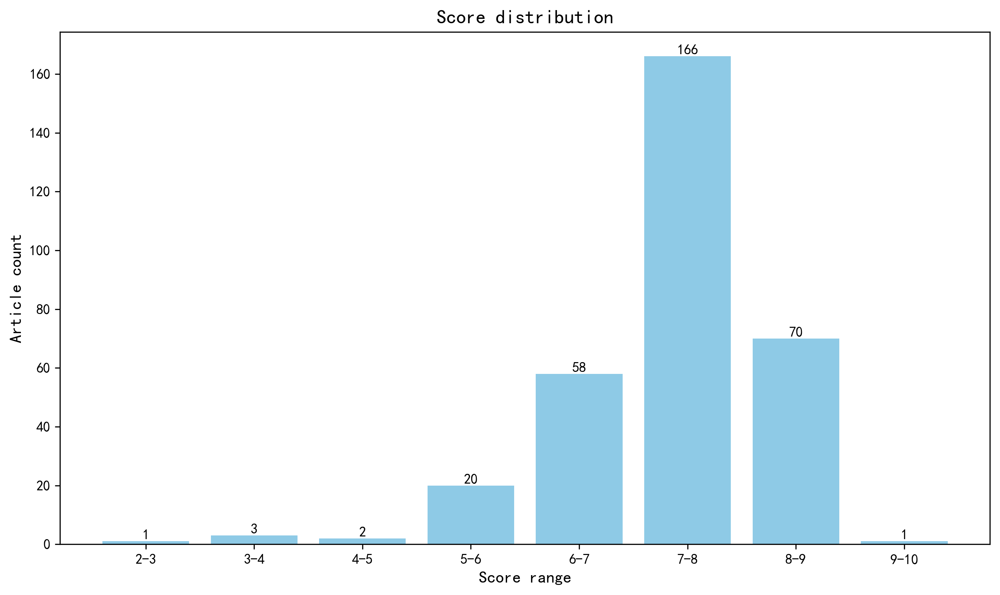

神经科学快讯·第014期 Science Advances：睡眠不足让小鼠“忘记”见过谁，但记忆并未消失 (2026-06-13)
📊 本周概览
历史摘要修订（2026-10-18）：第 014 期保留历史期号、日期与封面。本期 578 条记录中补回 170 条正式摘要，仅对这些条目使用 DeepSeek 重新评分和分级推荐，其余评估保持原值。修订后拟发布 280 篇，其中 5 篇仍缺充分摘要，已保留资料不足提示。来源、旧评分和推荐变更见 getfiles/abstract_history_2026-10-18.json。
- 头条推荐: 1 篇
- 深度解读: 171 篇
- 简要提及: 108 篇
- 跨界启发: 0 篇
- 已过滤: 298 篇
🌏 环球视野

地区与机构按本期原始发表记录、ROR 及城市地址规则分别统计；跨地区合作可重复计入，不作为完整机构排名。评分分布不含“域外局限”文章。
🌍 国家/地区分布 TOP 10
| 排名 | 国家 | 文章数量 |
|---|---|---|
| 1 | United States | 138 |
| 2 | China | 52 |
| 3 | United Kingdom | 29 |
| 4 | Germany | 25 |
| 5 | Canada | 24 |
| 6 | Switzerland | 20 |
| 7 | France | 13 |
| 8 | Spain | 12 |
| 9 | Australia | 11 |
| 10 | Japan | 11 |
地区计次合计: 426 次；取得地区信息 264/321 篇
🏢 研究机构 TOP 10
| 排名 | 机构 | 文章数量 |
|---|---|---|
| 1 | Harvard University | 12 |
| 2 | Chinese Academy of Sciences | 12 |
| 3 | Stanford University | 11 |
| 4 | Yale University | 11 |
| 5 | Howard Hughes Medical Institute | 10 |
| 6 | University of Oxford | 9 |
| 7 | McGill University | 8 |
| 8 | Washington University in St. Louis | 8 |
| 9 | Peking University | 8 |
| 10 | University of Chicago | 7 |
📊 评分分布
| 评分区间 | 文章数量 |
|---|---|
| 2-3 | 1 |
| 3-4 | 3 |
| 4-5 | 2 |
| 5-6 | 20 |
| 6-7 | 58 |
| 7-8 | 166 |
| 8-9 | 70 |
| 9-10 | 1 |
总计: 321 篇评分文章
📈 各领域文章分布
| 领域 | 深度解读 | 简要提及 | 总计 |
|---|---|---|---|
| 系统与环路神经科学 | 51 | 9 | 60 |
| 未知领域 | 0 | 56 | 56 |
| 认知神经科学 | 26 | 9 | 35 |
| 临床与转化神经科学 | 26 | 7 | 33 |
| 分子与细胞神经科学 | 23 | 6 | 29 |
| 感觉与运动神经科学 | 13 | 8 | 21 |
| 计算与理论神经科学 | 13 | 6 | 19 |
| 方法学 | 10 | 3 | 13 |
| 发育神经科学 | 8 | 2 | 10 |
| 社会与情感神经科学 | 1 | 2 | 3 |
合计: 深度解读 171 篇，简要提及 108 篇，共 279 篇
🥇 头条推荐（9.0+分）
Endocytome profiling uncovers cell-surface protein dynamics underlying neuronal connectivity
头条推荐 9.1/10中文标题: 内吞组图谱揭示神经元连接性背后的细胞表面蛋白动力学
作者: Colleen N McLaughlin, Hui Ji, Katherine X Dong et al.
单位: Department of Biology, Howard Hughes Medical Institute, Stanford University, Stanford, CA 94305, USA. Electronic address: cnm@stanford.edu.; Broad Institute of MIT and Harvard, Cambridge, MA 02142, USA.; Department of Biology, Howard Hughes Medical Institute, Stanford University, Stanford, CA 94305, USA. 等
研究地区: United States
关键词: 蛋白质组学, 内吞分析, 果蝇, 嗅觉神经元, 细胞表面蛋白, 发育
亮点: 首次系统绘制果蝇嗅觉神经元表面蛋白质内吞动态图谱，揭示内吞调控神经连接的新机制。
核心优势: 开创性endocytome profiling技术，结合定量蛋白质组学和遗传学，实现了细胞类型特异性的表面蛋白质动态原位解析。
研究局限: 目前仅以果蝇嗅觉系统为模型，向哺乳动物系统推广需验证，且方法复杂度较高。
目标读者: 发育神经生物学、细胞神经科学、蛋白质组学、系统生物学家以及研究神经连接机制的学者。
推荐理由: 该研究开发了'内吞组分析'方法，在果蝇嗅觉受体神经元中系统性绘制了超过1000种细胞表面蛋白的内吞动态图谱，揭示了发育过程中表面蛋白质组的广泛重塑。这一方法为理解神经元连接性建立的分子机制提供了前所未有的视角，并为其他细胞类型和物种的表观组研究开辟了新途径。
📚 精选文献（按领域分类）
临床与转化神经科学
中文标题: 人脑动脉瘤中的脑血管脆弱性和纤维化
作者: Jerry C. Wang, Chang N. Kim, Ethan A. Winkler
资深研究者: Chang N. Kim (h指数=17); Ethan A. Winkler (h指数=48)
关键词: 单细胞测序, 空间转录组学, 人类, 脑血管, 脑动脉瘤, 纤维化
亮点: 单细胞与空间转录组学揭示脑动脉瘤中血管成纤维细胞激活与髓系炎症的交互作用，为治疗提供新靶点。
核心优势: 首次构建人体脑动脉瘤单细胞图谱，发现血管平滑肌细胞丢失后成纤维细胞替代和特异性巨噬细胞浸润的新病理机制。
研究局限: 缺乏功能验证实验（如动物模型或体外干预），结论主要基于相关性分析。
目标读者: 脑血管疾病研究者、神经病理学家、单细胞和空间转录组学领域专家
推荐理由: 该研究通过单细胞和空间转录组学技术，构建了人脑动脉瘤的细胞图谱，揭示了病理性血管重塑中平滑肌细胞缺失和成纤维细胞激活的关键机制。研究为理解脑动脉瘤的发病基础提供了分子层面的新见解，并为开发针对血管纤维化的治疗策略指明了潜在靶点。
Cryopreservation through vitrification enables functional recovery of the mouse hippocampus.
深度解读 8.6/10中文标题: 通过玻璃化冷冻保存实现小鼠海马的功能恢复
输入资料不足：原始摘要未取得，当前评估仅供初筛，推送前需核对原文。
作者: Alex Maya-Romero, Roberto Zoncu
单位: Department of Molecular and Cell Biology, University of California, Berkeley, CA 94720.
研究地区: United States
关键词: 玻璃化冷冻, 低温保存, 小鼠, 海马, 功能恢复, 组织保存
亮点: 首次实现哺乳动物完整脑区玻璃化冷冻后的功能恢复，开辟神经组织保存新方向
核心优势: 证明了完整的海马组织在冷冻-解冻后能恢复电生理功能，是低温生物学和神经科学的里程碑
研究局限: 仅展示海马区急性功能恢复，长期存活和复杂认知功能尚未评估
目标读者: 低温生物学家、神经科学家、再生医学及器官保存领域研究者
推荐理由: 本研究展示了一种玻璃化冷冻技术，成功保存小鼠海马组织的结构完整性和突触功能，并在解冻后恢复神经活动。这一突破为脑组织长期储存和神经移植提供了可行方案，有望推动神经退行性疾病的治疗和组织工程发展。对于转化神经科学领域，该工作兼具方法学创新与临床潜力。
中文标题: 弥漫性中线胶质瘤的预后人脑网络
作者: Jai Sidpra, Valentina Lind, Darren R. Hargrave
资深研究者: Jai Sidpra (h指数=13)
关键词: 弥漫性中线胶质瘤, 人类, 肿瘤网络映射, 全脑, 预后, 功能连接
亮点: 首次在人类活体大脑中绘制弥漫性中线胶质瘤的预后相关网络，揭示肿瘤劫持正常神经环路的新机制。
核心优势: 结合功能连接、生存分析、转录组和手术结局，多维度证实了DMG网络的存在和临床意义。
研究局限: 样本量相对较小（尤其是手术切除获益分析），且网络映射基于静息态fMRI，可能受肿瘤占位效应影响。
目标读者: 神经肿瘤学家、神经影像学家、脑网络研究者、儿童肿瘤临床医生
推荐理由: 本研究首次在活体人脑中构建弥漫性中线胶质瘤的肿瘤网络，揭示了脑肿瘤通过神经元-胶质瘤突触和缝隙连接形成的全脑整合连接，并证明该网络特征具有预后价值。这一发现不仅为致命性儿童脑肿瘤提供了新的生物标志物，也为理解胶质瘤的侵袭机制和开发靶向网络的治疗策略开辟了新方向。
中文标题: 阿尔茨海默病小胶质细胞样细胞中富集的体细胞癌症变异驱动炎症和增殖状态
作者: August Yue Huang, Zinan Zhou, Maya Talukdar et al.
单位: Broad Institute of MIT and Harvard, Cambridge, MA, USA. Electronic address: yue.huang@childrens.harvard.edu.; Division of Genetics and Genomics and Manton Center for Orphan Diseases, Boston Children's Hospital, Boston, MA, USA; Department of Pediatrics, Harvard Medical School, Boston, MA, USA 等
研究地区: United States, South Korea
关键词: 阿尔茨海默病, 小胶质细胞, 体细胞突变, 克隆造血, 深度测序, 单细胞核RNA测序
亮点: 揭示阿尔茨海默病小胶质细胞中体细胞癌症驱动变异富集，驱动炎症和增殖状态
核心优势: 首次将体细胞突变（癌症驱动基因和克隆造血）与AD小胶质细胞炎症表型直接关联，多模态验证
研究局限: 因果关系尚未明确，体细胞变异可能为伴随现象，独立队列验证缺失
目标读者: 神经退行性疾病、小胶质细胞生物学、体细胞突变和克隆造血、计算基因组学研究者
推荐理由: 该研究通过深度面板测序和单细胞核RNA测序，首次系统揭示阿尔茨海默病（AD）脑中体细胞癌症驱动基因突变富集于微胶质样细胞，且与克隆造血相关。这些突变赋予细胞炎症和增殖特性，可能加速神经退行性进程。研究为理解AD的微胶质介导神经炎症机制提供了全新视角，并提示外周造血来源的体细胞突变可作为疾病修饰靶点。
中文标题: 氢溴酸山莨菪碱靶向Matk预防缺血性卒中中延迟rtPA溶栓引起的血管源性脑水肿
作者: Song Guo, An-Qing Li, Fan-Kai Chen et al.
单位: Department of Integration of Chinese and Western Medicine, School of Basic Medical Sciences, Peking University, Beijing, China.; Academy of Integration of Chinese and Western Medicine, Peking University Health Science Center, Beijing, China.; The Key Discipline for Integration of Chinese and Western Basic Medicine (Microcirculation) of the National Administration of Traditional Chinese Medicine, Beijing, China. 等
研究地区: China
关键词: 蛋白质组学, 基因芯片, 小鼠, 缺血性脑卒中, 脑水肿, Matk
亮点: 首次揭示Matk-Src信号轴作为山莨菪碱氢溴酸盐靶点，为溶栓后脑水肿提供潜在治疗策略。
核心优势: 多组学筛选结合体内外实验，鉴定Matk为全新药物靶点，并阐明其调控血管源性水肿的分子机制。
研究局限: 仅基于小鼠模型，缺乏大动物及临床验证；Matk稳定性调控的具体细节尚不完整。
目标读者: 卒中神经科学、脑血管病、药物靶点发现与转化医学研究者
推荐理由: 该研究首次揭示山莨菪碱通过靶向Matk保护血脑屏障，为延迟rtPA溶栓后血管源性脑水肿提供了首个药理干预策略。通过蛋白质组学与基因芯片筛选锁定关键靶点，机制清晰且临床转化潜力明确，对卒中治疗领域具有重要价值。
中文标题: 精神分裂症前脑类器官中的蛋白质状态失调和性别特异性神经发育特征
作者: Bogetofte, H., Schmidt, S. I., Sejberg Oehlenschlaeger, M. et al.
单位: University of Southern Denmark
研究地区: Denmark
关键词: 类脑器官, 多组学, 精神分裂症, 性别差异, 蛋白质组, 翻译后修饰
亮点: 蛋白状态失调而非转录组变化揭示精神分裂症神经发育的性别特异性分子特征
核心优势: 大规模多组学类器官研究，首次系统证明蛋白磷酸化等翻译后修饰是精神分裂症早期神经发育异常的主要编码层
研究局限: 基于体外类器官模型，无法完全模拟体内环境；样本量虽较大但种族等混杂因素未充分控制；缺乏功能验证或因果性证据
目标读者: 精神分裂症研究者、发育神经生物学、蛋白质组学、系统生物学、计算神经科学研究者
推荐理由: 本研究利用来自17名精神分裂症患者和17名对照的背侧前脑类器官，整合单核转录组、蛋白质组、代谢组和翻译后修饰分析，揭示了精神分裂症中蛋白质状态的失调以及性别特异性的神经发育分子特征。该工作为理解遗传风险如何影响人脑早期发育提供了多层次分子图谱，并为精神疾病的性别差异机制研究开辟了新路径。
中文标题: 欧洲血统个体定量测量广泛性焦虑症状的全基因组荟萃分析
作者: Megan Skelton, Brittany L Mitchell, Elham Assary et al.
单位: School of Biomedical Sciences, Faculty of Medicine, The University of Queensland, Brisbane, Queensland, Australia.; Social, Genetic and Developmental Psychiatry Centre, Institute of Psychiatry, Psychology and Neuroscience, King's College London, London, UK.; Brain and Mental Health Program, QIMR Berghofer Medical Research Institute, Brisbane, Queensland, Australia. 等
研究地区: United Kingdom, Australia, Canada, Norway, Estonia, Germany, Spain, Switzerland, Sweden, Denmark, The Netherlands, United States
关键词: GWAS, meta分析, 多基因评分, 广泛性焦虑, 人类, 跨祖先验证
亮点: 大规模定量GWAS揭示广泛性焦虑症状的遗传架构和跨种族多基因预测
核心优势: 样本量巨大（693,869人），发现39个新位点，并通过跨祖先多基因评分验证遗传预测效力
研究局限: 仅欧洲血统人群分析，定量测量队列间异质性，因果机制未深入探索
目标读者: 焦虑遗传学、精神基因组学、计算生物学和精准精神病学研究者
推荐理由: 这项大规模基因组关联研究对近70万欧洲个体的广泛性焦虑症状进行了meta分析，鉴定出80个独立变异和74个相关位点，其中39个为新发现。通过多祖先验证，证明了多基因评分在不同人群中的普适性。研究将焦虑症状连续谱系的遗传架构与临床障碍联系起来，为理解焦虑的生物学基础和治疗靶点提供了重要参考。
中文标题: 肌萎缩侧索硬化中的发育性环路不稳定：从超兴奋性到网络崩溃
作者: Ilaria Donati Della Lunga, Letizia Cerutti, Valerio Barabino et al.
单位: Genoa Instruments, 16152, Genova, Italy.; Neurofacility, Istituto Italiano di Tecnologia (IIT), 16163, Genova, Italy.; Department of Informatics, Bioengineering, Robotics and System Engineering (DIBRIS), Università of Genova, 16145, Genova, Italy. 等
研究地区: Italy
关键词: ALS, SOD1G93A, 皮层网络, 发育轨迹, 超兴奋性, 多模态
亮点: 将ALS重新定义为皮层网络在发育早期的稳态失衡，并用电生理网络特征配合机器学习识别出早期诊断的候选生物标志物。
核心优势: 采用形态学、电生理、药理、分子、计算建模与机器学习相结合的多模态策略，在SOD1G93A培养皮层网络中系统追踪从超兴奋到网络崩溃的发育轨迹，并建立星形胶质细胞功能障碍与神经元不稳定的因果联系。
研究局限: 证据完全来自体外培养的胚胎皮层网络，缺少在体验证和跨模型（非SOD1G93A）重复；发育性起源的因果链条及向人类ALS的转化外推仍需谨慎。
目标读者: ALS与神经退行性疾病研究者、神经发育与突触生理学家、胶质细胞生物学家、计算与系统神经科学家及转化生物标志物研究者
推荐理由: 该研究挑战了ALS作为晚发性运动神经元病的传统观点，通过多模态方法追踪SOD1G93A小鼠皮层网络发育轨迹，揭示ALS神经元在成熟前出现短暂超兴奋性，随后网络连接退化，最终导致网络崩溃。研究整合形态、电生理、药理、分子、计算与机器学习，为ALS的发育起源和早期干预提供了新视角，对临床转化与发育神经科学均具重要启示。
Septin multimer autoantibodies in severe motor neuropathy mimicking lower motor neuron disease.
深度解读 8.0/10中文标题: 模拟下运动神经元病的严重运动神经病中的Septin多聚体自身抗体
作者: Friederike A Arlt, Ramona Miske, Luise Appeltshauser et al.
单位: Department of Laboratory Medicine and Pathology, Mayo Clinic, Rochester, MN 55901, USA.; German Center for Neurodegenerative Diseases (DZNE) Berlin, Berlin 10117, Germany.; Department of Neurology and Experimental Neurology, Charité-Universitätsmedizin Berlin, corporate member of Freie Universität and Humboldt-Universität zu Berlin, Berlin 10117, Germany. 等
研究地区: United States, Germany
关键词: 自身抗体, 运动神经病, Septin, 免疫印迹, 质谱鉴定, 基因敲除
亮点: 在拟似下运动神经元病的严重运动神经病中，首次鉴定出靶向Septin多聚体的新型自身抗体，并提示免疫治疗可能改变致死性病程。
核心优势: 从患者血清免疫荧光异常模式出发，经免疫共沉淀-质谱鉴定、细胞法/中和/敲除验证，并结合皮肤与腓肠神经病理及4年随访，形成完整的多模态证据链。
研究局限: 仅3例血清阳性患者，病例数极少且无直接致病性证据；队列虽大但阳性率极低，作为生物标志物的敏感性与特异性尚未在独立大样本中验证。
目标读者: 神经免疫学、周围神经病与运动神经元病临床研究者，以及自身抗体生物标志物与补体介导病理机制研究者
推荐理由: 该研究在模拟下运动神经元病的严重运动神经病中鉴定出针对Septin多聚体的新型自身抗体，结合免疫沉淀-质谱、细胞底物实验和基因敲除验证，确立了自身免疫病因。这一发现将部分LMND表型从不可治的神经退行性疾病重新归类为可免疫治疗的运动神经病，对临床鉴别诊断和治疗决策具有直接转化价值，同时为周围神经自身免疫机制提供了分子靶点。
中文标题: 使用深度神经集成进行语音的神经解码
作者: Yoon, S., Avansino, D. T., Madugula, S. et al.
单位: Stanford University
研究地区: United States
关键词: 脑机接口, 深度集成学习, 语音解码, 计算建模, 人类, 实时系统
亮点: 首次在实时语音脑机接口中闭环验证深度集成方法的有效性，并提出计算高效的伪集成方案
核心优势: 首次在人体内闭环验证深度集成对语音解码的实时增益，并引入资源高效的伪集成方法
研究局限: 样本量有限（4名参与者），实时增益的长期稳定性和泛化性有待进一步验证
目标读者: 脑机接口、计算神经科学、语音解码和机器学习研究者
推荐理由: 本研究系统性地评估了深度集成方法在语音脑机接口解码中的潜力，展示了多模型集成在提升准确率方面的显著优势，并探讨了计算资源与实时部署的权衡。尽管尚未在在线闭环系统中验证，但其提供的基准和约束分析为未来临床级语音BCI的设计提供了重要参考，尤其适合关注脑机接口算法优化与转化应用的读者。
中文标题: 靶向cGAS-STING通路可减轻敲入小鼠模型中亨廷顿病的发病机制
作者: Anuradha Kesharwani, Sunayana Dagar, Isabella Zuniga et al.
单位: Department of Chemistry and Biochemistry, Florida Atlantic University, Jupiter, FL 33458.; Florida Atlantic University, Stiles-Nicholson Brain Institute, Jupiter, FL 33458.; David and Lynn Nicholson Center for Neuroscience Research, Jupiter, FL 33458. 等
研究地区: United States, Mexico
关键词: 亨廷顿病, cGAS-STING, 神经炎症, 敲入小鼠, 行为学, 先天免疫
亮点: 遗传与药理双重证据将cGAS-STING固有免疫通路确立为亨廷顿病进展的可干预驱动因素
核心优势: 在Q175DN敲入小鼠中结合cGAS基因敲除与STING抑制剂H-151的药理验证，佐以纵向行为、组织学、转录组和脂质组多模态证据，形成机制与转化闭环。
研究局限: 机制研究主要依赖单一敲入小鼠模型和H-151的有限药代数据，cGAS-STING如何具体驱动纹状体神经元死亡的因果链条仍不清晰，人体相关性未验证。
目标读者: 神经退行性疾病、神经免疫学、固有免疫信号通路及转化神经药理学研究者
推荐理由: 该研究在亨廷顿病（HD）敲入小鼠模型中遗传敲除cGAS，发现可显著改善运动缺陷并减轻病理，首次在体内证明cGAS-STING通路在HD发病中的驱动作用。研究将先天免疫传感与神经退行性变直接联系，为HD提供了新的治疗靶点，并提示cGAS-STING通路可能成为多种神经退行性疾病的通用干预节点。
Corticostriatal connectivity in monozygotic twin pairs discordant for obsessive-compulsive disorder.
深度解读 7.8/10中文标题: 强迫症不一致的同卵双胞胎对中的皮质纹状体连接
作者: Jan C Beucke, Lennart May, Ibai Diez et al.
单位: Center for Inflammation Imaging, Department of Radiology, Mass General Brigham, Boston, MA 02114, USA.; Centre for Psychiatry Research, Department of Clinical Neuroscience, Karolinska Institutet & Stockholm Health Care Services, Region Stockholm, 11330 Stockholm, Sweden.; Institute for Systems Medicine, Department of Human Medicine, MSH Medical School Hamburg, 20457 Hamburg, Germany. 等
研究地区: Germany, Sweden, United States, Spain, The Netherlands, Australia
关键词: 强迫症, 双生子设计, 静息态fMRI, 皮质-纹状体环路, 遗传易感性, 非共享环境
亮点: 利用单卵双生子不一致设计，首次在严格控制共享遗传与环境因素的前提下，将OCD的丘脑-纹状体低连接归因于非共享环境，而将纹状体-内侧眶额高连接归因于家族易感性。
核心优势: 双生子不一致设计在人类研究中近乎天然实验，能有效拆分共享遗传/环境与非共享环境对CSTC环路不同连接的差异化贡献。
研究局限: 样本量极小（仅14对不一致双生子加14对对照双生子），静息态功能连接为相关证据，无法确立因果方向，且家族易感性比较的统计效力有限。
目标读者: 强迫症与精神疾病神经影像研究者、临床精神病学与遗传流行病学工作者、系统与计算神经科学中对环境-基因交互感兴趣的研究者
推荐理由: 本研究利用同卵双生子不一致设计，巧妙分离了强迫症相关皮质-纹状体环路的家族易感性与非共享环境效应。发现部分连接异常源于共享遗传/环境因素，而另一些则与疾病状态或非共享环境相关，为理解强迫症的环路机制提供了因果性更强的人类证据，并提示干预靶点需区分素质性与状态性改变。
中文标题: 多模态大脑测量与精神病理学领域之间的不同关联预测青少年功能
作者: Ramduny, J., Mulvey, A. G., Kohler, R. et al.
单位: Yale University
研究地区: United States
关键词: 多模态MRI, 人类, 青少年, 精神病理学, 正则化典型相关分析, 皮质纹状体网络
亮点: 大规模多模态脑测量与精神病理学域的整合分析，揭示两种脑-行为共变模式并预测青少年功能
核心优势: 利用ABCD Study大样本（n=5408）和正则化典型相关分析，同时整合结构、微结构和功能测量，识别出精神病理学研究的新关联模式。
研究局限: 预印本缺乏详细的交叉验证和多重比较校正描述；结果可能受样本偏差影响，且因果推断有限。
目标读者: 发展认知神经科学、精神影像学、计算精神病学和青少年心理健康研究者
推荐理由: 该研究利用ABCD大型队列（n=5408），通过多模态脑测量（结构、微结构、功能）与正则化典型相关分析，系统揭示了皮质纹状体、皮质边缘和执行控制网络与精神病理学维度间的关联，并验证了这些关联对未来社会心理功能的预测价值。其整合性框架为理解青少年精神疾病的大脑基础提供了新视角，也为发展基于影像的预测工具奠定了基础。
中文标题: 脑小血管病的白质微结构指纹
作者: Aurélie Bussy, Camille Cathala, Fábio Carneiro et al.
单位: Laboratory for Research in Neuroimaging LREN, Centre for Research in Neurosciences, Department of Clinical Neurosciences, Lausanne University Hospital and University of Lausanne, Lausanne, 1011, Switzerland.; Signal Processing Laboratory 5, Ecole Polytechnique Fédérale de Lausanne, Lausanne, 1015, Switzerland.; Imaging Neuroscience of Ageing laboratory inAGE, Universitätsklinik für Neurologie, Inselspital Bern, University of Bern, Bern, 3010, Switzerland. 等
研究地区: Switzerland
关键词: 脑小血管病, 白质高信号, 定量MRI, 弥散成像, NODDI, g-ratio
亮点: 多模态定量MRI揭示脑小血管病白质高信号从核心到正常外观白质的离心性微结构梯度，并将其与系统性血管代谢风险联系。
核心优势: 在363人社区队列中整合MTsat、R1、R2*、扩散指标与NODDI/g-ratio，结合测地线分层和PCA/PLS，系统刻画WMH空间异质性与心血管风险的关联。
研究局限: 横断面设计无法确立因果关系，队列以社区中老年人为主且WMH负荷可能较轻，定量MRI指标的特异性受限于模型假设，缺乏外部独立验证。
目标读者: 神经影像、脑小血管病与白质微结构、血管性认知障碍及计算神经影像研究者
推荐理由: 该研究在363名社区成人中结合定量弛豫测量（MTsat、R1、R2*）与弥散指标（FA、MD、NODDI、g-ratio），系统刻画了脑小血管病白质高信号的微结构指纹，揭示了其空间异质性及其与正常表现白质弥漫性损伤和心血管风险的关联。方法学上为白质病变的微结构成分提供了多参数解析框架，临床上有助于早期识别SVD相关白质损伤并指导风险分层。
中文标题: Aβ聚集体在阿尔茨海默病脑中结合U1剪接体核糖核蛋白
作者: Tao, Y., Francis, A. E., Liu, W. et al.
单位: Ann Romney Center for Neurologic Diseases, Brigham and Women's Hospital Department of Neurology, Harvard Medical School
研究地区: United States
关键词: 阿尔茨海默病, Aβ聚集体, U1 snRNP, 剪接异常, 人类, 蛋白质组学
亮点: 首次发现Aβ聚集体直接结合U1 snRNP，为阿尔茨海默病中Aβ与剪接体功能障碍之间提供直接联系。
核心优势: 多模态证据（免疫沉淀、深度测序、免疫电镜、RNA原位杂交）证实Aβ纤维与U1 snRNP的物理结合，并定位于斑块边缘。
研究局限: 结合仅见于部分斑块，功能后果未直接验证，且与tau-U1相互作用的相对贡献尚未厘清。
目标读者: 阿尔茨海默病研究者、神经病理学家、RNA剪接和蛋白质聚集领域专家
推荐理由: 该研究揭示了Aβ聚集体直接结合U1 snRNP这一关键剪接复合体，为阿尔茨海默病中的异常剪接提供了新的分子机制。通过生化与蛋白质组学方法，作者发现Aβ而非tau是导致U1 snRNP不溶性与功能紊乱的主要因素，挑战了传统观点，并为AD的病理机制和潜在治疗靶点开辟了新方向。对神经退行性疾病研究者具有重要启示。
中文标题: 通过可微模拟类朊病毒传播实现tau蛋白扩增速率的空间分辨映射
作者: Kondo, Y., Naoki, H.
单位: Nagoya University
研究地区: Japan
关键词: tau PET, 可微仿真, 反应-扩散模型, 逆向问题, 阿尔茨海默病, 全脑
亮点: 结合可微模拟和深度学习，从tau PET数据中解码脑区特异性传播速率
核心优势: 首次实现全脑体素级tau放大率的推断，揭示了静态PET无法捕获的区域易感性
研究局限: 依赖模型假设（反应扩散）和单一模态数据，缺乏直接生物学验证
目标读者: 计算神经科学家、神经影像学家、神经退行性疾病研究者
推荐理由: 本研究提出了一种可微分反应-扩散框架，能够从tau PET数据中直接推断全脑尺度的空间异质性tau扩增率。通过将MRI约束的前向模拟与误差反向传播相结合，该工作攻克了神经退行性疾病中病理传播动力学的逆问题，为理解tau蛋白病异质性机制和预测个体化进展提供了全新工具。
中文标题: T2Pdecoder：从转录组数据实现以蛋白质为中心的分析
作者: Hui Wang, Jihong Tang, Yimeng Qiao et al.
单位: Division of Life Science, Department of Chemical and Biological Engineering, State Key Laboratory of Nervous System Disorders, The Hong Kong University of Science and Technology, Hong Kong SAR, China. jgwang@ust.hk.; SIAT-HKUST Joint Laboratory of Cell Evolution and Digital Health, HKUST Shenzhen-Hong Kong Collaborative Innovation Research Institute, Shenzhen, Guangdong, China. jgwang@ust.hk.; Division of Life Science, Department of Chemical and Biological Engineering, State Key Laboratory of Nervous System Disorders, The Hong Kong University of Science and Technology, Hong Kong SAR, China. 等
研究地区: China
关键词: 深度学习, 多组学整合, 蛋白质预测, 胶质瘤, IDH突变, 转录组学
亮点: 多组学深度学习从转录组预测全蛋白组，推动癌症蛋白质功能研究
核心优势: 创新性整合RNA与蛋白质的共享嵌入空间，实现从转录组数据预测广泛蛋白质丰度，并在胶质瘤中验证其功能亚群发现能力。
研究局限: 性能提升幅度有限（仅适度改进），主要基于胶质瘤数据集，跨癌症类型和组织的泛化性未经充分验证。
目标读者: 计算生物学、癌症蛋白质组学、神经肿瘤学研究者
推荐理由: T2Pdecoder利用深度学习整合多组学数据，从转录组中预测全蛋白质组丰度，有效解决了RNA-蛋白弱相关难题。该模型在IDH突变胶质瘤中验证，为理解肿瘤生物学和开发新标志物提供了计算工具，有望加速精准神经肿瘤学研究。
Sleep EEG Signal Criticality as a Non-Invasive Predictor of Cognitive Decline in Dementia
深度解读 7.3/10中文标题: 睡眠EEG信号临界性作为痴呆认知衰退的非侵入性预测指标
作者: Stanisław Narębski, Tomasz Komendziński, Tomasz M. Rutkowski
资深研究者: Tomasz Komendziński (h指数=7); Tomasz M. Rutkowski (h指数=23)
关键词: EEG, MFDFA, 非线性动力学, 人类, 睡眠, 认知衰退
亮点: 睡眠脑电临界态动力学作为认知衰退的非侵入性生物标志物
核心优势: 首次将MFDFA量化临界态与纵向队列结合，揭示睡眠EEG预测痴呆的潜力
研究局限: 样本仅限老年女性，缺乏独立验证队列，未与金标准生物标志物对比
目标读者: 计算神经科学、睡眠研究、阿尔茨海默病早期诊断研究者
推荐理由: 该研究创新地将睡眠EEG信号的临界性（通过多重分形去趋势波动分析量化）作为认知衰退的非侵入式预测指标。利用大型纵向队列，揭示了基线睡眠脑动力学的组间差异，为痴呆症的早期预警提供了新的电生理标志物，并展示了非线性动力学在临床转化中的潜力。
中文标题: Kv7.2功能缺失导致早期过度兴奋与网络重塑
作者: Nina Dirkx, Marcus Kaji, Els De Vriendt et al.
单位: Translational Epilepsy Genomics Group, VIB Center for Molecular Neurology, VIB, Antwerp, 2610, Belgium.; Translational Neurosciences, Faculty of Medicine and Health Science, University of Antwerp, Antwerp, 2610, Belgium.; Department of Biomedical Sciences, University of Antwerp, Antwerp, 2610, Belgium. 等
研究地区: Belgium, Italy, United States
关键词: KCNQ2, Kv7.2, 癫痫, 人源神经元模型, 网络重塑, 发育轨迹
亮点: 患者来源人神经元模型揭示Kv7.2功能缺失导致双相兴奋性与网络重塑的动态发育轨迹
核心优势: 纵向多模态设计（电生理、转录组、结构）在同一人源模型中捕捉到从早期过度兴奋到后期代偿性网络失配的完整时间轴。
研究局限: 仅基于体外患者iPSC来源神经元模型，缺乏在体环路与行为验证，且样本量未明确，机制因果链仍待动物模型确认。
目标读者: 癫痫遗传学、离子通道神经生物学、人源神经模型与计算系统神经科学研究者
推荐理由: 该研究利用KCNQ2-DEE和SeLFNE患者来源的人神经元模型，纵向多模态解析了Kv7.2功能缺失导致的早期兴奋性增高与后期网络重塑的双相过程，揭示了基因变异如何沿发育轨迹动态影响神经元和网络功能。这项工作的核心价值在于将遗传变异、发育时序与网络动力学联系起来，为理解KCNQ2相关癫痫的机制异质性和治疗窗口提供了重要线索，对临床转化和发育神经科学均有启发。
中文标题: Spider-MS：多发性硬化症预后的个体化多面体预测模型
作者: Carmen Tur, Silvia Susin-Calle, Susana Otero-Romero et al.
单位: CORE, Department of Medicine, University of Melbourne, Melbourne, Victoria 3000, Australia.; Multiple Sclerosis Centre of Catalonia (Cemcat), Department of Neurology, Vall d'Hebron University Hospital, Universitat Autònoma de Barcelona, Barcelona 08035, Spain.; Neuroimmunology Centre, Royal Melbourne Hospital, Parkville, Melbourne, Victoria 3000, Australia. 等
研究地区: Spain, Australia
关键词: 多发性硬化, 预后预测, 个体化医疗, 机器学习, 临床队列, 生物标志物
亮点: 基于首次发作队列的八结局个体化多发性硬化预后预测框架，并完成跨国外部验证
核心优势: 以单一首次发作队列构建覆盖八个临床结局的个体化生存预测模型，并在独立国际队列中完成外部验证，预测因子包含治疗暴露时间，贴近真实临床决策场景。
研究局限: 模型仍基于传统临床与MRI变量，Harrell's C值多在0.65-0.82区间，部分结局外部验证表现下降（如RAW），且缺乏与现有预后工具的正式头对头比较及决策曲线/校准的充分报告。
目标读者: 多发性硬化临床研究者、神经免疫学与神经影像学者、临床预测模型与预后方法学研究者
推荐理由: 该研究提出Spider-MS框架，利用巴塞罗那首次发作队列的临床与影像数据，在症状初现时即可个体化预测多发性硬化的多种结局（如残疾进展、复发等），并以多面体可视化呈现风险谱。其创新在于将多维度预后指标整合为个体化预测，为早期治疗分层提供了可解释的工具，对临床神经科学和转化医学具有重要价值。
中文标题: 雄性和雌性狨猴中脑选择性雌激素治疗部分抵消芳香化酶抑制对大脑和行为的不良影响
作者: Hannah Cournoyer, Abigail Monroy Duenas, Anusha Bharadwaj et al.
单位: Manning College of Information and Computer Sciences, University of Massachusetts Amherst, Amherst, Massachusetts 01003.; Department of Psychological and Brain Sciences, University of Massachusetts Amherst, Amherst, Massachusetts 01003.; Neuroscience and Behavior Graduate Program, University of Massachusetts Amherst, Amherst, Massachusetts 01003. 等
研究地区: United States
关键词: 芳香化酶抑制剂, 脑选择性前药, DHED, 雌二醇, 狨猴, 行为学
亮点: 脑选择性雌激素前药DHED在非人灵长类中抵消芳香化酶抑制剂所致认知与睡眠副作用，同时规避外周雌激素暴露
核心优势: 在狨猴（非人灵长类）中首次系统验证DHED的脑选择性转化及其对letrozole诱导的认知减慢、海马神经元兴奋性和睡眠碎片化的保护作用，转化医学价值明确。
研究局限: 体温调节在雌雄间出现相反效应且未深入机制；样本量有限、结论依赖单一记忆范式，海马电生理与行为因果链未完全建立。
目标读者: 神经内分泌学、行为神经科学、乳腺癌内分泌治疗副作用管理及转化神经药理学研究者
推荐理由: 该研究在雄性和雌性狨猴中测试了脑选择性雌二醇前药DHED对抗芳香化酶抑制剂所致认知、睡眠和体温调节副作用的效果。DHED在脑内转化为雌二醇而不影响外周，为乳腺癌患者接受芳香化酶抑制剂治疗时面临的神经副作用提供了潜在干预策略。研究采用非人灵长类模型，转化价值高，但样本量有限且部分行为学结果不一致，需进一步验证。
中文标题: DCPS通过P-body介导的RNA衰变调节TDP-43相关的神经退行性变
作者: Yingzhi Ye, Zhe Zhang, Yu Xiao et al.
单位: Brain Science Institute, Johns Hopkins University School of Medicine, Baltimore, MD 21205, USA; Cellular and Molecular Physiology Graduate Program, Johns Hopkins University School of Medicine, Baltimore, MD 21205, USA.; Department of Physiology, Pharmacology & Therapeutics, Johns Hopkins University School of Medicine, Baltimore, MD 21205, USA 等
研究地区: United States
关键词: CRISPRi筛选, 人类神经元, TDP-43, RNA decay, P-body, ALS/FTD
亮点: 发现DCPS通过调控P-body介导的RNA降解成为TDP-43蛋白病的潜在治疗靶点
核心优势: 首次将DCPS鉴定为TDP-43功能缺失的修饰因子，并揭示P-body在TDP-43神经毒性中的核心作用
研究局限: 主要基于体外人神经元模型，缺乏体内和患者验证；DCPS作为治疗靶点的可行性未在动物模型中评估
目标读者: 神经退行性疾病研究者、RNA生物学和P-body研究者、药物开发人员
推荐理由: 本研究通过CRISPRi筛选首次发现DCPS是TDP-43功能缺失的关键遗传修饰因子。DCPS通过调控P-body介导的RNA降解，影响TDP-43蛋白病相关的神经毒性。这一发现不仅揭示了TDP-43致病的新机制——将RNA代谢异常与神经退行直接关联，还为ALS/FTD等疾病提供了极具转化潜力的治疗靶点。对理解TDP-43病理及其在多种神经退行性疾病中的共性机制具有重要意义。
Differential brain response to a highly palatable drink in chronic low-back pain patients.
深度解读 7.2/10中文标题: 慢性腰痛患者对高适口性饮料的差异化脑反应
作者: Caleb Mahlen, Hussein Mreydem, Ivan de Araujo et al.
单位: Department of Neuroscience, School of Medicine and Dentistry, University of Rochester, Rochester, New York, United States.; Department of Psychiatry, School of Medicine and Dentistry, University of Rochester, Rochester, New York, United States.; Max Planck Institute for Biological Cybernetics, Tübingen, Germany. 等
研究地区: United States, Germany, Canada
关键词: fMRI, 人类, 慢性疼痛, 奖赏环路, 肥胖, 食物渴求
亮点: 挑战传统奖励假说，揭示慢性痛患者对美味食物的抑制控制缺陷
核心优势: 直接测试了慢性痛患者对美味食物的脑反应，发现奖赏回路无差异而控制回路异常，提供新的机制方向
研究局限: 样本量较小，统计多重比较控制不明确，缺乏因果推断
目标读者: 疼痛研究者、肥胖研究者、神经影像学家
推荐理由: 本研究通过功能磁共振成像发现慢性腰痛患者对高适口性饮料的大脑反应改变，尤其是奖赏相关脑区活动异常，为慢性疼痛与肥胖共病提供了新的神经机制解释。该工作提示疼痛管理需关注饮食行为调控，并可能推动基于脑刺激或认知干预的联合治疗策略。
中文标题: 目标血浆蛋白质组学揭示上调的TNFRSF蛋白在HIV相关中风中的核心作用
作者: Tailin Chen, Haijiang Lin, Xiaoxiao Chen et al.
单位: Shanghai Institute of Infectious Diseases and Biosecurity, Fudan University, Shanghai, China.; Taizhou City Center for Disease Control and Prevention, Taizhou, Zhejiang Province, China.; School of Public Health, and Key Laboratory of Public Health Safety of Ministry of Education, Fudan University, Shanghai, China. 等
研究地区: China
关键词: 血浆蛋白质组学, 人类, HIV, 中风, TNFRSF, 炎症
亮点: 血浆蛋白质组学揭示TNFRSF蛋白在HIV相关中风中的核心上调作用
核心优势: 多组匹配病例对照和纵向验证设计，确认TNFRSF蛋白与中风风险的稳定关联
研究局限: 基于关联分析，缺乏因果验证和深入机制阐释
目标读者: 神经免疫学、脑血管疾病、HIV感染研究及蛋白质组学研究者
推荐理由: 该研究通过靶向血浆蛋白质组学，在HIV感染者中鉴定出TNFRSF蛋白家族（如TNFRSF1A、TNFRSF1B）的上调与中风风险显著相关，揭示了连接慢性免疫激活与脑血管事件的分子桥梁。工作不仅为HIV相关中风的早期预警和预防提供了可检测的循环生物标志物，也为理解普通人群中免疫-血管交互作用在中风发生中的角色开辟了新视角。对从事临床神经免疫和血管生物学的研究者具有重要参考价值。
Genome-wide association study of cocaine self-administration behavior in Heterogeneous Stock rats
深度解读 7.2/10中文标题: 异质性Stock大鼠可卡因自我给药行为的全基因组关联研究
作者: Montana Kay Lara, Lieselot L G Carrette, Thiago Missfeldt Sanches et al.
单位: Department of Internal Medicine, Section on Molecular Medicine, Wake Forest University School of Medicine, Winston-Salem, NC, USA.; Jamestown Community College, Olean, NY, USA.; Department of Psychiatry, University of California San Diego, La Jolla, CA, USA. 等
研究地区: United States, France
关键词: GWAS, 大鼠, 可卡因自我给药, 遗传度, 成瘾
亮点: 最大规模的大鼠可卡因自我给药GWAS，发现与人类CES1同源的羧酸酯酶基因及其非同义变异，为可卡因使用障碍的遗传基础和潜在药物靶点提供新见解。
核心优势: 最大的大鼠可卡因自我给药遗传研究，识别了与人类GWAS一致的基因，并揭示羧酸酯酶作为潜在干预靶点。
研究局限: 样本量相对较小（836），缺乏独立复制和功能验证，证据强度有限。
目标读者: 成瘾遗传学、神经药理学、计算生物学和药物开发研究者
推荐理由: 该研究利用异质性Stock大鼠进行GWAS，系统考察了可卡因自我给药的多个行为表型（获取、升级、强迫样应答），发现六个全基因组显著关联位点，揭示了成瘾相关行为的遗传基础。方法严谨，表型维度丰富，为理解可卡因使用障碍的分子机制提供了重要的遗传学线索，也为后续基因功能验证和行为表型精细解析奠定了坚实基础。
中文标题: 早期精神病中症状维度特异性的神经递质与精神病理学和认知的相关性
作者: Wang, H. R., Schleifer, C. H., Liu, Z.-Q. et al.
单位: University of California, Los Angeles
研究地区: United States
关键词: PLSc, 人类, 全脑, 静息态功能连接, 早期精神病, 神经递质
亮点: 跨模态关联揭示早期精神病阴性症状和认知障碍的胆碱能/去甲肾上腺素能靶点
核心优势: 首次将早期精神病症状维度的功能连接模式与多个神经递质系统分布进行系统关联
研究局限: 样本量较小，功能连接与解剖学结果在受体关联上不一致，可能受混淆因素影响
目标读者: 精神疾病神经影像、神经递质成像、早期精神病治疗研究者
推荐理由: 本研究利用偏最小二乘相关分析（PLSc）将早期精神病患者的症状维度与全脑神经递质系统图谱相关联，揭示了特定症状（如阴性症状）与多巴胺、血清素等递质系统的空间对应关系。这一方法学框架不仅为理解精神病症状的神经化学基础提供了新视角，更重要的是直接指向了基于症状维度的精准药物靶点开发，有望缩短未治疗精神病期（DUP）并改善治疗匹配度。
中文标题: 通过EEG信号临界性进行深度睡眠分类：一种用于改善睡眠神经反馈的被动BCI方法
作者: Stanisław Narębski, Tomasz Komendziński, Tomasz M. Rutkowski
资深研究者: Tomasz Komendziński (h指数=7); Tomasz M. Rutkowski (h指数=23)
关键词: EEG, 睡眠分期, 临界性, DFA, 机器学习, 神经反馈
摘要: 基于EEG临界性特征的深睡高精度识别，为被动脑机接口神经反馈提供可靠状态检测引擎。
优势: 利用大规模老年女性数据集和多种分类器比较，证明了基于DFA临界性特征结合朴素贝叶斯分类器在深睡检测中的优越性能。 局限: 数据集仅包含老年女性，缺乏对不同年龄性别和睡眠障碍人群的泛化验证；DFA特征在睡眠分期中并非首创。 受众: 睡眠神经科学、脑机接口、计算神经科学和临床神经生理学研究者。
中文标题: 急性间歇性低氧和急性间歇性高碳酸低氧诱发慢性脊髓损伤患者的皮质-膈肌可塑性
作者: Alysha T Bogard, Michela J Mir, Tommy W Sutor et al.
单位: McKnight Brain Institute, University of Florida, Gainesville, Florida, United States.; Department of Physical Therapy, University of Florida, Gainesville, Florida, United States.; Breathing Research and Therapeutics Center, University of Florida, Gainesville, Florida, United States. 等
研究地区: United States, United Kingdom
关键词: 急性间歇性缺氧, 高碳酸血症, 膈肌, 皮质脊髓可塑性, 脊髓损伤, MEP
摘要: 在慢性脊髓损伤患者中，急性间歇性高碳酸低氧（AIHH）增强膈肌皮质脊髓可塑性的随机双盲证据
优势: 首个比较AIH和AIHH对SCI患者膈肌皮质脊髓兴奋性的随机双盲交叉研究，具有临床转化潜力 局限: 样本量小（n=10），且仅包括颈胸段损伤，需更大样本和长期随访验证 受众: 脊髓损伤康复、呼吸神经生理学、神经可塑性研究者
中文标题: 利用常规数据在资源受限环境下重建与预测阿尔茨海默病患者的疾病轨迹
作者: Ratnadeep Das, Atri Chatterjee, Sitikantha Roy
摘要: 基于常规临床数据实现阿尔茨海默病认知轨迹的双向重建与不确定性预测
优势: 集成GRU、Neural ODE和VAE，无需昂贵成像/生物标志物即可进行连续时间点的插值和外推，同时提供校准的不确定性估计。 局限: 使用单一ADNI数据集且缺乏与先进方法的充分对比，预测误差在临床可接受范围内仍较大；未进行跨数据集外部验证。 受众: 计算神经科学、阿尔茨海默病临床流行病学、医学人工智能研究者
中文标题: 生命边缘的多分形人类信号揭示心脑负相关
作者: Yago Emanoel Ramos, Maria Eloá do Ó, Henrique Ferraz de Arruda et al.
资深研究者: Mauro Copelli (h指数=30); Pedro V. Carelli (h指数=17)
摘要: 濒死时心脏与脑活动多重分形谱呈负相关，揭示体脑系统去整合动态
优势: 首次在人类终末阶段发现神经与心脏多重分形谱宽度呈反向变化，提示生理系统分层协调的崩溃 局限: 预印本，样本量未知，缺乏对照组，未见多模态验证及统计细节 受众: 非线性动力学与濒死生理学、系统神经科学研究者
Mapping human glymphatic compartments and putative meningeal border pathways in diseased models.
简要提及 6.4/10中文标题: 在疾病模型中绘制人类类淋巴系统分区和可能的脑膜边界通路
作者: Chia-Hung Wu, Yasutaka Fushimi, Yen-Feng Wang et al.
单位: School of Medicine, College of Medicine, National Yang Ming Chiao Tung University, Taipei 112304, Taiwan.; Department of Radiology, Taipei Veterans General Hospital, Taipei 112201, Taiwan.; Biomedical Imaging Research Center, University of Fukui, Fukui 9101193, Japan. 等
研究地区: Taiwan, Japan
摘要: 在477例活体人类中以增强T2-FLAIR绘制类淋巴血管周围与脑膜边缘通路的区室化影像图谱
优势: 大样本活体人类影像首次系统刻画血管周围膜内均质CSF环境与柔脑膜静脉周节点富集的梯度关系，为人类类淋巴通路提供非侵入性初步证据 局限: 疾病队列（主要为RCVS）缺乏健康对照与组织学金标准，无法直接可视化动静脉血管周围分流，因果与通路方向性推断受限 受众: 神经影像学、类淋巴/CSF动力学、脑血管病与转化神经科学研究者
中文标题: 运动诱导的汗液抑制小鼠抑郁样行为
作者: Yao, H., Xing, S., Liang, M. et al.
单位: Wuhan Sports UnivercitySchool of Sports Medicine, Wuhan Sports University, No. 461 Luoyu Rd. Wuchang District, Wuhan 430079, Hubei Province, China
研究地区: China
摘要: 运动后汗液可作为新型抗抑郁生物活性干预物
优势: 首次提出并验证运动诱导汗液具有抗抑郁效应，为抑郁症治疗提供新思路 局限: 汗液成分未鉴定，机制不清，仅依赖一个动物模型且样本量不足，缺乏严谨对照 受众: 抑郁症研究者、运动医学专家、神经免疫学学者
中文标题: 基于脑电图和功能性近红外光谱的抑郁状态分类的端到端机器学习
作者: Riki Sakurai, Simon Kojima, Mihoko Otake-Matsuura et al.
单位: Affiliation: Graduate School of Engineering and Science Shibaura Institute of Technology, Tokyo, Japan FINDEX Inc., Tokyo, Japan RIKEN AIP, Tokyo, Japan ORCID:0009-0006-3576-845X; Affiliation: RIKEN AIP, Tokyo, Japan ORCID: 0000-0003-3644-276X; Affiliation: Inria Centre at the University of Bordeaux Talence, France ORCID: 0000-0002-6509-7363 等
资深研究者: Tomasz M. Rutkowski (h指数=23)
研究地区: Japan, France, Poland
摘要: 基于EEG和fNIRS的抑郁状态分类pilot框架
优势: 探索了多模态生物信号在抑郁检测中的初步可行性 局限: 样本量极小（仅11名健康受试者），缺乏临床验证，无法推广 受众: 计算精神病学、生物信号处理、情感计算研究者
分子与细胞神经科学
中文标题: 来自血液和颅骨骨髓的脑植入单核细胞衍生巨噬细胞表现出不同的特性
作者: Siling Du, Feiya Ou, Antoine Drieu et al.
单位: Brain Immunology and Glia (BIG) Center, Washington University in St. Louis School of Medicine, St. Louis, MO, USA.; Department of Pathology and Immunology, Washington University in St. Louis School of Medicine, St. Louis, MO, USA.; Department of Pathology and Immunology, Washington University in St. Louis School of Medicine, St. Louis, MO, USA 等
研究地区: United States, France, New Zealand
关键词: 单核细胞来源巨噬细胞, 小胶质细胞, 谱系示踪, 多组学, 脑实质, 骨髓嵌合体
亮点: 系统揭示脑实质巨噬细胞的双重起源（血液和颅骨骨髓）及其功能异质性，挑战小胶质细胞仅来自卵黄囊的传统观点
核心优势: 综合运用谱系追踪、多组学、联体共生和颅骨移植等多种技术，首次证明血液和颅骨骨髓来源的巨噬细胞在脑实质定居并促进脱髓鞘，具有里程碑意义。
研究局限: 基于小鼠模型，人类中的保守性和功能意义尚待验证；MDM的长期维持和命运追踪仍需进一步研究。
目标读者: 神经免疫学、神经退行性疾病（尤其是脱髓鞘疾病）、小胶质细胞生物学和发育神经生物学研究者
推荐理由: 本研究通过谱系示踪、药理学耗竭和多组学分析，系统比较了脑内单核细胞来源巨噬细胞与卵黄囊来源小胶质细胞的转录组和表观基因组差异。尽管共享脑实质微环境，两者仍保持独特的身份和功能特征。这一发现为理解脑驻留巨噬细胞的异质性、疾病状态下的免疫重塑以及治疗靶点开发提供了重要基础。
Strain-specific propagation of variant Creutzfeldt-Jakob disease prions in humanized neural cells.
深度解读 8.5/10中文标题: 变异型克雅氏病朊病毒在人源化神经细胞中的株特异性传播
作者: Melissa L D Rayner, Parineeta Arora, Jacqueline M Linehan et al.
单位: National Health Service National Prion Clinic, National Hospital for Neurology and Neurosurgery, University College London Hospitals National Health Service Foundation Trust, London WC1N 3BG, United Kingdom.; Department of Pharmacology, UCL School of Pharmacy, University College London, London WC1N 1AX, United Kingdom.; Medical Research Council Prion Unit at UCL, UCL Institute of Prion Diseases, London W1W 7FF, United Kingdom. 等
研究地区: United Kingdom
关键词: 朊病毒, 神经退行性疾病, 诱导多能干细胞, 人源化细胞模型, 蛋白错误折叠, 构象模板
亮点: 首个可忠实扩增人源vCJD朊病毒的人源化神经细胞平台，揭示朊病毒复制受毒株相容性细胞状态约束。
核心优势: 用沉默-重建策略构建人源化神经细胞并经高通量克隆筛选，实现脑源vCJD朊病毒的长期感染与体外传代，且传代后仍能在人源化转基因及野生型小鼠中致病并保留生化与毒株特异性神经病理特征，同时证明对散发型CJD分离株不易感，直接支持毒株-细胞状态相容性假说。
研究局限: 仅基于单一细胞平台且主要验证vCJD，尚未明确支撑毒株特异性的具体细胞决定因子；对散发型CJD的“不易感”结论受分离株数量与来源限制，长期传代是否引入适应性突变也需更多组学与定量感染数据。
目标读者: 朊病毒与神经退行性疾病机制研究者、公共卫生监测与感染性检测开发者、神经细胞模型与遗传操控研究者
推荐理由: 该研究建立了人源化神经细胞模型，首次在细胞水平重现了变异型克雅氏病朊病毒的株特异性传播。这项工作突破了人类朊病毒病机制研究和感染性检测长期缺乏哺乳动物细胞系统的瓶颈，为朊病毒构象模板假说提供了直接证据，并为人源化细胞模型研究其他神经退行性蛋白病（如α-突触核蛋白病、tau蛋白病）树立了范式。
中文标题: 全基因组复制塑造了脊椎动物大脑的细胞类型演化
作者: Yuanzhen Zhu, Shuai Zhang, Jiankai Wei et al.
单位: Department of Biology, University of Oxford, Oxford, UK. yuanzhen.zhu@biology.ox.ac.uk.; Department of Biology, University of Oxford, Oxford, UK.; State Key Laboratory of Cellular Stress Biology, School of Life Sciences, Xiamen University, Xiamen, China. 等
研究地区: United Kingdom, China, United States, Austria
关键词: 单细胞转录组, 全基因组复制, 脊椎动物, 细胞类型演化, 比较基因组学, 文昌鱼
亮点: 跨五个脊索动物脑单细胞转录组揭示全基因组复制驱动细胞类型演化
核心优势: 在大尺度进化框架下，结合单细胞转录组和祖先状态预测，系统证明ohnologues在脊椎动物脑细胞多样化中的关键作用
研究局限: 实验验证仅聚焦于macroglia，其他细胞类型的机制仍需深入；祖先状态预测的准确性依赖于模型假设
目标读者: 进化发育神经生物学、单细胞基因组学、比较基因组学和脊椎动物脑演化研究者
推荐理由: 本研究通过比较五个脊索动物（人类、小鼠、蜥蜴、七鳃鳗、文昌鱼）的脑单细胞转录组，系统揭示了早期脊椎动物全基因组复制事件如何驱动新细胞类型的产生。研究发现许多脊椎动物特有的细胞类型家族并非与文昌鱼一一对应，而来源于WGD产生的ohnologues基因，尤其是第一轮复制。这项工作为理解脑复杂性演化的分子机制提供了重要框架，并对细胞类型分类和神经发育研究具有深远影响。
Native AMPA receptor architecture reveals SynDIG4 engagement and auxiliary subunit heterogeneity
深度解读 8.2/10中文标题: 天然AMPA受体结构揭示SynDIG4结合及辅助亚基异质性
作者: Chengli Fang, Eric Gouaux
单位: Howard Hughes Medical Institute, Oregon Health & Science University, Portland, OR 97239, USA.; Vollum Institute, Oregon Health & Science University, Portland, OR 97239, USA.
研究地区: United States
关键词: AMPA受体, 冷冻电镜, 小鼠, 突触信号, 辅助亚基, SynDIG4
亮点: 从鼠脑快速纯化的天然AMPA受体高分辨率cryo-EM结构首次清晰解析SynDIG4的结合拓扑与CNIH依赖界面，并揭示辅助亚基化学计量比的多样组合。
核心优势: Gouaux实验室以快速纯化保留天然组装状态，结合高分辨率cryo-EM同时捕获TARP/CNIH异质组合与SynDIG4密度，为天然AMPAR复合物组织提供了迄今最直接的结构证据。
研究局限: 仅基于小鼠脑来源结构、缺乏功能电生理或突触可塑性验证，且天然复合物异质性与纯化偏好可能影响化学计量比的定量解释。
目标读者: 突触受体结构生物学、系统神经科学及计算神经科学中关注兴奋性信号调控的研究者
推荐理由: 该研究利用冷冻电镜首次解析了从小鼠脑内快速纯化的天然AMPA受体复合物的高分辨率结构，揭示了TARP与CNIH辅助亚基的异质性组合，并明确了脑特异性蛋白SynDIG4的结合。这一工作突破了以往重组表达系统的局限，直接在生理相关背景下展现了AMPA受体复合物的组成多样性，为理解兴奋性突触传递的分子机制提供了关键结构基础，对突触生理学和受体药理学研究具有重要推动作用。
中文标题: 衰老大脑中的表观遗传噪声：调节神经元对神经退行性变的脆弱性
作者: Xinyang Yin, Houchun Zhang, Ru Zhang et al.
单位: Shanghai Key Laboratory of Signaling and Disease Research, School of Life Sciences and Technology, Tongji University, Shanghai 200092, China.; Key Laboratory of Spine and Spinal Cord Injury Repair and Regeneration of Ministry of Education, Tongji Hospital Affiliated to Tongji University, Frontier Science Center for Stem Cell Research, School of Life Sciences and Technology, Tongji University, Shanghai 200092, China; Institute for Regenerative Medicine, State Key Laboratory of Cardiology and Medical Innovation Center, Shanghai East Hospital, Frontier Science Center for Stem Cell Research, School of Life Sciences and Technology, Tongji University, Shanghai 200092, China 等
研究地区: China
关键词: 表观遗传学, 衰老, 神经退行性疾病, 单细胞表观基因组学, DNA甲基化, 小鼠
亮点: 系统综述表观遗传噪音在衰老大脑中调控神经元脆弱性的机制，并展望稳定表观基因组的治疗策略
核心优势: 整合单细胞和空间表观组学前沿证据，将年龄相关的表观遗传噪音与选择性神经元易感性紧密联系
研究局限: 覆盖范围较广，对特定分子机制深度不足，缺乏定量比较或元分析
目标读者: 神经退行性疾病、衰老表观遗传学、单细胞组学研究者
推荐理由: 该研究系统阐述了衰老如何通过积累表观遗传噪声（如DNA甲基化紊乱、组蛋白修饰波动）破坏转录保真度与神经元身份稳定性，从而增加神经退行性疾病的易感性。文章结合单细胞与空间表观基因组学的最新进展，为理解年龄依赖性神经退行性变提供了全新的分子框架，并提示表观遗传修复可能成为干预靶点。对关注脑衰老机制与神经退行性疾病起源的研究者具有重要参考价值。
中文标题: APP通过溶酶体胞吐在核废物清除中的保护作用
作者: Godfried Dougnon, Takayoshi Otsuka, Yuka Nakamura et al.
单位: Department of Neuroscience of Disease, Brain Research Institute, Niigata University, Niigata 951-8585, Japan.; Department of Pathology, Brain Research Institute, Niigata University, Niigata 951-8585, Japan.; Department of System Pathology for Neurological Disorders, Brain Research Institute, Niigata University, Niigata 951-8585, Japan. 等
研究地区: Japan
关键词: APP, 溶酶体胞吐, 核废物清除, 阿尔茨海默病, 小鼠, 细胞培养
亮点: 全长APP通过溶酶体胞吐清除核来源废物，家族性AD突变体丧失该功能，将核稳态失衡与神经退行联系起来
核心优势: 多模态证据链完整：培养细胞、体内小鼠模型与人AD脑组织相互印证，并直接测试FAD突变体，机制与疾病相关性兼顾
研究局限: 溶酶体胞吐介导核废物外排的分子细节（APP具体作用位点、与核膜出芽/自噬的先后关系）尚不清晰，PNAS而非Nature/Cell级别的新颖性部分依赖既往溶酶体胞吐框架
目标读者: 阿尔茨海默病机制、APP生物学、溶酶体与自噬、核质稳态及神经退行性疾病研究者
推荐理由: 本文揭示全长APP在基因毒性应激下通过溶酶体胞吐促进核来源废物清除的保护性新功能，颠覆了APP仅作为Aβ前体的传统认知。在细胞和小鼠模型中，APP缺失导致核废物积累、炎症和细胞死亡，而过表达可缓解这些表型。该发现为阿尔茨海默病中APP的生理作用提供了全新视角，并提示增强溶酶体胞吐可能成为神经保护策略。研究机制新颖，跨细胞生物学与神经退行性疾病领域，具有重要转化意义。
中文标题: 自噬体-线粒体接触失调导致tau蛋白病中自噬功能障碍与神经退行性变
作者: Nuo Jia, Hongyuan Guan, Yantao Zuo et al.
单位: Graduate School of Biochemistry, Rutgers, The State University of New Jersey, Piscataway, NJ 08854.; Division of Life Sciences, Department of Cell Biology and Neuroscience, School of Arts and Sciences, Rutgers, The State University of New Jersey, Piscataway, NJ 08854.; Institute for Quantitative Biomedicine, Rutgers, The State University of New Jersey, Piscataway, NJ 08854. 等
研究地区: Jersey
关键词: tau蛋白病, 自噬体-线粒体接触, TBC1D15, 轴突运输, 神经退行, 线粒体功能障碍
亮点: 揭示自噬体-线粒体接触过度束缚导致tau病变中自噬转运障碍的新机制，并提出TBC1D15/AMPK轴作为干预靶点。
核心优势: 多层面证据链完整：从患者/模型神经元接触异常、机制解析（TBC1D15降解与AMPK激活）、到遗传与药理学干预在体外和体内验证功能恢复与认知改善。
研究局限: 机制主要基于tau病变模型，AV-Mito接触在生理状态下的核心调控作用及TBC1D15加速降解的直接生化证据（如泛素化修饰细节）尚待完善，且长期干预的副作用未评估。
目标读者: 神经退行性疾病、自噬生物学、线粒体动力学与细胞器互作领域的研究者，以及转化神经科学家。
推荐理由: 该研究揭示了tau蛋白病中自噬体-线粒体接触异常增多的新机制：tau病理通过加速接触释放因子TBC1D15的周转，导致自噬体滞留于线粒体接触位点，阻碍其逆向运输，进而引发自噬功能障碍和神经元死亡。这一发现将细胞器互作与神经退行性疾病联系起来，为阿尔茨海默病等tau蛋白病的治疗提供了新靶点，并深化了对自噬调控的理解。
中文标题: 随机错误折叠驱动不同α-突触核蛋白菌株的出现
作者: Raphaella W L So, Benedikt Frieg, José D Camino et al.
单位: Ernst Ruska Centre, ER-C-3 Structural Biology, Forschungszentrum Jülich, 52425 Jülich, Germany.; Department of Biochemistry, Temerty Faculty of Medicine, University of Toronto, Toronto, ON M5S 1A8, Canada.; Tanz Centre for Research in Neurodegenerative Diseases, University of Toronto, Toronto, ON M5T 0S8, Canada 等
研究地区: Canada, Germany
关键词: α-突触核蛋白, 蛋白错误折叠, 构象株系, 小鼠模型, 帕金森病, 多系统萎缩
亮点: 揭示α-突触核蛋白菌株随机错误折叠机制，挑战菌株形成传统观点
核心优势: 首次证明相同条件下α-突触核蛋白自发形成多种构象菌株，并解释疾病异质性起源
研究局限: 主要基于小鼠模型和体外PFF，人类样本验证有限；随机因素细节未阐明
目标读者: 神经退行性疾病研究者、蛋白质错误折叠与朊病毒样传播领域学者、帕金森病/多系统萎缩研究者
推荐理由: 该研究揭示了同一条件下的α-突触核蛋白聚合过程可因随机错误折叠产生不同构象株系，为解释帕金森病与多系统萎缩等突触核蛋白病的临床异质性提供了关键机制。通过转基因小鼠模型验证了自发聚集的株系多样性，深化了对蛋白构象传染与病理传播的理解，对设计株系特异性诊断与治疗策略具有重要价值。
中文标题: 自发神经递质释放受Unc-5调控
作者: Vernon, S. W., Ruchti, E., Paolantoni, C. et al.
单位: EPFL - Swiss Federal Institute of Technology Lausanne
研究地区: Switzerland
关键词: 高分辨率活体成像, 果蝇, 谷氨酸能突触, 自发释放, Unc-5, 突触传递
亮点: 发现自发神经递质释放并非随机，而是受Unc-5受体调控，且对突触完整性至关重要。
核心优势: 首次揭示自发释放的独立调控机制，并证明其对突触结构维持和行为的重要性。
研究局限: 仅基于果蝇模型，缺乏哺乳动物验证；且为预印本，未经同行评审。
目标读者: 突触传递、神经退行性疾病、果蝇遗传学研究者
推荐理由: 传统观念认为自发神经递质释放是随机且不受调控的，而该研究通过果蝇成年谷氨酸能突触的高分辨率活体成像，颠覆性地发现自发释放仅发生于特定释放位点子集，并揭示Unc-5分子在其中发挥关键调控作用。这一发现不仅为理解突触传递的精细调控提供了新机制，也提示在利用微小兴奋性突触后电位频率估计突触连接数目时需要谨慎，对于计算与系统神经科学中突触权重的建模具有重要意义。
中文标题: 单核分析揭示早期雷特综合征的核心疾病特征和细胞类型特异性易损性
作者: Yan Li, Ashley G Anderson, Guantong Qi et al.
单位: Department of Molecular and Human Genetics, Baylor College of Medicine, Houston, TX, USA.; Genetics and Genomics program, Baylor College of Medicine, Houston, TX, USA.; Jan and Dan Duncan Neurological Research Institute at Texas Children's Hospital, Houston, TX, USA. 等
研究地区: United States
关键词: 单核RNA测序, 小鼠, 海马, MECP2突变, 转录组学, Rett综合征
亮点: 揭示Rett综合征早期嵌合体环境中兴奋性抑制性环路差异脆弱性
核心优势: 首次在单核水平系统比较雌雄RTT小鼠，发现非细胞自主效应在兴奋性神经元中特异性存在。
研究局限: 仅基于小鼠模型且仅关注海马区域，人类RTT的泛化性需要验证。
目标读者: 神经发育疾病、单细胞转录组学、Rett综合征研究者
推荐理由: 该研究利用单核RNA测序在Rett综合征症状前阶段的海马中，解析了雌雄小鼠的转录组差异，定义了核心疾病特征及易感细胞类型。研究揭示了嵌合体状态如何影响分子病理，为早期干预提供了细胞靶点，对理解X连锁神经系统疾病的机制具有重要意义。
中文标题: 一种用于监测活体时空前列腺素E2动态的基因编码荧光传感器
作者: Lei Wang, Yini Yang, Fei Deng et al.
资深研究者: Yini Yang (h指数=14); Yulong Li (h指数=71)
关键词: 基因编码传感器, PGE2, 荧光成像, 活体小鼠, 皮层, 炎症
亮点: 首个基因编码PGE2荧光传感器，实现体内实时时空监测
核心优势: 开发了新型遗传编码传感器并成功用于活体小鼠，揭示了炎症和癫痫中PGE2的时空动态
研究局限: 传感器的灵敏度、选择性和动力学特性可能存在局限，且仅检测细胞外PGE2，缺乏对细胞内或亚细胞水平的分析
目标读者: 神经科学、神经免疫学、化学生物学及光学成像研究者
推荐理由: 该研究开发了首个基因编码的PGE2荧光传感器GRABPGE2-1.0，实现了在细胞、脑片和活体小鼠中对前列腺素E2的实时、高时空分辨率监测。通过该工具，作者揭示了皮层PGE2在炎症和癫痫发作期间截然不同的时空释放模式，为理解神经炎症和发作性疾病的分子动态提供了全新的研究手段。该传感器具有良好的特异性与灵敏度，有望广泛应用于神经免疫和神经药理学研究。
中文标题: 线粒体转录的双链RNA介导锰诱导的神经炎症
作者: Hadassah Mendez-Vazquez, Avanti Gokhale, Maureen M Sampson et al.
单位: Department of Cell Biology, Emory University, Atlanta, Georgia 30322.; George W. Woodruff School of Mechanical Engineering and Parker H. Petit Institute for Bioengineering and Bioscience, Georgia Institute of Technology, Atlanta, Georgia 30332.; Department of Human Genetics, Emory University, Atlanta, Georgia 30322. 等
研究地区: Georgia, United States
关键词: 锰神经毒性, 线粒体, dsRNA, 神经炎症, 星形胶质细胞, 转录组
亮点: 锰通过扰动线粒体转录本加工使双链RNA在胞质蓄积，并由MDA5感知驱动I型干扰素与神经炎症——连接环境毒物、线粒体与天然免疫的新通路。
核心优势: 机制链条完整且多系统验证：生化实验定位线粒体dsRNA蓄积、细胞实验确立MDA5依赖性、100天人类脑类器官与Slc30a10突变小鼠模型在体佐证，并覆盖星形胶质细胞这一关键效应细胞。
研究局限: 锰致线粒体转录本加工障碍的上游分子靶点尚未确定；dsRNA的具体序列/来源与MDA5激活的因果充分性主要依赖相关性证据，缺乏MDA5或dsRNA清除的充分遗传学挽救实验；小鼠表型与人类疾病的对应仍需更多转化验证。
目标读者: 神经毒理学、线粒体生物学、神经免疫与胶质细胞研究者，以及关注环境因素与神经退行性疾病的转化神经科学家
推荐理由: 该研究揭示锰通过干扰线粒体转录组加工导致双链RNA累积，进而引发神经炎症，将线粒体功能障碍与神经炎症直接联系起来。创新点在于首次提出线粒体转录dsRNA作为锰神经毒性的关键介质，为环境毒素诱导的神经退行性病变提供了新机制。对理解金属稳态失衡、线粒体质量控制及炎症小体激活具有广泛意义。
中文标题: 冷冻电镜揭示PCDH15的右手双螺旋二聚体结构
作者: Xiaoping Liang, Roshan Pathak, Xufeng Qiu et al.
单位: The Solomon H. Snyder Department of Neuroscience, Johns Hopkins University School of Medicine, Baltimore, MD 21205.; Department of Biophysics and Biophysical Chemistry, Johns Hopkins University School of Medicine, Baltimore, MD 21205.
研究地区: United States
关键词: 冷冻电镜, PCDH15, 耳蜗毛细胞, 机械转导, 顶端连接, 二聚体结构
亮点: 冷冻电镜首次直接解析PCDH15胞外域平行顺式二聚体的右手双螺旋结构，为内耳机械转导tip link的组装与力学传递提供分子蓝图。
核心优势: 以高分辨率cryo-EM结构直接验证多年仅由冷冻蚀刻EM暗示的tip link右手双螺旋假说，并将二聚化界面突变与MET功能缺陷因果关联。
研究局限: 仅解析PCDH15胞外域大部分而非完整tip link（含CDH23）全长复合物，功能验证主要在细胞/突变层面，缺乏完整静纤毛束内原位构象与力学动态证据。
目标读者: 听觉/前庭机械转导研究者、结构生物学家、细胞黏附分子与计算系统生物学家
推荐理由: 该研究利用冷冻电镜首次解析了PCDH15胞外域的大范围结构，揭示其以平行顺式二聚体形式组装成右手双螺旋二聚体架构。这一发现为内耳毛细胞顶端连接（tip link）的体内双螺旋模型提供了直接结构证据，将机械转导通道的力传递机制与钙黏蛋白超家族的组装原则联系起来。对理解遗传性耳聋相关突变及机械感觉转导的分子基础具有重要意义。
中文标题: Semaglutide减轻雄性小鼠的神经炎症
作者: Dylan M Belmont-Rausch, Mette Q Ludwig, Marie A Bentsen et al.
单位: Research and Development, Novo Nordisk A/S, Måløv, Denmark.; Novo Nordisk Foundation Center for Genomic Mechanisms of Disease, Broad Institute of MIT and Harvard, Cambridge, MA, USA.; Novo Nordisk Foundation Center for Basic Metabolic Research, University of Copenhagen, Copenhagen, Denmark. 等
研究地区: Denmark, United States
关键词: semaglutide, 神经炎症, 中性粒细胞, 细胞因子, LPS模型, 小鼠
亮点: 揭示semaglutide通过脑干神经元协调多细胞类型抗炎网络
核心优势: 首次在单细胞水平阐明GLP-1受体激动剂通过特定神经元群体级联调控神经炎症的细胞机制
研究局限: 仅用雄性小鼠和急性LPS模型，性别差异与慢性神经炎症的适用性待验证
目标读者: 神经免疫学、代谢神经科学及GLP-1RA转化研究者
推荐理由: 该研究在LPS诱导的神经炎症小鼠模型中系统揭示了semaglutide通过协调多种细胞类型（尤其是抑制中性粒细胞脑浸润和过度细胞因子释放）来缓解神经炎症的机制。工作为GLP-1受体激动剂在神经退行性疾病中的抗炎作用提供了直接的细胞证据，并提示其可能作为调节神经免疫微环境的候选策略。对关注神经炎症机制及药物转化的研究者具有重要参考价值。
Retrograde mitochondrial transport is required for mitochondrial biogenesis in zebrafish neurons
深度解读 7.4/10中文标题: 斑马鱼神经元中线粒体逆行转运是线粒体生物发生所必需的
作者: Angelica Lang, Chris Stein, Roger Schultz et al.
关键词: 线粒体生物发生, 逆行运输, 斑马鱼, 活体成像, 轴突运输, 细胞核通讯
亮点: 揭示逆行线粒体运输通过ERRE转录调控驱动线粒体生物发生的新机制
核心优势: 首次在体内证明逆行运输对远端轴突线粒体生物发生的必要性
研究局限: 机制细节尚不完整，主要依赖斑马鱼模型，哺乳动物中需要验证
目标读者: 神经发育、线粒体生物学、细胞生物学研究者
推荐理由: 该研究利用斑马鱼神经元活体成像，揭示了线粒体逆行运输对于维持远端线粒体生物发生的重要性。通过实时追踪线粒体运动与核编码蛋白的合成，为理解神经元如何克服距离挑战以更新线粒体群体提供了关键机制。对神经退行性疾病中轴突变性的研究有重要启示。
Brain-derived neurotrophic factor in human cerebrospinal fluid is elevated after exercise.
深度解读 7.4/10中文标题: 人脑脊液中脑源性神经营养因子在运动后升高
作者: Jay M J R Carr, Jodie L Koep, Jennifer S Duffy et al.
单位: School of Physical Education, Sport & Exercise Sciences, University of Otago, Dunedin, New Zealand.; Institute of Mountain Emergency Medicine, Eurac Research, Bolzano, Italy.; Centre for Heart, Lung and Vascular Health, University of British Columbia-Okanagan Campus, Kelowna, British Columbia, Canada. 等
研究地区: Italy, Canada, New Zealand, Austria, United States
关键词: BDNF, 脑脊液, 运动, 人类, 腰椎穿刺, 神经营养因子
亮点: 首次直接证实人类运动后脑脊液中BDNF升高，为运动改善脑健康提供新证据。
核心优势: 同时测量颈静脉和腰椎穿刺，量化跨脑BDNF释放，方法学严谨。
研究局限: 仅用单次运动，样本量可能有限，腰椎穿刺CSF可能受位置影响，未测量脑组织BDNF。
目标读者: 运动生理学家、神经科学家、临床神经病学研究人员
推荐理由: 该研究首次在健康人群中直接测量运动后脑脊液中的BDNF水平，证明急性运动可显著增加脑脊液总BDNF和游离BDNF，并伴随着跨脑BDNF净释放。这一发现为运动促进脑可塑性提供了直接的体液证据，对理解神经营养因子在运动诱导神经保护中的作用具有重要意义，也为未来临床干预（如神经退行性疾病）提供生物标志物参考。
中文标题: 年轻猕猴腹侧中脑以多重递质多巴胺神经元为主
作者: Kelly, E. A., Mahoui, I., Fudge, J. L.
单位: University of Rochester Medical Center
研究地区: United States
关键词: 多巴胺, 猕猴, 腹侧中脑, RNAscope, 共传递, 神经递质多样性
亮点: 首次系统揭示年轻猕猴腹侧中脑多巴胺神经元普遍共表达谷氨酸和GABA递质
核心优势: 在非人灵长类中量化了多巴胺神经元的多递质表型，挑战了传统单一递质观点
研究局限: 样本量较小（5只），仅基于年轻个体，缺乏验证在行为或发育过程中的动态变化
目标读者: 神经科学领域中多巴胺系统、递质共释放、灵长类脑功能研究者
推荐理由: 该研究利用RNAscope原位杂交技术在幼年猕猴腹侧中脑发现大多数多巴胺神经元共表达VGluT2或GAD1，提示多巴胺神经元在灵长类中普遍具备谷氨酸或GABA共释放能力。这一发现挑战了基于啮齿类模型的传统认知，为理解多巴胺系统在高级认知和行为中的功能多样性提供了关键的物种特异性基础，对系统神经环路研究具有重要参考价值。
中文标题: 小鼠隔区中间神经元作为对厌恶经历和抗抑郁治疗反应的产生
作者: Aikaterini Lampada, Chiara Rolando, Nigel Whittle et al.
单位: Department of Biomedicine, University of Basel, Basel, 4058, Switzerland.; Friedrich Miescher Institute for Biomedical Research, Basel, 4056, Switzerland.; DZNE, Bonn, 53127, Germany. 等
研究地区: Switzerland, Germany, United States
关键词: 神经发生, 隔区, 神经干细胞, 血清素, 恐惧条件化, 小鼠
亮点: 揭示成年小鼠隔膜神经发生作为应激和抗抑郁治疗适应性反应的新机制
核心优势: 首次发现成年小鼠隔膜中NSC响应厌恶刺激和5-HT水平变化产生GABA能中间神经元并整合
研究局限: 仅基于小鼠模型，缺乏人类证据；机制深度不足，未深入解析信号通路
目标读者: 神经发生、情绪障碍、应激神经生物学领域研究者
推荐理由: 该研究首次揭示了成年小鼠隔区存在神经干细胞，且恐惧条件化通过中缝核5-HT能纤维激活这些细胞产生中间神经元，并发现抗抑郁药物也促进该过程。这一发现扩展了成年神经发生的脑区版图，为理解情绪与认知的神经可塑性提供了新视角，也为抑郁症治疗机制研究开辟了新方向。
中文标题: 活性区可塑性将睡眠需求与突触前低磷酸化状态耦合
作者: Chengji Piao, Ewelina P Dutkiewicz, Laxmikanth Kollipara et al.
单位: Leibniz-Institut für Analytische Wissenschaften, Dortmund 44139, Germany.; NeuroCure Cluster of Excellence, Charité Universitätsmedizin, Berlin 10117, Germany.; Institute for Biology/Genetics, Freie Universität Berlin, Berlin 14195, Germany. 等
研究地区: Germany
关键词: 果蝇, 睡眠稳态, 突触前可塑性, 活性区, BRP, 磷酸化
亮点: 突触前低磷酸化状态被界定为连接睡眠需求与主动区结构可塑性的分子标志。
核心优势: 整合突触富集磷酸化蛋白质组学与BRP拷贝数滴定范式，提出PKA/PP1-Spinophilin轴作为睡眠压力的可逆突触调定点，将结构可塑性与信号通路直接联系。
研究局限: 核心因果证据主要依赖遗传操作和行为读数，缺乏睡眠需求中磷酸化位点动态的直接在体追踪及PP1-Spn底物特异性的生化验证；跨物种保守性仅为推测。
目标读者: 睡眠与昼夜节律神经生物学家、突触可塑性与磷酸化信号研究者、果蝇遗传学与系统生物学研究者
推荐理由: 该研究利用突触富集蛋白质组学，揭示睡眠需求通过活性区可塑性偶联突触前低磷酸化状态。通过滴定BRP基因拷贝数，作者建立了剂量依赖的睡眠压力范式，并发现睡眠剥夺诱导的BRP升高伴随突触前磷酸化水平下降。这项工作将睡眠稳态的分子机制锚定在活性区纳米尺度上，为理解睡眠如何调控突触信息传递效率提供了新视角，对睡眠与突触可塑性交叉领域具有重要推动意义。
中文标题: 纹状体cAMP受局部时钟基因依赖性机制调控
输入资料不足：原始摘要未取得，当前评估仅供初筛，推送前需核对原文。
作者: Jordan M McCarthy
单位: Neuroscience Graduate Program, University of Michigan, Ann Arbor, Michigan 48109 mccartj@umich.edu.
研究地区: United States
关键词: cAMP, 时钟基因, 纹状体, 分子机制, 基因调控
亮点: 纹状体局部时钟基因调控cAMP的新机制
核心优势: 首次揭示纹状体cAMP受局部时钟基因依赖的调控，将昼夜节律与基底节功能联系起来。
研究局限: 缺乏多模态验证和因果操作，机制细节尚不明确。
目标读者: 研究基底节、昼夜节律和信号转导的神经科学家
推荐理由: 这项研究揭示了纹状体中cAMP水平受到局部时钟基因的调控，而非仅仅依赖于全局生物钟。通过分子和细胞层面的实验，作者证明了Clock/Bmal1等时钟基因直接调节cAMP合成酶，从而在纹状体局部产生昼夜节律。该发现为理解纹状体在运动协调、奖赏和学习中的昼夜变化提供了新的分子机制，并可能为时间依赖性神经精神疾病的治疗提供靶点。
中文标题: 靶向一氧化氮合酶2逆转Costello综合征少突胶质细胞模型中的学习缺陷
作者: Martinez, C. S., Lopez, S., Hernandez, D. et al.
单位: Department of Health and Biomedical Sciences, University of Texas Rio Grande Valley, Brownsville, Texas 78520, USA.
研究地区: United States
关键词: 少突胶质细胞, 一氧化氮合酶2, Costello综合征, 髓鞘形成, 学习缺陷, 分子机制
亮点: 少突胶质细胞特异性HRas突变导致学习缺陷并通过抑制一氧化氮合酶2逆转
核心优势: 首次在成年少突胶质细胞中建立Costello综合征致病突变与学习障碍及髓鞘异常的因果关系，并发现NOS2作为潜在治疗靶点。
研究局限: 行为表型较为短暂，机制研究局限于相关性，缺乏直接证据链；样本量较小，性别差异解释有限。
目标读者: 神经发育疾病、髓鞘生物学、胶质细胞与认知功能研究者
推荐理由: 本研究聚焦Costello综合征（CS）的少突胶质细胞（OL）模型，发现靶向一氧化氮合酶2（NOS2）可逆转学习缺陷。这一发现首次将CS的认知障碍与OL特异性的分子通路联系起来，为理解髓鞘相关神经发育疾病的机制提供了新视角，并提示NOS2可能是潜在的治疗靶点。对于关注胶质细胞在疾病中作用的神经科学家和临床转化研究者，该工作具有明确的启发性。
中文标题: 小鼠周围神经损伤后，炎性单核细胞来源的巨噬细胞通过产生神经生长因子驱动疼痛
作者: Maxime Kusik, Alexandre Paré, Felipe Da Gama Monteiro et al.
单位: Département de médecine moléculaire, Faculté de médecine, Université Laval, Québec, Quebec G1V 0A6, Canada.; Neuroscience and Mental Health Institute, University of Alberta, Edmonton, Alberta T6G 2E1, Canada.; Axe neurosciences, Centre de recherche du Centre hospitalier universitaire (CHU) de Québec-Université Laval, Québec, Quebec G1V 4G2, Canada. 等
研究地区: Canada
关键词: 神经病理性疼痛, 周围神经损伤, 巨噬细胞, 神经生长因子, 炎症单核细胞, 小鼠
亮点: 外周神经损伤后，IL-1依赖、CCR2非依赖的单核细胞来源巨噬细胞浸润坐骨神经并局部释放成熟NGF，从而同时驱动神经再生与机械性疼痛。
核心优势: 将单核细胞来源巨噬细胞浸润、局部NGF成熟释放与疼痛行为学通过CSF1R抑制剂耗竭和抗NGF中和抗体两条独立干预线串联起来，机制链条相对完整，且分性别验证增强了结论稳健性。
研究局限: 研究主要基于小鼠坐骨神经损伤模型，NGF来源的细胞特异性遗传学敲除或谱系追踪证据不足，PLX73086的药理学选择性及疼痛行为学的多模态验证有限，向临床疼痛转化的外推性仍需谨慎。
目标读者: 神经免疫学、疼痛机制、外周神经再生与胶质细胞-免疫互作方向的研究者
推荐理由: 该研究揭示了周围神经损伤后，炎症单核细胞来源的巨噬细胞通过产生神经生长因子（NGF）驱动疼痛的新机制。它不仅细化了不同髓系细胞在神经损伤后的功能异质性，还将NGF这一经典神经营养因子与疼痛超敏反应直接关联，为神经病理性疼痛的免疫学机制提供了关键证据。鉴于NGF信号通路已是疼痛治疗的重要靶点，该发现对开发靶向特定免疫细胞亚群的镇痛策略具有转化意义。
中文标题: 慢性氧化应激的转录反应需要胆碱能激活G蛋白偶联受体信号
作者: Kasturi Biswas, Caroline Moore, Hannah Rogers et al.
单位: Division of Infectious Diseases and Immunology, University of Massachusetts Chan Medical School, Worcester, United States.; Program in Neuroscience, University of Massachusetts Chan Medical School, Worcester, United States.; Department of Neurobiology, University of Massachusetts Chan Medical School, Worcester, United States. 等
研究地区: United States
摘要: 胆碱能神经活动通过毒蕈碱受体GAR-3协调线虫慢性氧化应激下的广泛转录重编程与抗氧化防御
优势: 将神经活动、胆碱能GPCR信号与应激转录组及蛋白降解通路联系起来，并证明运动神经元GAR-3过表达可延长生存，建立了神经调控外周抗氧化防御的清晰遗传学链路。 局限: 证据主要来自单一模式生物C. elegans的遗传相关性与转录组分析，缺乏GAR-3下游直接分子机制、蛋白质稳态的功能性验证以及哺乳动物或疾病模型中的保守性证据。 受众: 神经-免疫/应激交叉领域研究者、胆碱能信号与GPCR信号转导学者、衰老与神经退行性疾病模型研究者
中文标题: 神经SMG7缺失通过上调PKD1诱导自闭症样行为
作者: Yayan Pang, Aiwei Hao, Huili Han et al.
单位: School of Information, University of British Columbia, Vancouver, BC V6T 1Z1, Canada.; Growth, Development, and Mental Health of Children and Adolescence Center, Pediatric Research Institute, Ministry of Education Key Laboratory of Child Development and Disorders, National Clinical Research Center for Children and Adolescents' Health and Disorders, Chongqing Key Laboratory of Child Neurodevelopment and Cognitive Disorders, Children's Hospital of Chongqing Medical University, Chongqing 400014, China.; Zhejiang Key Laboratory of Medical Epigenetics, School of Basic Medical Sciences, Hangzhou Normal University, Hangzhou 311121, China. 等
研究地区: China, Canada
摘要: NMD核心因子Smg7的条件性敲除通过去抑制NMD靶标PKD1，将RNA代谢失衡与突触过度兴奋、自闭症样行为串联为一条可干预的致病通路。
优势: 从人类ASD易感基因线索出发，构建Emx1-Cre条件敲除小鼠，结合行为学、电生理、树突棘形态学与AAV介导的PKD1敲低挽救实验，形成从基因到行为再到可干预靶点的较完整因果链条。 局限: 机制仍偏线性，Smg7缺失影响众多NMD底物的全局效应未被系统解析，PKD1敲低的挽救为部分且局限于海马与mPFC，缺乏PKD1过表达充分性实验、细胞类型特异性验证及独立队列/人类样本支持，行为表型的ASD特异性（vs.一般神经发育或焦虑/认知障碍）也需进一步区分。 受众: 神经发育障碍与自闭症谱系障碍研究者、RNA代谢与NMD通路生物学家、突触可塑性与系统神经科学家、以及关注转化治疗靶点的药理与基因干预研究者
中文标题: 生长抑素通过增加钾电导和减少钙电导来锐化神经元动作电位
作者: Therese Riedemann
单位: Department of Physiological Genomics, Institute of Physiology, Biomedical Center, Ludwig-Maximilians-Universität München, Planegg-Martinsried, Germany.; Institute of Physiology and Pathophysiology, Paracelsus Medical University, Salzburg, Austria.; Center for Physiology, Pathophysiology and Biophysics, Paracelsus Medical University, Nürnberg, Germany.
研究地区: Germany, Austria
摘要: 揭示生长抑素通过调节钾和钙电导来锐化动作电位的新机制
优势: 首次阐明SST对动作电位波形的精细调控机制 局限: 仅基于体外电生理记录，缺乏在体行为验证 受众: 细胞电生理学家、神经调质研究者、皮层环路研究者
中文标题: α-突触核蛋白纤维诱导线粒体衍生囊泡出芽
作者: Thomas Braun, Viviane Reber, Cinzia Tiberi et al.
单位: BioEM Lab, Biozentrum, University of Basel, Basel 4058, Switzerland.; Biozentrum, University of Basel, Basel 4056, Switzerland.; Department of Biology, Institute of Molecular Systems Biology, Swiss Federal Institute of Technology Zürich, Zürich 8093, Switzerland. 等
研究地区: Switzerland
摘要: α-突触核蛋白纤维体通过诱发线粒体嵴结构损伤并促进线粒体来源囊泡出芽，将帕金森病蛋白聚集与线粒体质量控制机制直接联系起来。
优势: 高分辨率电子显微镜与质谱蛋白质组学多模态结合，首次在细胞水平上观察到α-突触核蛋白纤维体诱导的线粒体嵴缺陷及MDV出芽增加，为α-突触核蛋白线粒体毒性提供了形态学证据。 局限: 主要基于SH-SY5Y细胞系和体外纤维体暴露模型，缺乏在体或患者来源组织的验证；MDV形成与毒性之间的因果关系未通过功能 rescue 实验确立，机制层面仍属相关性描述。 受众: 帕金森病与突触核蛋白病机制研究者、线粒体质量控制与细胞器互作领域科学家、神经退行性疾病转化医学研究者
中文标题: CaMKII在斑马鱼视网膜视杆双极细胞带突触中突触囊泡动态的独特作用
作者: Johane M Boff, Sivatharshan Sivakumar, Nirujan Rameshkumar et al.
单位: Department of Health, University of Waterloo, Waterloo, Ontario N2L3G5, Canada.; Department of Pharmacology, Addiction Science, and Toxicology, College of Medicine, University of Tennessee Health Science Center, Memphis, Tennessee 38163.; Department of Ophthalmology and Visual Sciences, Washington University in St Louis School of Medicine, St. Louis, Missouri 63110. 等
研究地区: United States, Canada
摘要: CaMKII活性存在最适水平以维持视网膜带突触的囊泡释放，不同囊泡库对CaMKII水平的依赖存在差异
优势: 在斑马鱼视网膜双极细胞带突触上同时采用抑制肽、CaM抑制与组成型激活CaMKII的急性操控，结合电容测量与突触前钙成像，清晰区分了钙通道活动与囊泡动力学两个环节，并揭示激活与抑制均降低融合的“最适活性”现象。 局限: 主要基于单一物种（斑马鱼）和单一突触类型的急性药理性肽干预，缺乏分子敲除/敲低或高分辨结构验证，CaMKII与突触带的具体分子耦联机制未阐明，结论的跨突触类型普适性有限。 受众: 突触生理学、视网膜神经生物学、钙信号与蛋白激酶调控研究者
A cytoplasmic turn in TDP-43 toxicity
简要提及 6.1/10中文标题: TDP-43毒性的细胞质转向
作者: Christopher J Donnelly
单位: Peter O'Donnell Jr. Brain Institute, University of Texas Southwestern, Dallas, TX, USA. Electronic address: christopher.donnelly@utsouthwestern.edu.; Department of Neurology, University of Texas Southwestern, Dallas, TX, USA
研究地区: United States
摘要: 揭示TDP-43毒性中细胞质P-body与DCPS的关键作用
优势: 及时点评了Ye等人关于TDP-43功能丧失与P-body失调及DCPS修饰因子发现的重要工作 局限: 作为Preview，缺乏原始数据和深入分析，覆盖范围有限 受众: 神经退行性疾病研究者，尤其是关注TDP-43病理机制和RNA代谢的科学家
发育神经科学
中文标题: 源自BNST的组胺在出生后早期发育中调节皮层纹状体突触传递
作者: Ricardo Márquez-Gómez, Yasmin Cras, Brenna Parke et al.
单位: Department of Physiology, Anatomy and Genetics, University of Oxford, Oxford, United Kingdom.; Department of Biomedical Sciences, University of Antwerp, Antwerp, Belgium.; Department of Pharmacology, University of Oxford, Oxford, United Kingdom. 等
研究地区: United Kingdom, Belgium
关键词: 组胺, BNST, 皮层纹状体通路, 光遗传学, 膜片钳, 小鼠
亮点: ovBNST被鉴定为产后早期纹状体组胺的脑外来源，组胺可跨解剖边界以旁分泌方式调控皮层-纹状体突触传递
核心优势: 多模态证据链完整：膜片钳+光遗传、组胺免疫组化、电刺激ovBNST结合快速扫描循环伏安法和荧光组胺传感器（离体与在体），并以H3受体验证通路功能性
研究局限: 研究局限于小鼠第二产后周的早期发育窗口，成体期是否保留该ovBNST-纹状体组胺通路及行为相关性未验证；电刺激的频率特异性与生理放电模式匹配仍属推断
目标读者: 发育神经生物学、神经调质与组胺系统、纹状体与皮层-基底节环路研究者
推荐理由: 该研究挑战了纹状体组胺主要来自结节乳头体核的经典观点，通过光遗传学与膜片钳记录证明，产后第二周BNST来源的组胺可调节皮层纹状体突触传递。这一发现揭示了发育早期组胺能调控的新环路来源，为理解基底节环路成熟及神经调质在发育关键期的作用提供了重要机制。
中文标题: 外部和内部生成的海马序列和集合的独特发育轨迹
作者: Erwan Leprince, Caroline Filippi, Manon Mantez et al.
单位: Department of Physiology, Development and Neuroscience, University of Cambridge, Cambridge CB2 3EG, UK.; INMED, INSERM, Aix-Marseille University, Turing Centre for Living Systems, Marseille 13009, France; INMED, INSERM, Aix-Marseille University, Turing Centre for Living Systems, Marseille 13009, France. 等
研究地区: France, United Kingdom, Switzerland
关键词: 海马, CA1, 发育轨迹, 序列, 神经集合, 电生理
亮点: 首次揭示海马CA1外部和内部空间表征在出生后第四周的关键发育差异时序
核心优势: 纵向追踪深、浅层CA1细胞，发现内部序列在外部表征之后发育，并经历从时间到距离编码的转变
研究局限: 仅基于小鼠单一行走范式，缺乏对更早发育窗口和不同行为的验证
目标读者: 发育神经科学家、海马研究者、系统神经科学家、计算模型研究者
推荐理由: 该研究揭示了海马CA1区外在和内在序列及神经集合的不同发育轨迹，为理解认知地图的功能分离如何从发育中涌现提供了关键证据。通过追踪从幼年到成年小鼠的CA1神经元群体活动，作者发现深层细胞的外在表征和浅层细胞的内在表征在发育时间线上存在显著差异，这为成人期径向功能分工的起源提供了机制性解释。对发育神经科学和环路研究均有重要参考价值。
中文标题: 恢复DSCAM表达可减轻唐氏综合征中的神经元形态和轴突导向缺陷
作者: Manasi Agrawal, Nikita Kirkise, Katelyn Rygel et al.
单位: Department of Biological Sciences, Rutgers University-Newark, Newark, NJ 07102, USA.; Department of Biological Sciences, University of South Carolina, Columbia, SC 29208, USA.; School of Biomedical Sciences, Kent State University, Kent, OH 44242, USA. 等
研究地区: United States
关键词: 唐氏综合征, DSCAM, 轴突导向, iPSC, 小鼠模型, 皮层神经元
亮点: DSCAM过度表达被证明是唐氏综合征神经元形态、轴突导向和认知缺陷的可逆驱动因素
核心优势: 多模态证据链完整：Dscam功能获得小鼠与唐氏综合征患者iPSC来源皮层神经元相互印证，并在人源神经元中通过DSCAM正常化实现表型逆转，直接指向可干预靶点。
研究局限: 机制主要停留在DSCAM-netrin-1轴的表型关联，缺乏下游信号通路的分子解析；小鼠行为表型（焦虑降低）与唐氏综合征核心认知表型的对应关系需谨慎解读。
目标读者: 唐氏综合征与神经发育障碍研究者、轴突导向与细胞黏附分子领域学者、iPSC疾病建模与转化神经科学家
推荐理由: 该研究聚焦唐氏综合征中21号染色体三倍导致DSCAM过表达的问题，利用Dscam功能获得小鼠模型和人类iPSC来源皮层神经元，结合细胞、分子与行为学方法，系统解析DSCAM过表达如何破坏神经元形态与轴突导向。研究进一步通过恢复DSCAM表达验证其因果作用，为唐氏综合征的神经发育缺陷提供了潜在的分子靶点。工作跨越发育神经生物学与疾病转化，对理解唐氏综合征的神经环路组装机制及干预策略具有重要价值。
中文标题: 糖基化非依赖的独特glypican核心蛋白功能驱动皮层发生中的细胞特异性反应
作者: Sara Douceau, Tanya Deutsch Guerrero, Chloé Borowski et al.
单位: Sorbonne Université, CNRS, Inserm, Institut de Biologie Paris-Seine (IBPS), Paris 75005, France.; Sorbonne Université, CNRS, Inserm, Center for Neuroscience Sorbonne Université (Neuro-SU), Paris 75005, France.; Institut du Fer à Moulin, Inserm, Sorbonne Université, Paris 75005, France. 等
研究地区: France
关键词: glypican, 皮层发育, 细胞外基质, 神经祖细胞, 糖基化, 小鼠
亮点: 糖基化非依赖的glypican核心蛋白通过C端带电无序区差异驱动皮层祖细胞增殖与神经元迁移的细胞特异性调控
核心优势: 通过互补表达谱与功能获得/缺失实验，清晰区分GPC4促增殖与GPC2抑制迁移的作用，并用糖基化缺陷突变体直接证明核心蛋白而非HS链介导功能，挑战了蛋白聚糖功能依赖GAG链的经典观点。
研究局限: 机制层面仍停留在相关性描述，GPC2/GPC4核心蛋白C端带电区如何被下游效应器识别、是否通过特定受体或相分离机制发挥作用缺乏直接生化与结构证据；体内功能 rescue 的完整性和迁移表型的定量深度有限。
目标读者: 发育神经生物学、细胞外基质与蛋白聚糖生物学、皮层神经发生与迁移研究者
推荐理由: 该研究揭示糖基磷脂酰肌醇锚定的硫酸乙酰肝素蛋白聚糖Glypican家族成员在皮层发育中呈现互补表达模式，且其核心蛋白具有糖基化非依赖的功能，驱动细胞特异性反应。这一发现挑战了Glypican主要依赖硫酸乙酰肝素链发挥作用的传统观点，为细胞外基质调控神经发育提供了新机制，对理解皮层构建的分子逻辑具有重要意义。
中文标题: 皮层投射神经元中间轴突分支的调控与功能
作者: Jakub Ziak, Sriram Sudarsanam, Alex L Kolodkin
单位: Solomon H. Snyder Department of Neuroscience, Kavli Neuroscience Discovery Institute, The Johns Hopkins School of Medicine, CMSC South, Level 8, Suite 8105, Rm 8120, 600 N. Wolfe St, Baltimore, MD 21287, USA.; Neurosurgery Department, Stanford University School of Medicine, 1201 Welch Rd, MSLS P320, Stanford, CA 94305-5487, USA.; Solomon H. Snyder Department of Neuroscience, Kavli Neuroscience Discovery Institute, The Johns Hopkins School of Medicine, CMSC South, Level 8, Suite 8105, Rm 8120, 600 N. Wolfe St, Baltimore, MD 21287, USA 等
研究地区: United States
关键词: 轴突分支, 皮层投射神经元, 分子机制, 环路形成, 神经发育
亮点: 系统总结皮质投射神经元间质轴突分支的调控与功能机制，为理解皮层连通性奠定基础
核心优势: 权威实验室综述，整合了分支模式与分子调控的关键进展
研究局限: 缺乏批判性整合和新框架，偏向描述性总结
目标读者: 发育神经生物学、轴突导向、皮层环路研究者和学生
推荐理由: 该综述系统总结了调控皮层投射神经元轴突分支的分子机制，揭示了这一过程在建立远端连接和精确环路上的关键作用。对于理解神经环路的发育原理及轴突导向与分支的交叉调控具有重要参考价值，为后续探索相关病理机制提供了清晰的框架。
中文标题: 静息态脑电功率的寿命轨迹
作者: David B Chorlian, Jacquelyn L Meyers, Andrey Anokhin et al.
单位: Washington University, St. Louis.; SUNY Downstate HSU.; SUNY DHSU
研究地区: United States
关键词: EEG, 人类, 全脑, 功率谱, 纵向轨迹, 生命全程
亮点: 大样本描绘一生EEG功率轨迹，揭示性别和频带特异性变化
核心优势: 最大样本量（5238人）覆盖12-70岁，首次同时分析频率间和频率内相关性
研究局限: 仅使用17个电极和单极记录，空间分辨率有限，且缺乏独立验证队列
目标读者: 发展神经科学、EEG研究者、精神遗传学研究者
推荐理由: 这项研究基于5238名参与者、超过11000次观测，系统描绘了12至70岁间静息态EEG功率在七个频段上的正常老化轨迹。其大样本纵向设计为理解脑电活动随年龄变化的规律提供了可靠参照，对发育神经科学与脑老化研究具有重要基准价值。
中文标题: 细胞进化：关于Cajal-Retzius细胞起源的研究
作者: Soledad Pérez-Sánchez, Víctor Borrell
单位: Instituto de Neurociencias, Consejo Superior de Investigaciones Científicas & Universidad Miguel Hernández, Sant Joan d'Alacant 03550, Spain.; Instituto de Neurociencias, Consejo Superior de Investigaciones Científicas & Universidad Miguel Hernández, Sant Joan d'Alacant 03550, Spain. Electronic address: vborrell@umh.es.
研究地区: Spain
关键词: 进化发育生物学, 单细胞转录组, 新皮层, Cajal-Retzius细胞, 细胞类型进化, 哺乳动物
亮点: 解析Cajal-Retzius细胞从古老神经元家族特化而来的进化起源
核心优势: 结合系统发育分析与古生物学证据，为皮层进化关键细胞起源提供新视角
研究局限: 作为简短评论，缺乏原始实验验证，深度和全面性受限
目标读者: 发育神经生物学、进化神经科学和皮层研究者
推荐理由: 该研究通过比较基因组学和单细胞转录组学证据，令人信服地揭示了Cajal-Retzius细胞并非哺乳动物全新进化产物，而是从古老祖先细胞家族特化而来。这一发现不仅重新定义了哺乳动物新皮层发育的进化框架，也为研究细胞类型特化和新皮层的起源提供了关键线索，是发育神经生物学领域的重要进展。
中文标题: disrupted maternal care alters neural-microglia interactions in the primate paralaminar (PL) nucleus of the amygdala.
作者: Dennisha P King, Mayesa Khan, Ania K Majewska et al.
单位: Departments of Neuroscience, University of Rochester School of Medicine and Dentistry, Rochester, NY. julie_fudge@urmc.rochester.edu.; Department of Psychiatry, University of Pittsburgh, Pittsburgh, Pennsylvania.; Departments of Neuroscience, University of Rochester School of Medicine and Dentistry, Rochester, NY. 等
研究地区: United States
关键词: 非人灵长类, 杏仁核, 小胶质细胞, 母体分离, 突触修剪, 发育可塑性
亮点: 母体分离扰乱灵长类杏仁核PL核团的小胶质细胞突触修剪，导致青春期成熟神经元减少50%
核心优势: 在同 cohort 中整合了小胶质细胞形态、突触标志物定量和吞噬体分析，首次在灵长类中建立早期应激—小胶质细胞异常修剪—PL神经元成熟失败的细胞链条。
研究局限: 样本量小且性别严重失衡（19雌/4雄），仅凭相关性无法确立因果；缺乏电生理或行为学验证，PL核团在应激行为中的具体功能贡献未明。
目标读者: 发育神经生物学、小胶质细胞生物学、早期应激与精神疾病风险、灵长类模型研究者
推荐理由: 本研究聚焦灵长类杏仁核旁板核（PL）的出生后成熟过程，揭示母体照料缺失如何改变神经元-小胶质细胞相互作用。PL富含出生后逐渐成熟的谷氨酸能神经元，小胶质细胞被认为支持其突触成熟。利用母体分离模型，作者发现早期应激 disrupts 小胶质细胞形态及其与神经元的互动，为理解早期逆境影响情绪脑区发育提供了细胞层面的机制。该工作跨越发育、胶质细胞生物学与应激研究，对理解焦虑相关障碍的发育起源具有重要意义。
中文标题: 婴儿早期生长驱动最佳脑功能连接，并预测童年后期的认知灵活性
作者: Chiara Bulgarelli, Anna Blasi, Samantha McCann et al.
单位: Department of Women and Children's Health, King's College London, London, United Kingdom.; Centre for Brain and Cognitive Development, Birkbeck, University of London, London, United Kingdom.; Department of Medical Physics and Biomedical Engineering, University College London, London, United Kingdom. 等
研究地区: United Kingdom, Gambia, Ireland, United States
摘要: 在资源匮乏的西非农村队列中，纵向追踪揭示早期婴儿生长速度通过塑造功能性脑网络发育轨迹，进而预测学龄前认知灵活性。
优势: 稀有的低中收入国家纵向多时间点fNIRS队列设计，将早期体格生长、脑功能连接发育与后期认知结局串联为可检验的发展级联路径。 局限: 样本量有限且为单一农村队列，fNIRS空间分辨率与头动伪迹限制网络指标稳健性，因果推断受观察性设计制约，认知灵活性测量较单一。 受众: 发展认知神经科学、神经影像方法学、全球健康与儿童营养干预研究者
中文标题: 童年环境如何塑造大脑，以及大西洋洋流对气候变化的敏感程度
输入资料不足：原始摘要未取得，当前评估仅供初筛，推送前需核对原文。
作者:
摘要: 连接童年环境与气候变化两个独立领域的跨学科观点
优势: 尝试探讨跨领域可塑性概念 局限: 缺乏实质内容支撑，两个议题间无有机联系 受众: 对跨学科思考感兴趣的读者
感觉与运动神经科学
中文标题: 触觉引导的神经环路调控动机性啃咬以维持牙齿对齐
作者: Xin-Yu Su, Elizabeth A Ronan, Sienna K Perry et al.
单位: Department of Molecular, Cellular, and Developmental Biology, University of Michigan, Ann Arbor, MI 48109, USA.; Department of Biologic and Materials Sciences & Prosthodontics, School of Dentistry, University of Michigan, Ann Arbor, MI 48109, USA.; Department of Biologic and Materials Sciences & Prosthodontics, School of Dentistry, University of Michigan, Ann Arbor, MI 48109, USA 等
研究地区: United States
关键词: 口腔触觉, 啃咬行为, 三叉神经脊束核, 生长抑素神经元, 光遗传学, 小鼠
亮点: 揭示触觉引导的磨牙神经回路如何主动调控牙齿对齐，颠覆了被动磨损的传统观点
核心优势: 完整解析了一个从触觉传入到运动执行和奖赏动机的三级神经通路，因果证据充分
研究局限: 仅基于小鼠模型，结论向人类及其他物种的推广需进一步验证；未探究长期慢性调控的分子机制
目标读者: 神经科学家、口腔生物学研究者、系统与计算生物学家
推荐理由: 该研究揭示了一条从口腔触觉输入到啃咬运动执行和动机调控的神经环路，其中三叉神经脊束核吻侧部的生长抑素神经元作为关键中继。这一机制解释了啮齿动物如何通过局部磨损精确维持门齿对齐，为感觉-运动整合和先天行为调控提供了新范式。
Evolution of the frontal aslant tract and implications for primate vocalization and human speech
深度解读 8.2/10中文标题: 额叶斜束的进化及其对灵长类发声和人类言语的意义
作者: Salvatore Citro, Matt S Dawson, Ahmad Beyh et al.
单位: Department of Neuroscience, Imaging, and Clinical Sciences (DNISC) and Istituto Tecnologie Biomediche Avanzate (ITAB), University G. d'Annunzio of Chieti-Pescara, Chieti, Italy.; NatBrainLab, Institute of Psychiatry, Psychology and Neuroscience, King's College London, London, UK.; IRCCS SYNLAB SDN, Naples, Italy. 等
研究地区: Italy, United Kingdom, United States, Denmark, Germany, Canada
关键词: 纤维束成像, 比较解剖学, 人类, 非人灵长类, 额叶斜束, 发声
亮点: 跨物种比较与临床失语症关联揭示人类语言进化的神经基础
核心优势: 首次将FAT分段与语言功能特异性关联，并结合进化比较
研究局限: 仅提供相关性分析，样本量可能有限，因果性不足
目标读者: 进化神经科学、语言神经科学、神经影像学研究者
推荐理由: 该研究利用球形反卷积纤维束成像技术，系统比较了人类、黑猩猩和猴子额叶斜束（FAT）的结构差异，揭示了人类特有的左侧化及前部扩大，并与弓状束的增大相平行。这一发现为理解言语运动控制的神经基础提供了关键的进化线索，表明FAT在灵长类发声到人类言语的转变中扮演核心角色。对系统与环路神经科学及言语运动研究者具有重要参考价值。
中文标题: 运动皮层中非饱和维度、情境依赖性和无监督解码的局限性
作者: Silvernagel, M. P., Tor, A., Jun, E. J. et al.
单位: Stanford University
研究地区: United States
关键词: 运动皮层, PCA, 降维, 无监督解码, 灵长类
亮点: 揭示运动皮层维度随神经元数非饱和增长，行为情景主导低维活动，挑战传统降维假设
核心优势: 通过大规模电极记录和多种降维方法系统展示传统维度估计的局限性，发现维度非饱和增长及行为情景的支配作用
研究局限: 实验仅基于运动皮层，解码部分仅证明监督方法优越性但未提出新算法，结论推广性需验证
目标读者: 系统神经科学、计算神经科学、神经工程研究者
推荐理由: 该研究通过对比约束与非约束运动任务，系统挑战了‘皮层维度是内在属性’的传统假设。结果表明，运动皮层的维度非饱和且高度依赖于行为上下文，这直接限制了无监督解码方法的可靠性。对于使用降维技术分析神经数据的实验室，该工作提供了重要的方法论警示，并推动重新思考运动编码的底层结构。
Walking on the Moon: Hypogravity drives the emergence of a proprioception-dependent locomotor state
深度解读 8.1/10中文标题: 月球行走：低重力驱动本体感觉依赖的运动状态的出现
作者: Santuz, A., Luciano, F., Natalucci, V. et al.
单位: Max Delbrueck Center for Molecular Medicine in the Helmholtz Association
研究地区: Germany
关键词: 肌肉协同分析, 人类, 小鼠, 本体感觉, 步态适应, 低重力
亮点: 跨物种研究揭示低重力下跳跃步态的本体感觉依赖机制
核心优势: 结合人体和遗传小鼠模型，直接证明本体感觉对于低重力下步态切换的必要性
研究局限: 预印本未经过同行评审，小鼠实验仅使用单一基因敲除，人体实验参与者数量可能有限
目标读者: 运动神经科学、生物力学、本体感觉研究、航天医学研究者
推荐理由: 这项研究通过人类和小鼠实验揭示了低重力环境下跳跃步态涌现的神经控制机制，发现本体感觉在步态选择中起关键作用。研究采用肌肉协同分析，展示了重力变化下运动系统的灵活重组，为理解运动系统如何适应环境扰动提供了新的视角，并揭示了跨物种保守的运动策略。
中文标题: 运动代表区的自适应贝叶斯定位
作者: Laine, M., Mutanen, T. P., Parvin, S. et al.
单位: Aalto University
研究地区: Finland
关键词: TMS, 贝叶斯推断, 运动皮层, 人类, 电场优化, 概率模型
亮点: 自适应贝叶斯优化实现快速精准的TMS运动区定位
核心优势: 首次将实时电场优化与逐次概率推断结合，大幅减少所需刺激数量（至少减半）
研究局限: 仅8名被试且为单次实验，长期稳定性、泛化性及临床有效性待验证
目标读者: 临床神经生理学家、TMS定位研究者、计算神经科学、术前规划研究人员
推荐理由: 本研究提出一种自适应贝叶斯定位方法，用于经颅磁刺激（TMS）下运动皮层表征的精确映射。该方法通过实时优化刺激电场，并结合逐试验概率推断，显著提升了定位的准确性和效率，优于传统忽视空间电场信息的方案。对于术前规划和运动功能研究，该技术有望提供更可靠的皮层功能区定位工具，推动TMS在临床与基础神经科学中的应用。
Spinal cord Ca2+ imaging reveals glial-driven central sensitization in post-traumatic osteoarthritis
深度解读 7.5/10中文标题: 脊髓Ca2+成像揭示创伤后骨关节炎中胶质细胞驱动的中枢敏化
作者: Fung, S. W., Harding, E. K., Cheung, J. K. et al.
单位: Department of Pharmaceutical Sciences, Leslie Dan Faculty of Pharmacy, University of Toronto
研究地区: Canada
关键词: 钙成像, 脊髓, 胶质细胞, 中枢敏化, 骨关节炎, 半自动化分析
亮点: 高通量钙成像分析管道CuMIN揭示慢性疼痛模型中脊髓胶质细胞驱动的中央敏化特征
核心优势: 开发了半自动化钙成像分析管道CuMIN，实现多种疼痛模型脊髓活动的分类，并首次在创伤后骨关节炎模型中证明胶质细胞驱动的中央敏化
研究局限: 仅为预印本，未经同行评审；仅使用雄性小鼠，未考虑性别差异；样本量和具体统计细节有待完善
目标读者: 疼痛神经科学、脊髓生理学、神经胶质细胞、钙成像技术及药物发现领域的研究者
推荐理由: 本研究开发了CuMIN钙成像分析管道，可用于半自动检测和分析脊髓切片中的细胞钙活动。作者在多种急性和慢性疼痛模型中定义了不同的钙信号特征，并揭示了胶质细胞在创伤后骨关节炎中枢敏化中的驱动作用。该方法克服了传统电生理的低通量局限，为疼痛机制研究提供了高效、可量化的新工具，尤其适合解析胶质-神经元互作在慢性疼痛中的动态变化。
中文标题: 十三线地松鼠冬眠期间初级视觉皮层出现显著的神经可塑性
作者: Allison Fultz, Carlos A Mejias-Aponte, Christina Jacob et al.
单位: Laboratory of Sensorimotor Research at the National Eye Institute, Bethesda, Maryland 20892 hendrikje.nienborg@nih.gov.; Laboratory of Sensorimotor Research at the National Eye Institute, Bethesda, Maryland 20892.; Retinal Neurophysiology Section at the National Eye Institute, Bethesda, Maryland 20892.
研究地区: United States
关键词: 视觉皮层, 冬眠, 神经可塑性, 树突可塑性, 地面松鼠, 清醒-冬眠循环
亮点: 冬眠地松鼠V1在数小时内完成约65%的树突萎缩与快速再生，且具有细胞类型和脑区特异性，为研究自然发生的极速神经可塑性提供独特模型。
核心优势: 首次在初级视觉皮层定量刻画冬眠相关神经可塑性，发现蛰伏期树突复杂度下降并在觉醒约1.5小时内完全逆转（平均增长0.75 mm/65%），且L2/3锥体细胞与L4棘星形细胞反应不同，提示脑区与细胞类型特异性。
研究局限: 主要基于高尔基染色形态学，样本量有限且缺乏电生理或视觉行为功能验证；仅雄性/雌性混合样本、单一物种，冬眠与非冬眠比较的时间窗设计可能受季节因素混杂。
目标读者: 神经可塑性、视觉系统、比较神经生物学及转化神经科学（如卒中恢复）研究者
推荐理由: 该研究系统刻画了十三线地松鼠冬眠期间初级视觉皮层（V1）的神经可塑性，发现树突分支和突触组织在深冬眠（torpor）时显著退缩，而觉醒后迅速恢复。这一发现将冬眠相关可塑性从海马、体感皮层扩展至视觉系统，表明可塑性是脑区普遍现象，并提示V1环路在极端代谢抑制下具有高度动态重组能力。研究为理解感觉皮层在生理状态转换下的结构-功能关系提供了新模型，对神经保护与可塑性机制研究具有启示意义。
中文标题: 基于非侵入性头皮脑电图系统分析眼神接触缺陷狨猴的感觉门控和听觉稳态反应
作者: Kimihiro Kimura, Masataka Yamaguchi, Tomokazu Nakako et al.
单位: Regulatory Compliance and Quality Assurance Management, Sumitomo Pharma, Co., Ltd., Osaka, Japan.; Clinical Research, Sumitomo Pharma, Co., Ltd., Suita, Japan.; CNS Drug Discovery Research Unit, Sumitomo Pharma, Co., Ltd., Suita, Japan. 等
研究地区: Japan
关键词: 非侵入性EEG, 狨猴, 感觉门控, 听觉稳态响应, 眼神接触缺陷, 自闭症模型
亮点: 非侵入性狨猴EEG揭示眼接触缺陷模型的感官门控和听觉稳态反应异常及药物可逆性
核心优势: 首次在眼接触缺陷狨猴模型中记录ERPs，并展示地西泮对异常表型的选择性改善，提示潜在生物标志物
研究局限: 样本量较小（每组9只），仅使用一种药物（地西泮），缺乏跨模型或跨物种验证
目标读者: 神经科学、精神疾病模型、EEG生物标志物、自闭症研究和临床前药物开发研究者
推荐理由: 该研究首次在狨猴自闭症模型（眼神接触缺陷）中应用非侵入性头皮EEG系统，成功记录到感觉门控和听觉稳态响应等事件相关电位。这一方法学突破为利用非人灵长类模型评估中枢神经系统疾病的药物反应性提供了可行工具，同时也为感觉运动加工障碍的神经机制研究开辟了新途径。
中文标题: PDE6α与PDE6β亚基在视杆光感受器完整性中的功能不对称性与关键结构作用
作者: Roman Smidak, Deepak Poria, Fangyuan Gao et al.
单位: Department of Physiology and Biophysics, University of California, Irvine, CA 92697.; Brunson Center for Translational Vision Research, Department of Ophthalmology and Visual Sciences, Gavin Herbert Eye Institute, University of California, Irvine, CA 92697.; Chromatography and Mass Spectrmetry Division, Thermo Fisher Scientific, San Jose, CA 95134. 等
研究地区: United States
关键词: 视杆光感受器, PDE6, 转基因小鼠, 结构功能, 视网膜变性, cGMP信号
亮点: PDE6α/β异二聚体中β亚基在维持视杆细胞PDE6结构稳定性和视觉功能上占主导地位，揭示了杆细胞磷酸二酯酶催化核心的功能不对称性
核心优势: 利用四种转基因小鼠模型（N端缺失与活性位点突变）结合原生质谱，在体内系统解析单个PDE6催化亚基的结构与功能贡献，并以杂合子策略规避纯合致死性退化带来的混淆
研究局限: 杂合子中仅检测到野生型酶，突变蛋白的缺失使亚基特异性效应难以与蛋白不稳定/降解效应解耦；机制层面停留在稳定性层面，缺乏对视杆细胞变性通路及α/β不对称结构基础的深入解析
目标读者: 光感受器生物学、视觉神经科学、视网膜变性疾病及cGMP信号转导研究者
推荐理由: 该研究通过四种转基因小鼠模型，首次系统解析了视杆光感受器PDE6α和PDE6β亚基的结构域功能，揭示了N端PT基序和催化结构域在视杆完整性中的不对称贡献，澄清了PDE6异源二聚体组装的分子逻辑。这项工作不仅深化了对光转导信号调控的理解，也为PDE6相关视网膜病变的亚基特异性病理机制提供了直接证据，对感觉神经生物学和视网膜疾病研究具有重要参考价值。
中文标题: 人类对语音的极早皮层听觉反应
作者: Karl D Lerud, Charlie Fisher, Vrishab Commuri et al.
单位: Department of Electrical & Computer Engineering, University of Maryland, College Park MD 20742.; Institute for Systems Research, University of Maryland, College Park MD 20742.; Department of Hearing and Speech Sciences, University of Maryland, College Park MD 20742. 等
研究地区: United States
关键词: 听觉皮层, 言语处理, 脑干反应, 时间响应函数, 源分析, 人类
亮点: 利用TRF框架发现言语诱发的早期(11 ms)皮层响应，揭示听觉系统对自然刺激的快速处理
核心优势: 首次在非侵入性人类电磁记录中描述言语特异性的极早期（11 ms）皮层活动，扩展了经典MLR的时间框架。
研究局限: 单模态记录，缺乏神经源验证；样本量和统计细节未披露，且非同行评审预印本。
目标读者: 听觉神经科学、人类电生理、言语感知与认知神经科学研究者
推荐理由: 本研究通过非侵入性电磁记录和时间响应函数分析，揭示了人类在聆听言语时存在极其早期（11 ms)的听觉皮层反应，挑战了传统认为该时间段仅来源于脑干的观点。该发现为听觉层级处理提供了新证据，并展示了TRF方法在解析快速皮层动态中的潜力，对理解言语感知的神经机制具有重要意义。
中文标题: 沉浸式瓶装效应：虚拟物体模拟对运动想象调节皮质脊髓兴奋性的影响
作者: BONNET, C., BEHAVA, M., ARGON, S. et al.
单位: LAMHESS UPR6312, UFR STAPS, University Cote d'Azur
关键词: TMS, 虚拟现实, 运动想象, 动作观察, 皮质脊髓兴奋性, 人类
亮点: 结合虚拟现实物体观察与运动想象，首次证实其对皮质脊髓兴奋性的增强效应
核心优势: 首次在实验中证明虚拟现实环境下的物体观察能显著增强运动想象诱发的皮质脊髓兴奋性，为康复训练提供新策略。
研究局限: 样本量较小（12人），且为单次实验，缺乏临床验证和长期效果评估。
目标读者: 运动神经科学、康复医学、虚拟现实技术及运动训练研究者
推荐理由: 本研究结合TMS与沉浸式虚拟现实，发现可抓取物体在运动想象中能增强皮质脊髓兴奋性，且VR环境显著放大此效应。这一发现揭示了视觉-运动整合的新机制，为运动康复、脑机接口及神经可塑性研究提供了重要的方法学参考。
Cued Recall of Human Motor Memory.
深度解读 7.1/10中文标题: 人类运动记忆的线索回忆
作者: Emmett Lewis-Hoeber, Mohammad Darainy, Shahryar Ebrahimi et al.
单位: Department of Biology, McGill University, Montreal, Quebec, Canada.; Department of Psychology, McGill University, Montreal, Quebec, Canada.; Centre for Research in Brain, Language, and Music, McGill University, Montreal, Quebec, Canada. 等
研究地区: Canada, United States
关键词: 人类, 行为学, 运动记忆, 躯体线索, 视觉运动适应, 机器人操控
亮点: 揭示运动记忆检索线索特异性的关键条件
核心优势: 实验设计系统，两个实验逐步排除了线索方向、学习依赖等替代解释
研究局限: 仅使用单一视觉旋转适应任务，样本量不明确，缺乏神经机制的直接证据
目标读者: 运动控制、运动学习和记忆研究领域的研究者
推荐理由: 本研究借鉴言语记忆中的线索提取概念，首次系统刻画了躯体线索（被动运动）对运动记忆的提取作用。通过视觉运动适应范式，揭示了躯体线索的特异性要求，为理解运动记忆的存储与提取机制提供了新视角，对运动学习和康复训练有潜在指导意义。
中文标题: 乳房、乳晕和乳头的触觉定位
作者: Katie H Long, Emily E Fitzgerald, Ev I Berger-Wolf et al.
单位: Department of Neuroscience, Middlebury College, Middlebury, United States.; Committee on Computational Neuroscience, University of Chicago, Chicago, United States.; Department of Organismal Biology and Anatomy, University of Chicago, Chicago, United States. 等
研究地区: United States
关键词: 触觉定位, 身体图式, 乳房, 手, 背, 心理物理学
亮点: 乳房触觉定位精度低于背部，且误差系统性偏向乳头，揭示身体尺寸与神经支配密度不匹配的感觉后果
核心优势: 首次系统量化乳房、乳晕与乳头的触觉定位能力，并将其与手和背部对照，填补了躯体感觉研究中长期被忽视的身体区域空白
研究局限: 样本仅限女性、行为学层面缺乏神经机制证据，且乳房组织形变与触觉精度之间的因果推断受限于横断面设计
目标读者: 躯体感觉神经科学家、触觉研究者、女性健康与生殖医学研究者、身体表征与计算神经科学建模者
推荐理由: 该研究首次系统刻画了女性乳房、乳晕和乳头的触觉定位能力，并与手和背部进行对比。发现乳房触觉定位精度介于手和背之间，且乳晕和乳头具有更高的定位精度，提示其可能具有特殊的神经支配或皮层表征。这项工作填补了躯体感觉研究的重要空白，为理解身体图式的区域异质性以及触觉在哺乳、情感和性行为中的作用提供了基础数据，对躯体感觉皮层可塑性研究具有启示意义。
中文标题: 运动选择性和场景选择性皮层中动态自然场景上下文调制的不同机制
作者: Merve Kiniklioglu, David Pitcher, Daniel Kaiser
单位: Department of Psychology, University of York, Heslington, United Kingdom.; Neural Computation Group, Department of Mathematics and Computer Science, Physics, Geography, Justus Liebig University Gießen, Gießen, Germany.; Cluster of Excellence "The Adaptive Mind", Universities of Giessen, Marburg, and Darmstadt, Gießen, Germany. 等
研究地区: Germany, United Kingdom
关键词: fMRI, 人类, 视觉皮层, 自然场景, 情境调节, 动态刺激
摘要: 动态自然场景中不同视觉区域对上下文调制的差异化机制
优势: 系统揭示了运动一致性和类别相似性在V1、hMT+、OPA/PPA中差异化的调制模式，尤其场景区的多变量编码 局限: 仅基于fMRI观察，缺乏因果验证；刺激生态效度有限 受众: 视觉神经科学、fMRI研究者
中文标题: 对新奇味道快速熟悉化的神经和行为相关物
作者: Daniel A Svedberg, Avi P Patel, Donald B Katz
单位: Psychology Department and Program in Neuroscience, Brandeis University, Waltham, Massachusetts 02453.; Psychology Department and Program in Neuroscience, Brandeis University, Waltham, Massachusetts 02453 daniel_svedberg@hms.havard.edu.
研究地区: United States
关键词: 味觉皮层, 新味觉, 快速习惯化, 群体编码, 行为学, 小鼠
摘要: 味觉皮层并非固定硬编码，首次暴露数分钟内即经历“用进调谐”的快速可塑性，同步驱动舔舐行为变化
优势: 以首次暴露前6-9个试次的精细时间分辨率，结合神经群体动态与舔舐行为，直接挑战成年感觉皮层“硬连线”的传统观点 局限: 仅限雌性大鼠、单一实验室范式与有限样本，未解析快速可塑性的回路机制，且现象非味觉特异削弱了其领域独特性 受众: 系统神经科学、味觉与感觉皮层可塑性、行为神经科学及计算神经科学研究者和研究生
中文标题: 噪音过度暴露后立即睡眠会加重小鼠耳鸣
作者: Milinski, L., Nodal, F. R., King, A. J. et al.
单位: University of Oxford Medical Sciences Division
研究地区: United Kingdom
摘要: 睡眠在噪声暴露后立即促进耳鸣发展的关键时间窗
优势: 首次揭示自然睡眠在噪声暴露后早期参与耳鸣发展的因果作用 局限: 缺乏机制解释，仅基于行为学GPIAS，样本量未明确 受众: 听觉神经科学、耳鸣研究、睡眠研究人员
中文标题: 延长成熟时间使HD10.6永生化人背根神经节细胞系能够模拟伤害性反应和神经损伤
作者: Dhillon, K., Ali Awadelkareem, M., Perez Sanchez, J. et al.
单位: University of Oxford
研究地区: United Kingdom
摘要: 系统刻画人源DRG细胞系HD10.6的成熟时间线并验证其用于伤害感受和轴突损伤建模的可行性
优势: 首次明确揭示了HD10.6细胞系在分化过程中转录组和功能特性的时间依赖性成熟，并演示了SARM1依赖性轴突变性的可药理性 局限: 细胞系永生化可能忽略某些原代神经元特性；未与原发性人类DRG神经元直接比较；限于体外模型 受众: 疼痛研究、神经损伤修复、人类感觉神经元模型开发的研究者
Neuroethology: Seeing to steer in flies
简要提及 6.4/10中文标题: 神经行为学：看苍蝇如何转向
作者: HaDi MaBouDi
单位: School of Biosciences, University of Sheffield, Sheffield, UK. Electronic address: maboudi@gmail.com.
研究地区: United Kingdom
摘要: 从行为视角揭示果蝇视觉运动编码的具身原则，强调感觉编码服务于行为控制
优势: 将视觉神经元的偏好与飞行稳定化行为需求直接关联，提出感觉编码的具身原则。 局限: 作为短篇评论，全面性不足，缺乏对相关工作的系统性比较和深度剖析。 受众: 神经行为学、视觉神经科学和计算神经科学研究者
中文标题: 任务依赖性对手指屈曲疲劳的贡献：单指和多指收缩的比较
作者: Rachel Dai, Hassan S Rana, Abdulrahman Al-Humiqani et al.
单位: School of Kinesiology and Health Science, Faculty of Health, York University, Toronto, Ontario, Canada.
研究地区: Canada
摘要: 单指与多指屈曲疲劳差异揭示肌肉质量对疲劳感应的调节作用
优势: 通过精巧的实验设计，直接比较了参与肌肉质量不同时的疲劳特征，为感觉容忍假说提供了新证据。 局限: 样本量较小，仅测量行为指标，缺乏神经生理学直接证据（如肌电图、脑成像）支持中枢机制。 受众: 运动生理学、神经肌肉控制、康复医学研究者
中文标题: 在步态目标阶段增加错误促进脑瘫儿童改善蹲伏步态的运动适应
作者: Iram Hameeduddin, Shijun Yan, Hyosok Lim et al.
单位: Legs and Walking Lab, Shirley Ryan AbilityLab, Chicago, Illinois, United States.; Department of Biomedical Engineering, University of Illinois Chicago, Chicago, Illinois, United States.; Department of Physical Medicine and Rehabilitation, Northwestern University, Chicago, Illinois, United States.
研究地区: United States
摘要: 步态特定相位施加干扰力促进脑瘫儿童 crouch gait 运动适应
优势: 针对性干扰步态中特定相位（mid-stance）可改善膝关节伸展，为康复提供新思路。 局限: 样本量小（n=12），单次访问，缺乏长期效果评估和对照条件，且仅一个显著结果可能因多重比较而假阳性。 受众: 神经康复、运动控制、小儿物理治疗研究人员
中文标题: 老年人姿势控制的个体差异：摇摆变异性和多关节动力学的二维结构
作者: Shun Sasagawa, Hiroki Arayama, Hiroki Obata et al.
单位: Department of Life Sciences, Graduate School of Arts and Sciences, The University of Tokyo, Tokyo, Japan.; Department of Human Sciences, Faculty of Human Sciences, Kanagawa University, Yokohama, Japan.; Department of Humanities and Social Science Laboratory, Institute of Liberal Arts, Kyushu Institute of Technology, Kitakyushu, Japan. 等
研究地区: Japan
摘要: 揭示老年人姿势控制个体差异的二维结构：摇摆变异性和多关节动力学的量化分析
优势: 结合CoP摇摆变异性和多关节动力学分析，提供了老年人姿势控制个体差异的新视角 局限: 样本量较小（31人），且仅限闭眼站立单一条件，结论泛化性有限 受众: 姿势控制、老年医学和运动神经科学研究者
方法学
中文标题: 利用m6A-ARTR-DBiT进行空间分辨的m6A分析
作者: Yu Xiao, Zhiliang Bai, Zhuoning Zou et al.
单位: Department of Chemistry, The University of Chicago, Chicago, IL, USA.; Howard Hughes Medical Institute, Chicago, IL, USA.; Department of Chemistry, Center for Integrative Spatial-Omics Research, Fudan University, Shanghai, China. 等
研究地区: United States, China
关键词: 空间转录组学, m6A修饰, RNA表观遗传学, 小鼠, 全脑, 原位条形码
亮点: 空间分辨率m6A图谱揭示组织区域特异性表观转录组调控
核心优势: 首次实现原位、转录组范围的m6A空间分布检测，结合空间转录组揭示m6A与修饰酶表达的关联。
研究局限: 方法依赖逆转录假阳性，空间分辨率受限于barcoding分辨率，缺少单细胞层面验证。
目标读者: 表观转录组学、空间组学、发育神经生物学和脑功能研究者
推荐理由: 该研究开发了m6A-ARTR-DBiT技术，首次实现组织原位、转录组范围的m6A空间分布图谱。在小鼠胚胎和成体脑中的应用揭示了不同功能区域的特异性m6A特征，为理解RNA修饰在脑区特异性调控中的作用提供了方法论突破，尤其对神经发育和区域功能研究具有重要价值。
Simultaneous two- and three-photon multiplane imaging across cortical layers in freely moving mice
深度解读 8.4/10中文标题: 自由移动小鼠皮层跨层同步双光子和三光子多平面成像
作者: Alexandr Klioutchnikov, Damian J Wallace, Caleb Berdahl et al.
单位: Department of Behavior and Brain Organization, Max Planck Institute for Neurobiology of Behavior - caesar, Bonn, Germany. alexandr.klioutchnikov@mpinb.mpg.de.; Department of Behavior and Brain Organization, Max Planck Institute for Neurobiology of Behavior - caesar, Bonn, Germany. jason.kerr@mpinb.mpg.de.; Department of Behavior and Brain Organization, Max Planck Institute for Neurobiology of Behavior - caesar, Bonn, Germany.
研究地区: Germany
关键词: 双光子成像, 三光子成像, 多平面成像, 头戴式显微镜, 自由活动小鼠, 皮层多层
亮点: 自由活动小鼠皮层多平面同步双/三光子成像
核心优势: 首次实现五层同步成像，结合双光子和三光子激发及远程聚焦，支持长期行为记录。
研究局限: 技术复杂性和设备重量对自由行为的潜在影响未充分讨论，成像速度与分辨率权衡待进一步验证。
目标读者: 神经光学、自由行为成像、皮层环路研究者
推荐理由: 本研究通过结合双光子和三光子激发，设计出头戴式多平面显微镜，首次实现在自由活动小鼠中同时记录跨越多个皮层层的五个平面的神经元活动。这一技术突破解决了传统头戴式显微镜只能单层成像的局限，为研究跨层神经回路在自然行为下的动态耦合提供了强有力的工具，对理解皮层信息处理的组织原则具有重要意义。
中文标题: 脑电图微状态：从方法论基础到临床转化
作者: Christoph M Michel, Lucie Bréchet
单位: Department of Fundamental Neuroscience, University of Geneva, Geneva, Switzerland; Department of Clinical Neurosciences, University of Geneva, Geneva, Switzerland.; All Here SA, Geneva, Switzerland. Electronic address: christoph.michel@unige.ch.
研究地区: Switzerland
关键词: EEG微状态, 方法学, 人类, 全脑网络, 临床转化, 静息态
亮点: 系统梳理EEG微状态分析的方法学基础并指出临床转化路径
核心优势: 由领域权威撰写的综合评论，明确提出了从任意惯例转向优化驱动的方法学转型，并给出了具体未来方向。
研究局限: 作为综述，缺乏原创实验数据，且微状态分析本身仍存在模板不统一、生理解释模糊的问题。
目标读者: EEG/神经影像研究者、临床神经科学家、认知神经科学和计算精神病学领域人员
推荐理由: 该综述系统梳理了EEG微状态从数据驱动聚类到临床转化的方法论全链条，重点解决了参考独立、零延迟同步网络的解释框架。对于关注大规模脑动态和生物标志物开发的神经科学研究者，本文提供了扎实的技术路线与关键注意事项，是连接基础方法与临床应用的重要参考。
中文标题: 头颅上OPM-MEG与低温MEG在听觉和体感皮层映射中的测量等效性：跨发育阶段研究
作者: Gaetz, W., O'Neill, G. C., Birnbaum, C. et al.
单位: University of Pennsylvania and Children's Hospital of Philadelphia (CHOP), Philadelphia, PA, USA
研究地区: United States
关键词: OPM-MEG, MEG, 人类, 听觉皮层, 体感皮层, 等效电流偶极子
亮点: 系统验证可穿戴OPM-MEG与传统SQUID-MEG在感觉皮层映射中的测量等价性，为发育研究提供可靠替代方案。
核心优势: 在相同被试中直接比较两种MEG技术，并通过模型解释系统性定位偏移，确认生理一致性。
研究局限: 仅评估感觉任务，样本量较小，且OPM-MEG动态范围等限制未充分讨论。
目标读者: MEG神经成像研究者、发育神经科学家、脑磁图技术开发人员
推荐理由: 本研究在相同被试者体内直接比较可穿戴OPM-MEG与传统SQUID-MEG在听觉和体感皮层诱发电位中的表现，通过等效电流偶极子源模型验证两种技术在皮层反应强度和位置测量上高度一致。这一发现为OPM-MEG作为便携、低成本且适用于发育群体的神经成像工具提供了关键证据，尤其对于儿童和青少年研究，OPM-MEG将大幅降低实验门槛。方法学上的严格比对也为后续跨设备荟萃分析奠定了基础。
中文标题: NTR/前药革命：控制细胞丢失与再生的工具
作者: Gha-Hyun J Kim, Michael Parsons
单位: Department of Developmental and Cell Biology, School of Biological Sciences, Natural Sciences II, University of California, Irvine, Irvine, United States.; Robert A. Mah Molecular Innovation Center, University of California, Irvine, Irvine, United States.; Department of Clinical Pharmacy Practice, UC Irvine School of Pharmacy and Pharmaceutical Sciences, Irvine, United States.
研究地区: United States
关键词: 化学遗传学, 细胞消融, 斑马鱼, 转基因小鼠, 再生, 神经环路
亮点: NTR/前药化学遗传学消融系统从斑马鱼到多物种的演进史，以及NTR2.0与新型前药带来的长期疾病建模与再生筛选能力。
核心优势: 系统梳理了NTR/前药系统的跨物种应用谱系，并给出转基因设计、表达标定与对照设置的实操性最佳实践，兼具历史纵深与方法学指导价值。
研究局限: 以斑马鱼为绝对重心，对哺乳动物（小鼠、大鼠）及神经退行性疾病模型的覆盖相对单薄；作为综述缺乏对NTR与其他消融工具（如DTA、DTR、光/化学遗传学）的定量比较与批判性评估。
目标读者: 斑马鱼发育与再生生物学家、化学遗传学工具开发者、神经退行性疾病与视网膜/脱髓鞘疾病模型研究者
推荐理由: 该综述系统梳理了NTR/前药化学遗传学系统在细胞消融中的历史、进展与广泛应用，涵盖从转基因小鼠到斑马鱼模型的适配与优化。该系统通过细菌硝基还原酶将惰性前药转化为细胞毒性物质，实现对特定细胞类型的高时空精准消融，为神经环路功能解析、细胞丢失与再生研究提供了关键工具。文章还探讨了开发多功能消融模型的未来策略，对需要精确操控细胞存活与再生的神经科学家具有重要参考价值。
中文标题: 通过高速光纤光度法追踪多位点体细胞电压动态
作者: Chakraborty, S., van Veghel, M., Tzanou, A. et al.
单位: Erasmus MC
研究地区: The Netherlands
关键词: 光纤光度, 电压成像, GEVI, 多脑区, 小鼠
亮点: 多脑区同步高速电压成像新平台，体靶向GEVI光纤光度实现分布式回路动态追踪
核心优势: 首次实现体靶向GEVI的多部位光纤光度记录，兼有高时间分辨率和多动物同步能力
研究局限: 样本量较小（仅3只小鼠），缺乏与电生理的直接对比验证，长期稳定性未评估
目标读者: 神经技术开发者、系统神经科学家、研究海马及皮层回路动态的研究者
推荐理由: 本文开发了高速光纤光度技术与基因编码电压指示剂（GEVI）相结合的方法，实现了在清醒自由行为动物中同步记录多个脑区的体电压动态。该方法克服了传统GEVI成像在多脑区并行记录中的灵敏度与通量瓶颈，为研究跨脑区神经环路的时间精确相互作用提供了有力工具，对理解复杂行为的神经基础具有重要方法论价值。
An injectable, leadless bioelectronic interface for battery-free wireless peripheral neuromodulation
深度解读 7.3/10中文标题: 一种用于无电池无线外周神经调控的可注射无导线生物电子接口
作者: Mohamed Elsherif, Salma Mansour, Zhansaya Makhambetova et al.
单位: Tandon School of Engineering, NYU, New York, NY 11201, USA.; Division of Engineering, New York University (NYU) Abu Dhabi, Abu Dhabi 129188, UAE.; Otolaryngology Department, Cleveland Clinic Abu Dhabi, Abu Dhabi, UAE. 等
研究地区: United Arab Emirates, United States
关键词: 无线神经调控, 外周神经刺激, 无电池植入, 注射式器件, 电感耦合, 生物电子学
亮点: 一种可经14G针注射、无导线且无需电池的磁准静态谐振耦合外周神经刺激界面，将波形发生外置以实现可编程微创神经调控。
核心优势: 以65 kHz低频谐振电感耦合实现无源、无导线经皮注射式神经刺激，结合螺旋-螺旋电极几何限制场扩散，并在大鼠坐骨神经模型中验证频率锁定运动反应与分级招募，同时具备超声/CT影像兼容性。
研究局限: 体内证据仅限于大鼠坐骨神经急性或短期验证，缺乏长期植入稳定性、慢性生物相容性、组织热损伤与场聚焦定量安全性数据；与现有无源/无线神经刺激方案（如射频耦合、超声刺激）缺乏头对头比较，临床转化可行性尚未评估。
目标读者: 神经工程、生物电子医学、外周神经调控与微创医疗器械转化研究者
推荐理由: 该研究提出一种可注射、无引线、无电池的生物电子接口，通过标准14G针头经皮植入，利用低频谐振电感耦合实现无线外周神经调控。其核心创新在于将波形生成与控制完全外置，消除了植入体对电池和脆弱引线的依赖，显著提升了微创性和长期安全性。SEED为外周神经刺激提供了一种可编程、低负担的解决方案，有望推动神经调控向更普及、更安全的临床转化，尤其适用于需要短期或可逆刺激的适应症。
中文标题: FlexiBrain：面向原生fMRI的分辨率无关体素级编码
作者: Mo Wang, Wenhao Ye, Junfeng Xia et al.
单位: Affiliation: Southern University of Science and Technology; Affiliation: University of Warwick † Equal contribution. * Corresponding authors.
资深研究者: Mo Wang (h指数=77); Wenhao Ye (h指数=15)
研究地区: China
关键词: fMRI, 深度学习, 体素编码, 分辨率无关, 原始数据, 全脑
亮点: 原生fMRI分辨率无关编码，无需标准预处理即可直接建模，显著提升下游任务性能并降低计算开销。
核心优势: 提出物理单位patch和动态重采样的即插即用框架，避开有损的空间标准化，实现跨数据集鲁棒编码。
研究局限: 仅基于Mamba-JEPA一种架构，缺乏与其他序列模型的系统比较；且仅在五个任务上验证，泛化性仍需更多数据集测试。
目标读者: 计算神经科学、神经影像分析、脑机接口和基础模型研究者。
推荐理由: FlexiBrain提出了一种分辨率无关的体素级编码方法，直接处理原生fMRI数据，避免繁琐的标准化预处理。该方法通过深度学习模型灵活适应不同分辨率的输入，保留了受试者的个体解剖信息，同时大幅降低计算开销。对于从事多中心、大规模fMRI研究的神经科学家而言，这一框架有望打破数据异质性的瓶颈，促进跨数据集的可重复性与整合分析。
中文标题: 使用先天性肌无力综合征斑马鱼模型验证研究疲劳性肌无力的光遗传学方法
作者: Lau, J. M. G., Gaudreau, S. F., Lochmüller, H. K. et al.
单位: CHEO Research Institute: Children's Hospital of Eastern Ontario Research Institute
研究地区: Canada
关键词: 光遗传学, 斑马鱼, 神经肌肉接头, 先天性肌无力综合征, 运动神经元, 行为学
亮点: 整合光遗传与多层面分析的CMS基因筛选工具
核心优势: 三层实验体系将行为、突触功能与基因表达关联，为CMS基因发现提供高通量验证平台
研究局限: 仅验证了已知syt2基因，且样本数据有限；斑马鱼模型到人类CMS的转化仍需确认
目标读者: 神经肌肉疾病研究者、斑马鱼遗传学家、突触生理学家
推荐理由: 该研究在斑马鱼模型中建立了基于光遗传学的神经肌肉功能检测方法，通过蓝光激活脊髓运动神经元诱导肌肉收缩，定量评估疲劳性肌无力。这一方法为高通量筛选新型先天性肌无力综合征致病基因提供了高效、可重复的工具平台，有望加速罕见神经肌肉疾病的遗传诊断和机制研究。
中文标题: NeuroCaptain v2 - 基于Blender的交互式三维fNIRS光极和探头安装设计平台
作者: McCann, A., Fang, Q.
单位: Northeastern University
关键词: fNIRS, 开源软件, 3D建模, 光极定位, 人类, 神经影像
亮点: 基于Blender的交互式fNIRS探针设计，通过物理模拟和蒙特卡洛光传输实现高精度三维配准与可视化。
核心优势: 利用Blender物理引擎和蒙特卡洛模拟，实现探针布局的交互式设计和跨个体配准的低变异性。
研究局限: 仅评估了头模间的配准精度，未在真实fNIRS数据中验证对信号质量的影响；与其他现有工具（如AtlasViewer）的对比不够全面。
目标读者: fNIRS实验设计者、近红外光谱成像研究人员、生物医学工程和神经影像方法学研究者。
推荐理由: NeuroCaptain v2 提供了一个基于 Blender 的开源平台，解决了传统 fNIRS 光极布局设计中从二维到三维转换的重复性问题。通过交互式三维建模，研究者可以更直观、精确地定义探头蒙太奇，提升个体与群体水平数据采集的可重复性。对从事 fNIRS 研究的方法学工作者和临床研究者具有实用价值。
中文标题: 空间掩码回归揭示电生理记录中的局部和分布式可预测性
作者: Maryam Ostadsharif Memar, Nima Dehghani
单位: Affiliation: Department of Electrical and Computer Engineering, IUT.; Affiliation: McGovern Institute for Brain Research, Massachusetts Institute of Technology (MIT).
资深研究者: Nima Dehghani (h指数=15)
研究地区: United States
摘要: 一种量化神经记录中局部与分布式信息贡献的通用可解释框架
优势: 通过逐步屏蔽邻域的方法直观区分局部冗余与全局结构，概念简洁且适用于多种电生理模态。 局限: 缺乏严格的统计比较和量化指标（如置信区间），且未涉及跨任务/跨状态验证，证据力度有限。 受众: 计算神经科学、电生理学、信号处理和系统神经科学研究者
中文标题: 背侧迷走复合体的立体定位靶向
作者: Robar, B., Smith, H. E., Heisler, L. K. et al.
单位: University of Leeds
研究地区: United Kingdom
摘要: 首个公开的DVC立体定位详细协议，填补脑干微注射方法学空白
优势: 提供可重复的obex参照坐标和椎间膜入路，附组织学验证 局限: 未量化病毒扩散范围或评估长期存活效果，适用性有限 受众: 脑干神经环路、胃肠神经科学和肥胖研究领域的研究者
中文标题: 衰老和痴呆发展的多重分形特征：一种多重分形空间填充曲线分析
作者: Marta Lotka, Jacek Grela, Zbigniew Drogosz et al.
单位: Affiliation: Institute of Theoretical Physics, Jagiellonian University, 30-348 Kraków, Poland; Affiliation: Doctoral School of Exact and Natural Sciences, Jagiellonian University, 30-348 Kraków, Poland; Affiliation: Faculty of Physics, Astronomy and Applied Computer Science, Jagiellonian University, 30-348 Kraków, Poland 等
研究地区: Poland
摘要: 用多重分形空间填充曲线分析揭示老年化与痴呆中脑结构向单一分形退化
优势: 提出了将多维数据映射到一维进行多重分形分析的新框架，并发现了老年化和痴呆中脑结构多重分形性减弱的有趣现象 局限: 缺乏大规模、多中心验证；方法本身对空间填充曲线选择敏感，且与现有方法比较不充分 受众: 神经影像学、计算神经科学、衰老与痴呆研究者
社会与情感神经科学
中文标题: 脑广泛关联模式反映社会经济状况
作者: Scott Marek, Meghan Rose Donohue, Nicole R Karcher et al.
单位: Mallinckrodt Institute of Radiology, Washington University School of Medicine, St. Louis, MO, USA.; Neuroimaging Labs Research Center, Washington University School of Medicine, St. Louis, MO, USA.; Allied Labs for Imaging Guided Neurotherapies (ALIGN), Washington University School of Medicine, St. Louis, MO, USA. 等
研究地区: United States, Switzerland
关键词: 全脑关联研究, fMRI, 人类, 感觉运动皮层, 社会经济地位, 智力
亮点: 揭示社会经济地位（SES）是儿童脑关联最强变量，调整SES可削弱脑-智商关联
核心优势: 大规模系统映射649个变量与脑关联，发现SES主导的脑模式并揭示其与睡眠剥夺和压力的潜在联系
研究局限: 纯相关分析无法推断因果关系，且SES关联局限于运动感觉区，认知区较弱
目标读者: 发展神经科学、社会经济神经科学、脑影像学、公共卫生研究者
推荐理由: 该研究通过大规模脑影像数据映射649个环境与行为变量，揭示社会经济地位对儿童脑结构的影响最强且集中于感觉运动区域，而非认知区域。更重要的是，不同变量（包括智商）共享单一全脑关联模式，提示存在共同的神经生物学基础。这项工作为理解社会经济不平等如何塑造大脑提供了重要参考，并展示了系统性大规模图谱化方法的独特价值。
中文标题: 谁给焦虑踩刹车？星形胶质细胞组胺H3受体的作用
作者: Paula Gómez-Sotres, Sara Mederos
单位: Hospital del Mar Research Institute Barcelona (HMRIB), Barcelona, Spain. Electronic address: smederos@researchmar.net.; Hospital del Mar Research Institute Barcelona (HMRIB), Barcelona, Spain.
研究地区: Spain
摘要: 星形胶质细胞H3受体作为焦虑的刹车机制——组胺能输入触发胶质GABA释放以抑制焦虑
优势: 首次明确星形胶质细胞H3受体在vCA1区介导组胺的抗焦虑作用，为焦虑机制提供新的细胞靶点 局限: 作为Preview文章，仅概述单篇研究，缺乏系统综述的全面性和批判性深度 受众: 焦虑症研究者、组胺神经生物学和胶质细胞功能研究者
Transformation, again? Impact of a second pregnancy on the brain, cognition, and sense of self
简要提及 5.0/10中文标题: 再次转变？第二次怀孕对大脑、认知和自我的影响
作者: Kelsey Perrykkad, M Navyaan Siddiqui, Sharna Jamadar
单位: Monash Biomedical Imaging, Monash University, Melbourne, Victoria 3800, Australia.; Monash Centre for Consciousness and Contemplative Studies, Monash University, Melbourne, Victoria 3800, Australia.; School of Psychological Sciences, Monash University, Melbourne, Victoria 3800, Australia 等
研究地区: Australia
摘要: 第二次怀孕也可能显著改变大脑，挑战仅初次怀孕具有转化性的传统观点
优势: 聚焦于后续怀孕的神经可塑性这一被忽视的领域，并联系认知与自我感知 局限: 内容简略，仅基于单一研究的评论，缺乏系统综述和深入机制探讨 受众: 神经科学、产科、认知心理学及女性大脑健康研究者
系统与环路神经科学
中文标题: 皮肤-下丘脑轴耦合热应激与代谢功能障碍
作者: Hai-Yan Zhou, Xu Feng, Jie Wen et al.
单位: National Clinical Research Center for Geriatric Disease (Xiangya Hospital), Changsha 410008, Hunan, China; FuRong Laboratory, Changsha 410078, Hunan, China.; Department of Endocrinology, Endocrinology Research Center, Xiangya Hospital of Central South University, Changsha 410008, Hunan, China 等
研究地区: China
关键词: 热应激, 代谢功能障碍, 皮肤-下丘脑轴, KLK14, 星形胶质细胞, 下丘脑PVN
亮点: 揭示皮肤通过KLK14印记下丘脑星形胶质细胞驱动代谢紊乱的新通路
核心优势: 首次发现并完整解析了从皮肤到下丘脑的'热记忆'通路，并在人类中验证，具有重要转化潜力。
研究局限: 具体分子机制（如KLK14如何作用于LRRC7+星形胶质细胞）尚未完全阐明，且样本量较小，长期效应待评估。
目标读者: 神经科学家、代谢研究人员、表观遗传学家、内分泌学家和公共卫生研究者
推荐理由: 本研究揭示了皮肤来源的KLK14通过作用于下丘脑LRRC7+星形胶质细胞，进而抑制PVN OXT神经元，形成皮肤-下丘脑轴介导热应激后代谢功能障碍的环路机制。这一发现为理解环境温度变化如何长期影响代谢健康提供了全新视角，并指出星形胶质细胞在神经内分泌调控中的关键角色。对于研究应激、代谢和神经免疫交互的领域具有重要启示。
中文标题: 丘脑-脑干吸引子网络驱动基于历史经验的决策
作者: Shan Zhao, Heying Shan, Xiao Liu et al.
单位: School of Psychological and Cognitive Sciences, McGovern Institute for Brain Research, Center of Quantative Biology, PKU-Tsingua Center of Life Sciences, Peking University, Beijing, China.; Institute of Neuroscience, State Key Laboratory of Brain Cognition and Brain-inspired Intelligence Technology, Center for Excellence in Brain Science and Intelligence Technology, Chinese Academy of Sciences, Shanghai, China.; University of Chinese Academy of Sciences, Beijing, China. 等
研究地区: China
关键词: 斑马鱼, 全脑成像, 吸引子网络, 决策, 历史偏差, 丘脑-脑干回路
亮点: 揭示丘脑-脑干吸引子网络如何通过持久活动和整合器机制驱动历史偏好决策
核心优势: 发现离散吸引子在丘脑中编码过去经验，并通过下游整合器影响行为，结合全脑成像和光遗传学提供了因果证据
研究局限: 基于斑马鱼模型，持久活动时间尺度短（10-20秒），在哺乳动物中的泛化性待验证
目标读者: 系统神经科学家、计算神经科学家、决策研究者
推荐理由: 本研究通过斑马鱼全脑细胞分辨率成像，揭示了丘脑-脑干吸引子网络是历史偏差决策的特异性神经基础，而非广泛分布于全脑。这一发现为理解大脑如何利用近期经验优化行为提供了一个可操纵的神经环路模型，对系统神经科学中序列依赖和决策动态的研究具有重要意义。
中文标题: 脑和脊髓连接组中的分布式控制回路
作者: Alexander S Bates, Jasper S Phelps, Minsu Kim et al.
单位: Department of Neurobiology, Harvard Medical School, Boston, MA, USA. Alexander_Bates@hms.harvard.edu.; Department of Neurobiology, Harvard Medical School, Boston, MA, USA. jasper.s.phelps@gmail.com.; Centre for Neural Circuit and Behaviour, University of Oxford, Oxford, UK. Alexander_Bates@hms.harvard.edu. 等
研究地区: United States, United Kingdom, Switzerland, China, Germany, Puerto Rico, Japan
关键词: 果蝇, 连接组, 全脑, 腹神经索, 电子显微镜, 分布式控制
亮点: 首个覆盖脑和腹神经索的成年果蝇全联结组，揭示分布式、并行化的神经控制架构
核心优势: 首次实现成年果蝇全脑与腹神经索的密集重建，并从中提炼出局部反馈与长程行为模块相耦合的控制原则
研究局限: 纯结构连接组，缺乏功能验证和动态因果证据
目标读者: 连接组学、系统神经科学、计算神经科学和果蝇遗传学研究者
推荐理由: 该研究发布了首个成年果蝇全脑与腹神经索的密集重构连接组，覆盖超过10⁸个突触连接。通过整合神经元类型、投射模式和突触权重，揭示了从感觉输入到运动输出的分布式控制环路，为理解运动协调、学习记忆等高级功能的神经基础提供了前所未有的结构框架。这一资源将极大推动系统与计算神经科学对神经环路运作原理的解析。
中文标题: 综合机械感觉连接组揭示控制果蝇头部目标导向理毛行为的体表定位组织神经环路架构
作者: Steven A Calle-Schuler, Alexis Santana-Cruz, Lucia Kmecova et al.
单位: Institute of Neurobiology, University of Puerto Rico-Medical Sciences Campus, San Juan, Puerto Rico.
研究地区: Puerto Rico
关键词: 果蝇, 机械感觉, 连接组, 躯体拓扑, grooming, 神经环路
亮点: 首个完整果蝇头部机械感觉连接组，揭示基于发育谱系的躯体定位并行回路架构如何将触觉位置信息转化为精准的指向性理毛行为。
核心优势: 利用全脑串行电镜重建系统解析了几乎全部毛形机械感觉神经元（BMN）的上下游伙伴，首次在连接组层面展示躯体定位组织原则，并将发育谱系（23b半谱系）与行为选择性直接关联。
研究局限: 基于单只果蝇的静态结构连接，缺乏跨个体变异性与功能因果验证；行为学证据主要依赖既往研究和相关性推断，突触权重与生理活性未直接测量。
目标读者: 神经回路连接组学、感觉运动整合、果蝇行为遗传学及计算神经科学研究者
推荐理由: 该研究利用果蝇头部机械感觉神经元的完整连接组，揭示了躯体拓扑组织如何将触觉刺激转化为定位精确的梳理行为。通过突触分辨率映射，作者阐明了从感觉输入到运动输出的多级环路架构，为理解感觉-运动转换提供了机制性框架。这项工作将连接组学与行为学紧密结合，对系统神经科学和环路研究具有重要参考价值。
中文标题: 纹状体通路差异性地控制动作计数和目标导向的转向
作者: Isabella P Fallon, Marina Roshchina, Feiyang Hong et al.
单位: Department of Neurobiology, Duke University School of Medicine, Durham, NC, USA.; Department of Psychology and Neuroscience, Duke University, Durham, NC, USA.; Department of Neurobiology, Duke University School of Medicine, Durham, NC, USA. hy43@duke.edu. 等
研究地区: United States
关键词: 光遗传学, 小鼠, 基底神经节, 行为学, 动作计数, 运动转向
亮点: 揭示纹状体直接和间接通路分别控制动作计数和空间转向的推拉机制
核心优势: 首次在同一任务中分离并量化了直接和间接通路对离散动作计数和连续运动转向的双向调控
研究局限: 未阐明如何在更长的时间尺度上保持计数精度，以及是否涉及其他BG回路
目标读者: 系统神经科学、运动控制、基底神经节疾病模型研究者
推荐理由: 该研究通过精巧的计数任务和光遗传操控，首次分离了直接通路和间接通路神经元在动作计数与目标导向转向中的双向可分离控制作用，为基底神经节如何组织复杂序列行为提供了直接的因果证据。方法学上结合高分辨率运动追踪与神经调控，值得系统神经科学领域关注。
中文标题: 致幻剂破坏人类和小鼠默认模式网络中的层级皮层传播
作者: Adam R Pines, Xue Zhang, John Kochalka et al.
单位: Department of Bioengineering, Stanford University, Palo Alto, CA 94305.; Department of Education, Graduate School of Education, Stanford University, Palo Alto, CA 94305.; Department of Psychiatry and Behavioral Sciences, Stanford University, Palo Alto, CA 94305. 等
研究地区: United States
关键词: 致幻剂, 默认模式网络, 光流分析, 层级处理, 人类, 小鼠
亮点: 将光流分析引入fMRI与钙成像，首次在多物种、多致幻剂、多数据集上一致证明致幻剂削弱默认模式网络的自下而上层级传播
核心优势: 创新性地把光流（optical flow）轨迹分析迁移到神经影像，捕捉传统静态激活分析无法反映的层级方向性；四个独立数据集、人鼠两物种、三类致幻剂、九个药物-对照对比的可重复性设计属顶刊级严谨度。
研究局限: 因果机制与分子/环路层面仍未被直接验证；光流方向性的生物学解释（自下而上vs自上而下）尚依赖假设；样本与影像/钙成像跨模态的量纲对齐策略细节可能限制外推。
目标读者: 系统神经科学、神经影像方法学、致幻剂与精神疾病机制研究、计算神经科学及转化精神药理学研究者
推荐理由: 该研究创新性地将光流分析应用于fMRI和钙成像数据，首次在人类和小鼠中追踪皮层活动的层级传播轨迹，揭示致幻剂通过破坏默认模式网络（DMN）的层级传播动态来重塑脑活动。这一发现不仅为致幻剂的作用机制提供了环路层面的解释，也建立了跨物种的层级处理分析框架，对理解DMN功能和致幻剂治疗潜力具有重要意义。
中文标题: 双通道全脑成像揭示行走果蝇中多巴胺和钙动力学的差异
作者: Liang, Q., Liu, Q., Ning, J. et al.
单位: Westlake University
研究地区: China
关键词: 光场显微镜, 双通道成像, 全脑成像, 果蝇, 钙成像, 多巴胺成像
亮点: 首次实现果蝇行走时全脑双通道成像，同时记录钙信号与多巴胺释放，揭示不同神经调质系统的空间动力学差异。
核心优势: 开发了傅里叶光场显微镜与双焦点微透镜阵列结合的技术，实现了高分辨率、大体积的双通道全脑成像，并整合了跨模态3D配准与分割流程。
研究局限: 预印本阶段，部分结论（如单区解码行为）需更多行为范式验证；成像速度可能限制快速动态解析。
目标读者: 果蝇神经科学、系统神经科学、光学成像与计算成像技术研究人员
推荐理由: 本研究成功开发了双通道全脑成像系统，结合傅里叶光场显微镜与双焦点微透镜阵列，首次在行走果蝇中同步记录多巴胺和钙信号的全局动态。该方法突破了传统单通道成像的局限，揭示了多巴胺与钙活动在不同行为状态下的解耦模式，为理解神经调质系统如何协调运动行为提供了全新视角。其跨模态三维配准与分割管线也为大规模神经活动分析树立了新范式，对系统神经科学和光学成像方法学均有重要推动。
中文标题: 星形胶质细胞H3受体通过GABA信号调控焦虑
作者: Yulan Li, Yibei Wang, Lixuan Li et al.
单位: Department of Neurology, Second Affiliated Hospital, School of Medicine, Zhejiang University, Hangzhou 310009, Zhejiang, China.; Zhejiang Collaborative Innovation Center for the Brain Diseases with Integrative Medicine, Zhejiang Key Laboratory of Neuropsychopharmacology, School of Pharmaceutical Science, & Department of Physiology, School of Basic Medical Science, Zhejiang Chinese Medical University, Hangzhou 310053, China.; Key Laboratory of Medical Neurobiology of the Ministry of Health of China, Institute of Pharmacology & Toxicology, College of Pharmaceutical Sciences, School of Medicine, Zhejiang University, Hangzhou 310058, China. 等
研究地区: China
关键词: 组胺, 星形胶质细胞, GABA信号, 焦虑, 海马CA1, 光纤记录
亮点: 星形胶质细胞组胺H3受体通过GABA信号调控焦虑的新机制
核心优势: 首次揭示vCA1星形胶质细胞组胺H3受体在焦虑中的关键作用，并阐明其通过GABA信号的通路，提供了从分子到环路再到行为的完整证据链。
研究局限: 主要基于小鼠模型，人类星形胶质细胞中H3受体的表达和功能是否一致尚需验证；未深入解析H3R下游的具体分子通路。
目标读者: 神经科学家、焦虑障碍研究者、胶质细胞生物学和神经精神药理学研究者
推荐理由: 该研究首次揭示了腹侧海马CA1区星形胶质细胞上的组胺H3受体通过GABA信号双向调节焦虑行为，为理解组胺能系统在情感障碍中的作用提供了新的细胞和环路机制。研究结合光纤记录、化学遗传学和电生理等手段，系统阐明了从组胺释放到星形胶质细胞-神经元相互作用的完整信号通路，为焦虑症治疗提供了潜在的新靶点。
中文标题: 单细胞空间转录组和snRNA-seq解码小鼠杏仁核功能模块的组织原理
作者: Bin, Y., Chen, X., Xu, Y.-H. et al.
单位: Hangzhou city university
研究地区: China
关键词: 单细胞空间转录组, snRNA-seq, 杏仁核, 细胞异质性, 空间组织, 功能模块
亮点: 单细胞空间转录组学揭示小鼠杏仁核功能核团的细胞和分子组织原则
核心优势: 首次在单细胞分辨率下系统绘制杏仁核细胞空间图谱，揭示发育起源决定亚核定位的功能模块架构
研究局限: 研究仅限于小鼠，跨物种保守性未知；缺乏功能验证实验
目标读者: 发育神经生物学、系统神经科学、计算生物学和杏仁核相关精神疾病研究者
推荐理由: 本研究通过整合单细胞分辨率的空间转录组学与snRNA-seq，系统解析了小鼠杏仁核各亚核的细胞组成、空间分布和分子特征，揭示了功能模块的组织原则。工作不仅为杏仁核的功能异质性提供了高分辨率的细胞图谱，也为复杂脑区的空间转录组分析建立了可推广的方法框架。
中文标题: 蓝斑激活改变皮层味觉表征
作者: Fan, W., To, P., Sciolino, N. R.
单位: University of Connecticut
研究地区: United States
关键词: 钙成像, 光遗传学, 小鼠, 蓝斑, 初级味觉皮层, 去甲肾上腺素
亮点: 首次揭示蓝斑激活如何通过重塑皮层群体几何，优先增强味觉愉悦性编码
核心优势: 结合miniscope成像和光遗传学，在行为小鼠中因果证明了LC激活对味觉皮层群体编码的调节，并区分了phasic和tonic模式
研究局限: 仅使用钙成像，缺乏细胞类型特异性；仅考察急性效应，长期影响未知
目标读者: 系统神经科学、神经调节、味觉神经科学、计算神经科学研究者
推荐理由: 该研究利用微型显微镜钙成像和光遗传学手段，揭示了蓝斑去甲肾上腺素能系统如何通过相位和紧张性活动动态重塑初级味觉皮层中的群体味觉表征。特别是，LC激活能够改变神经元对适口性和混合物比例的编码方式，为理解神经调节如何根据行为状态灵活调整感觉信息处理提供了直接证据。
中文标题: 周细胞氯离子钳制机制调控毛细血管对脑血流的控制
作者: Liuruimin Xiang, Ashwini Hariharan, Dominic Isaacs et al.
单位: Program in Neuroscience, University of Maryland School of Medicine, Baltimore, MD 21201.; Department of Pharmacology and Physiology, University of Maryland School of Medicine, Baltimore, MD 21201.
研究地区: United States
关键词: 脑血流, 周细胞, 毛细血管, 氯离子稳态, 神经血管耦合, 电生理
亮点: 周细胞通过TMEM16A氯通道钳制膜电位，为毛细血管如何调控脑血流提供了全新的离子机制框架。
核心优势: 首次在毛细血管薄丝状周细胞中鉴定出VDCC-ER-CaCC功能单元，并界定‘Cl-钳制’作为双向调节脑血流稳态的核心机制，概念新颖且具有普适性潜力。
研究局限: 证据主要依赖药理学工具和局部成像，缺乏周细胞特异性Ano1条件敲除或光遗传学闭环验证，CaCC与超极化信号之间的因果定量关系仍需更强扰动实验支持。
目标读者: 神经血管耦合、血脑屏障与周细胞生物学研究者，以及脑血流调控和离子通道领域的系统/计算生理学家
推荐理由: 该研究揭示薄链周细胞通过氯离子钳制机制调控毛细血管电信号，从而控制脑血流。这一发现不仅阐明了周细胞在神经血管耦合中的主动角色，还提供了氯离子稳态作为血流调控新靶点的证据，对理解脑血流调节的细胞机制具有重要意义。
中文标题: 社会凝视在前额叶-杏仁核环路中的组合性
作者: Guangyao Qi, Olga Dal Monte, Steve W. C. Chang
单位: Department Of Psychology, Yale University, New Haven, Ct, Usa. Steve.Chang@Yale.Edu.; Department Of Psychology, Yale University, New Haven, Ct, Usa.
资深研究者: Olga Dal Monte (h指数=26); Steve W. C. Chang (h指数=35)
关键词: 前额叶, 杏仁核, 猕猴, 电生理记录, 社会注视, 组合编码
亮点: 揭示社会注视中基于原始成分组合的神经语法，为灵活社交行为提供计算原理。
核心优势: 首次从组合性角度解析社会注视的神经编码，发现抽象表征和线性混合选择性神经元是核心机制。
研究局限: 仅基于两只雄性猕猴数据，缺乏性别和个体差异分析，且无因果验证（如光遗传）。
目标读者: 系统神经科学、社会认知、计算神经科学、灵长类行为研究者
推荐理由: 该研究揭示了前额叶-杏仁核环路如何通过组合编码社会注视的原始要素（内容、状态、时长）来实现社交行为的灵活性。通过猕猴真实社会互动中的神经记录和行为分析，证明了大脑采用抽象的组合表示来降维和泛化，为理解社会认知的神经计算原理提供了关键证据。
中文标题: 细胞和状态特异性的纹状体谷氨酸突触可塑性对左旋多巴诱导的运动障碍表达至关重要
作者: Weixing Shen, Shenyu Zhai, Veronica Francardo et al.
单位: Department of Neuroscience, Feinberg School of Medicine, Northwestern University, Chicago, IL, USA.; Basal Ganglia Pathophysiology Unit, Department Experimental Medical Science, Lund University, Lund, Sweden.; Allen Institute for Brain Science, Seattle, WA, USA. 等
研究地区: United States, Sweden
关键词: 小鼠, 纹状体, 间接通路SPN, GluN2B, LID, 突触可塑性
亮点: 揭示多巴胺替代疗法运动并发症的细胞特异性突触可塑性机制
核心优势: 首次在细胞类型特异性层面证明iSPNs中GluN2B-NMDAR介导的沉默突触和LTP是LID表达所必需的
研究局限: 实验全部基于小鼠模型，人类LID的验证缺失；且敲低策略长期安全性未知
目标读者: 运动障碍基础研究者、帕金森病转化医学研究者、突触可塑性领域学者
推荐理由: 本研究揭示了纹状体间接通路SPN中GluN2B-NMDAR的细胞特异性上调是左旋多巴诱导异动症（LID）表达的关键突触机制。通过分子、细胞和行为学策略，作者证明LID诱导的突触可塑性仅发生在特定细胞类型和突触状态，并因果性地影响运动行为。这一发现不仅深化了对帕金森病治疗并发症神经环路的理解，也为开发针对细胞亚型和突触状态的精准治疗策略提供了新靶点。
中文标题: 背侧海马-原强啡肽能背外侧隔-下丘脑外侧环路介导进食的语境门控
作者: Travis D Goode, Mollie X Bernstein, Michael S Totty et al.
单位: Harvard Stem Cell Institute, Cambridge, MA, USA; Center for Regenerative Medicine, Massachusetts General Hospital, Boston, MA, USA; Department of Psychiatry, Massachusetts General Hospital, Harvard Medical School, Boston, MA, USA 等
研究地区: United States
关键词: 单细胞转录组学, 跨突触示踪, 光遗传学, 钙成像, 海马, 背外侧隔核
亮点: 揭示背侧海马通过Pdyn阳性隔区神经元抑制外侧下丘脑GABA能神经元从而情境依赖调控摄食。
核心优势: 多模态技术（单细胞转录组、跨突触追踪、光遗传学、电生理、钙成像）整合，发现新型Pdyn表达抑制性神经元及其在情境依赖性摄食调控中的关键作用。
研究局限: Dynorphin信号的具体分子机制和下游靶点尚未充分阐明，且行为学仅限小鼠单一范式。
目标读者: 系统神经科学、神经环路与行为、摄食调控研究者
推荐理由: 该研究通过整合单细胞转录组学、病毒示踪、光遗传学和钙成像等技术，精确定义了背侧海马→背外侧隔核Pdyn阳性抑制性神经元→外侧下丘脑这条环路，揭示了情境信息如何通过海马-隔核-下丘脑通路门控进食行为。研究为理解环境依赖的摄食调控提供了细胞和环路层面的机制，对进食障碍和代谢疾病的基础研究具有重要启示。
中文标题: 通过流形几何的人类无创脑-机接口学习
作者: Erica L Busch, E Chandra Fincke, Guillaume Lajoie et al.
单位: Department of Mathematics and Statistics, Université de Montréal, Montreal, Quebec, Canada.; Wu Tsai Institute, Yale University, New Haven, CT, USA.; Department of Psychology, Yale University, New Haven, CT, USA. 等
研究地区: United States, Canada
关键词: 流形几何, 数据扩散, 实时fMRI, 人类, 海马, 脑机接口
亮点: 利用神经流形几何原理加速人类脑机接口学习
核心优势: 首次在人类中证明内在神经流形方向约束BCI学习行为
研究局限: 仅基于fMRI，样本量和普适性需进一步验证
目标读者: BCI研究者、系统神经科学、计算神经科学、人脑学习机制研究者
推荐理由: 该研究利用数据扩散提取脑活动的内在流形几何，显著加速了人类通过实时fMRI学习控制脑机接口的过程。这一发现不仅为BCI的实用化提供了新的学习机制，也展示了流形方法在解码神经活动动态中的潜力，对系统神经科学和计算建模具有重要启示。
中文标题: 遗传性输入和局部转化塑造了动机行为的通路特异性纹状体信号的时空组织
作者: Zicheng Zhang, Yizhuo Ding, Mai-Anh Vu et al.
单位: Graduate Program in Biology, Boston University, Boston, MA, USA.; Department of Psychological & Brain Sciences, Boston University, Boston, MA, USA.; Neuroscience Graduate Program, Penn State University, State College, PA, USA. 等
研究地区: United States
关键词: 钙成像, 纹状体, 直接/间接通路, 视觉条件作用, 动机行为, 小鼠
亮点: 揭示纹状体通路特异性信号来自输入继承与局部转化的时空组织原则
核心优势: 结合全纹状体钙成像与谷氨酸能输入测量，首次系统区分了继承性与局部转化的信号成分
研究局限: 基于单一种类的视觉条件反射任务，且局限于小鼠；未直接操纵局部转化机制来验证因果关系
目标读者: 系统神经科学、基底节研究、计算神经科学及行为神经科学研究者
推荐理由: 本研究通过纹状体全区域钙成像，结合直接与间接通路特异性标记，系统解析了动机行为相关信号的时空组织来源。研究区分了来自皮质/丘脑的传入输入与纹状体局部转换对该编码的贡献，揭示了线索价值、奖赏接近度及位置等多维信息在纹状体通路间的差异化表征。该工作为理解强化学习与运动选择的环路基础提供了关键实验证据，并展示了大规模钙成像解析通路特异性动态的可行范式。
中文标题: 觉醒活跃的脑干GABA神经元通过上调AMPA受体信号睡眠压力以驱动恢复性睡眠
作者: Wei Ba, Edward C Harding, Mathieu Nollet et al.
单位: UK Dementia Research Institute, Imperial College London, London SW7 2AZ, UK.; Department of Life Sciences, Imperial College London, London SW7 2AZ, UK; Department of Life Sciences, Imperial College London, London SW7 2AZ, UK. 等
研究地区: United Kingdom, Finland, China, Switzerland
关键词: 钙成像, 化学遗传学, 脑干, 睡眠, GABA能神经元, AMPA受体
亮点: 发现脑干PnO区GABA能神经元通过上调AMPA受体活性在恢复性睡眠中起关键驱动作用
核心优势: 多模态实验证据（钙成像、化学遗传学、电生理、分子生物学）一致表明PnO Vgat神经元在睡眠剥夺后兴奋性增强并驱动恢复性睡眠。
研究局限: 研究仅限于小鼠，且恢复性睡眠机制是否普遍适用于其他物种尚不明确；此外，SHY假说的变体解释仍需更多验证。
目标读者: 睡眠神经生物学、突触可塑性、神经环路研究者
推荐理由: 本研究揭示脑干PnO区GABA能神经元在睡眠剥夺后通过上调AMPA受体实现活动切换，驱动非快速眼动睡眠的恢复性增加。结合钙成像、化学遗传学和电生理记录，从环路可塑性角度阐明了睡眠压力信号的神经基础，为理解睡眠稳态调节提供了关键的细胞和分子机制。
中文标题: 在清醒小鼠中诱导皮层on/off周期实现睡眠功能
作者: Kort Driessen, Fabio Squarcio, Giulio Tononi et al.
单位: Department of Psychiatry, University of Wisconsin-Madison, Madison, WI, USA.; Department of Psychiatry, University of Wisconsin-Madison, Madison, WI, USA. ccirelli@wisc.edu.; Neuroscience Training Program, University of Wisconsin-Madison, Madison, WI, USA.
研究地区: United States
关键词: 光遗传学, 小鼠, 皮层, 慢波活动, 睡眠功能, 突触稳态
亮点: 在清醒状态下局部诱导慢波睡眠样活动足以降低睡眠压力和促进记忆巩固
核心优势: 首次在清醒动物中通过诱导皮层on/off周期实现了睡眠的核心功能
研究局限: 仅在小鼠中进行，长期效应和安全性未知
目标读者: 睡眠神经科学、光遗传学、记忆巩固研究者
推荐理由: 本研究通过光遗传学在清醒小鼠皮层局部诱导类似睡眠的on/off周期，首次证明清醒状态下也能实现睡眠的核心功能：减少后续睡眠中的慢波活动与同步性，并降低突触强度标记。这一发现挑战了睡眠功能必须依赖整体睡眠行为的传统观点，为理解睡眠的局部必要性提供了新的实验范式，并为未来开发非睡眠的脑功能恢复策略开辟了可能。
中文标题: 内在群体动力学是视觉注意的神经元基础
作者: Schmidt, F. H., Mlynarski, W., Georges, A. et al.
单位: ISTA
关键词: 视觉空间注意, 群体动力学, 内在神经活动, 视觉皮层, 计算建模
亮点: 上丘内在群体动态作为视觉注意的动态显著性地图
核心优势: 首次揭示上丘中结构化内在群体活动（blob特征）动态调控视觉注意，并能预测行为结果。
研究局限: 缺乏因果操纵（如光遗传）直接证明内在动态与注意的因果关系，证据相关性强但因果性不足。
目标读者: 系统神经科学、计算神经科学、注意力机制研究者
推荐理由: 该研究挑战了将内在神经活动视为噪声的传统观点，发现自发群体动力学中的特定模式可作为视觉空间注意的神经基础。通过揭示内在活动与感觉输入的动态交互如何调节注意焦点，为理解认知状态的实时切换提供了新的群体编码机制。对系统神经科学和计算建模均有重要启发。
Adaptive shifts in amygdala–hippocampal theta coupling govern aversive learning and extinction
深度解读 8.0/10中文标题: 杏仁核-海马theta耦合的自适应转变调控厌恶学习与消退
作者: Saurabh Sonkusare, Qiong Ding, Christopher Weirich et al.
单位: Department of Neurosurgery, Centre for Functional Neurosurgery, Ruijin Hospital, Shanghai Jiao Tong University School of Medicine, Shanghai, China. sonkusaresaurabh@gmail.com.; Institute of Science and Technology for Brain-Inspired Intelligence, Fudan University, Shanghai, China. sonkusaresaurabh@gmail.com.; Department of Psychiatry, University of Cambridge, Cambridge, UK. sonkusaresaurabh@gmail.com. 等
研究地区: China, United Kingdom
关键词: 颅内脑电, 人类, 杏仁核, 海马, 恐惧学习, 消退
亮点: 颅内脑电揭示杏仁核-海马theta亚带方向反转，为恐惧学习与消退提供人脑双向通讯机制
核心优势: 罕见的人体杏仁核-海马同步颅内脑电记录，结合两天的恐惧习得与消退范式、方向性相位连接分析及计算建模验证，首次将theta频段细分为3-5 Hz与6-8 Hz两个功能相反的子带，证据链完整且内部一致。
研究局限: 样本量受颅内电极患者数量限制，解剖定位与电极覆盖存在个体差异；计算模型对方向性反转的机制解释仍属现象学拟合，尚未直接检验因果作用；行为与电生理的逐 trial 关联强度有限。
目标读者: 情绪记忆与恐惧消退领域研究者、系统与计算神经科学家、颅内脑电方法学专家及转化精神病学研究群体
推荐理由: 该研究利用颅内脑电首次在人类中刻画了杏仁核-海马在厌恶性学习与消退中的频谱与方向动态。发现条件化阶段杏仁核theta和gamma增强、消退阶段减弱，并揭示theta耦合的方向性反转，为理解情绪记忆的灵活编码与抑制提供了直接的环路证据。方法上结合频谱功率与跨区域耦合分析，为人类恐惧学习研究树立了新标准，对焦虑障碍的机制研究具有转化意义。
Similar Response Dynamics Represent Opposite Behaviors and Rewards in the Frontal Cortex.
深度解读 8.0/10中文标题: 额叶皮层中相似的响应动态表征相反的行为与奖赏
作者: Pingbo Yin, Susanne Radtke-Schuller, Jonathan B Fritz et al.
单位: Center for Neural Science, New York University, New York 10012.; Department of Psychiatry & Center for Neurostimulation, University of North Carolina at Chapel Hill, Chapel Hill, North Carolina 27599.; Institute for Systems Research & Department of Electrical and Computer Engineering, University of Maryland College Park, College Park, Maryland 20742. 等
研究地区: United States, France
关键词: 前额叶, 听觉分类, Go-NoGo, 雪貂, 电生理, 群体编码
亮点: 相反行为与奖赏情境下额叶皮层呈现相似的群体响应动力学，提示其编码高度抽象的任务表征。
核心优势: 通过两组雪貂执行相反Go-NoGo听觉分类任务，结合单细胞、LFP与解码分析，直接对比同一刺激在相反行为与奖赏下的神经表征，设计巧妙且证据模态互补。
研究局限: 结论基于单一物种、感觉—运动转换范式及较小样本量，跨脑区与跨任务泛化性尚待验证；所提出的三簇—基底节通路模型仅为假设，缺乏因果或解剖学直接证据。
目标读者: 系统神经科学、决策与运动控制、计算神经科学及比较神经生物学研究者
推荐理由: 该研究揭示前额叶皮层在相反行为关联下对相同刺激产生相似的单位反应，表明其编码更多反映刺激的行为相关性而非具体运动指令。这一发现挑战了刺激-反应映射的简单模型，为理解前额叶在灵活行为控制中的一般性机制提供了关键证据。跨任务的一致反应模式提示可能存在共享的神经计算基础，对系统神经科学和认知神经科学均有重要启示。
中文标题: 头部方向与空间表征的演化起源
作者: Marcel E Sayre, Ajay Narendra, Stanley Heinze et al.
单位: School of Natural Sciences, Macquarie University, Sydney, New South Wales, Australia.; Lund Vision Group, Department of Biology, Lund University, Lund, Sweden.; School of Natural Sciences, Macquarie University, Sydney, New South Wales, Australia. Electronic address: marcel.sayre@mq.edu.au.
研究地区: Australia, Sweden
关键词: 头方向系统, 进化神经科学, 空间表征, 脊椎动物, 昆虫, 自我运动整合
亮点: 提出头方向编码可能是最古老的空间表征，为理解认知进化提供新视角。
核心优势: 将昆虫与脊椎动物的头方向回路进行系统比较，提出共同祖先假说，整合了进化生物学与神经科学。
研究局限: 缺乏直接的古生物学或基因组证据支持，论证主要基于间接推断和比较解剖。
目标读者: 进化神经科学、比较神经生物学、空间认知研究者和生物学家。
推荐理由: 本文从演化视角提出头方向编码可能是最早的空间神经表征，整合脊椎动物与昆虫的跨物种证据，为理解空间认知的起源提供了全新假说。对于研究导航环路、空间记忆及神经演化机制的读者，此文提供了重要的理论框架和未来方向。
中文标题: 细胞类型靶向的CRISPR/Cas9 Clock敲低在小鼠VTA多巴胺神经元中改变睡眠、行为和细胞兴奋性
作者: Ju, Y. H., Zhao, J. Y., Sianati, S. et al.
单位: University of Texas at Austin
关键词: CRISPR/Cas9, VTA多巴胺神经元, Clock基因, 双相情感障碍, 昼夜节律, 电生理
亮点: 结合CRISPR基因编辑与多模态表型分析，揭示VTA多巴胺神经元Clock基因对睡眠、行为和细胞兴奋性的调控作用。
核心优势: 建立了一个高效的细胞类型特异性CRISPR基因敲除框架，并通过行为、睡眠和电生理等多层次表型验证了Clock在VTA多巴胺神经元中的功能。
研究局限: 研究基于小鼠模型，且仅聚焦于VTA多巴胺神经元，Clock在其他脑区的作用以及向人类的转化仍需进一步探讨。
目标读者: 分子神经科学、精神疾病基因编辑、昼夜节律和睡眠研究、行为神经科学研究者
推荐理由: 该研究通过Cre依赖的AAV-SaCas9基因编辑策略，选择性地敲低小鼠腹侧被盖区（VTA）多巴胺神经元中的Clock基因，揭示了Clock在调节睡眠、行为和细胞兴奋性中的作用。研究不仅建立了快速体外筛选gRNA的方法，还提供了细胞类型特异性操纵昼夜节律基因的工具，为理解双相情感障碍中昼夜节律紊乱的神经环路机制提供了新视角。对系统神经科学和分子神经科学领域均有重要价值。
中文标题: 威胁强度塑造支持远程记忆检索的皮层印迹结构
作者: Miodrag M Mitrić, Sanne Beerens, Panthea Nemat et al.
单位: Department of Molecular and Cellular Neurobiology, Center for Neurogenomics and Cognitive Research, Amsterdam Neuroscience, Vrije Universiteit Amsterdam, Amsterdam, The Netherlands. michel.vanden.oever@vu.nl.; Department of Molecular and Cellular Neurobiology, Center for Neurogenomics and Cognitive Research, Amsterdam Neuroscience, Vrije Universiteit Amsterdam, Amsterdam, The Netherlands. p.rao@vu.nl.; Department of Molecular and Cellular Neurobiology, Center for Neurogenomics and Cognitive Research, Amsterdam Neuroscience, Vrije Universiteit Amsterdam, Amsterdam, The Netherlands.
研究地区: The Netherlands
关键词: engram标记, 化学遗传学, 电生理, 小鼠, 前边缘皮质, 威胁记忆
亮点: 揭示威胁强度通过树突分支特异性突触可塑性差异塑造皮层印记结构，轻度而非强烈威胁记忆依赖于前边缘皮层印记细胞
核心优势: 多模态证据结合engram标记、电生理和脊柱形态学，在细胞和树突水平上揭示了威胁强度对记忆印记架构的差异化影响
研究局限: 仅使用雄性小鼠，且局限于前边缘皮层，缺乏对特定脊柱类型因果关系和雌性数据的验证
目标读者: 系统神经科学、记忆与印记、恐惧条件化、神经可塑性研究者
推荐理由: 该研究通过engram标记、化学遗传学与电生理等方法，揭示了威胁强度如何差异性地调控前边缘皮质engram细胞的生理与结构可塑性，从而影响远程威胁记忆的提取。发现轻度威胁记忆依赖PL engram细胞，而强威胁则引发更广泛、时间依赖的树突特异性适应。这些结果为理解记忆巩固的强度依赖性机制提供了新见解，对创伤后应激障碍等病理记忆研究具有重要参考价值。
Independence and coherence in temporal sequence computation across the fronto-parietal network
深度解读 7.9/10中文标题: 额顶网络中时间序列计算的独立性与一致性
作者: Hiroto Imamura, Fumiya Imamura, Reiko Hira et al.
单位: Department of Physiology and Cell Biology, Graduate School of Medical and Dental Sciences, Institute of Science Tokyo, Tokyo, Japan.; Department of Physiology and Cell Biology, Graduate School of Medical and Dental Sciences, Institute of Science Tokyo, Tokyo, Japan. isomura.phy2@tmd.ac.jp.; Department of Physiology and Cell Biology, Graduate School of Medical and Dental Sciences, Institute of Science Tokyo, Tokyo, Japan. rhira.phy2@tmd.ac.jp.
研究地区: Japan
关键词: 双光子钙成像, 小鼠, 次级运动皮层, 后顶叶皮层, 时间编码, 群体解码
亮点: 揭示额顶网络通过稀疏耦合和共享噪声实现既稳健又灵活的时间计算
核心优势: 结合双光子成像与计算模型，首次在细胞群体水平揭示额顶网络时间表征的相干与独立模式及其来源。
研究局限: 仅基于小鼠单一任务，人类泛化及因果验证尚待进一步研究。
目标读者: 系统神经科学、计算神经科学、时间感知领域研究者
推荐理由: 该研究通过中尺度双光子钙成像同时记录小鼠次级运动皮层和后顶叶皮层，揭示了两个脑区在时间序列计算中既存在共享的时序动态，又保留独立的编码误差。这种协同与分离的双重模式为理解额顶网络如何协调时间信息处理提供了新的环路机制，所用的双脑区同步成像与解码分析方法也具有重要方法论价值。
中文标题: VGLUT2阴性的屏状核-前额叶投射在工作记忆中的关键作用
作者: Jia Yun Tan, Huee Ru Chong, Malcolm Zheng Hao Ho et al.
单位: Lee Kong Chian School of Medicine, Nanyang Technological University, Singapore 308232, Singapore; IGP-Neuroscience, Interdisciplinary Graduate Programme, Nanyang Technological University, Singapore 308232, Singapore.; Lee Kong Chian School of Medicine, Nanyang Technological University, Singapore 308232, Singapore. 等
研究地区: Singapore
关键词: VGLUT2, 前脑, 前额叶, 工作记忆, 环路追踪, 小鼠
亮点: 揭示屏状核中一类未表征的VGLUT2阴性神经元通过特异性投射到前额叶皮层，对工作记忆维持至关重要。
核心优势: 首次识别并功能鉴定VGLUT2阴性屏状核-前额叶投射，并证明其在空间工作记忆维持中的必要性和相位特异性作用。
研究局限: 缺乏对下游靶细胞类型（如具体mPFC亚群）的解析，且仅基于小鼠空间工作记忆任务，泛化性有限。
目标读者: 系统神经科学、认知神经科学、屏状核研究领域、工作记忆研究人员
推荐理由: 该研究揭示了前脑中一类VGLUT2阴性投射神经元对工作记忆的关键作用，挑战了传统认为谷氨酸能投射主导认知功能的观点。通过特异性操控这群神经元，作者精细地解析了其在前额叶环路中的必要性和功能特异性。这一发现不仅深化了对工作记忆神经机制的理解，也为研究非经典神经递质系统在高级认知中的作用提供了新的切入点。
中文标题: 催产素通过增强前边缘皮层生长抑素中间神经元介导的局部GABA能抑制减弱恐惧学习
作者: Hao Xu, Yibing Li, Xiao Cui et al.
单位: Department of Pathology, Brigham and Women's Hospital, Harvard Medical School, Boston, MA, USA.; Shanghai Pudong Hospital, Fudan University Pudong Medical Center, State Key Laboratory of Brain Function and Disorders, MOE Frontiers Center for Brain Science, and the Institutes of Brain Science, Fudan University, Shanghai 200032, China.
研究地区: China, United States
关键词: 催产素, 前边缘皮层, 生长抑素中间神经元, 恐惧学习, PTSD, 光遗传学
亮点: 鼻喷催产素通过激活前额叶OxtR+生长抑素中间神经元增强局部GABA能抑制，从而持久且可逆地削弱恐惧学习，为PTSD高危人群的预防性干预提供回路级机制依据。
核心优势: 采用细胞类型特异性操作（OxtR+ SST与锥体神经元分离激活、GABA能神经元Oxtr敲除、SST沉默）结合突触水平电生理，将行为效应精确锚定到PL局部OxtR+ SST→锥体细胞的抑制性微回路。
研究局限: 人类转化证据缺失，鼻喷给药的脑区特异性与剂量-时程关系未系统解析；恐惧学习范式和应激模型的跨物种、跨情境泛化性有限，长期反复给药的安全性与耐受性未评估。
目标读者: 系统与行为神经科学家、应激与PTSD转化研究者、神经环路与中间神经元生物学家、临床精神药理学研究者
推荐理由: 该研究揭示了鼻内催产素通过前边缘皮层（PL）催产素受体（OxtR）持久且可逆地减弱恐惧学习，并首次证明PL区生长抑素（SST）中间神经元而非锥体细胞是介导该效应的关键环路节点。结合局部输注、化学遗传学与光遗传学操纵，作者解析了OxtR+神经元→SST→锥体细胞的GABA能微环路，为PTSD的预防性干预提供了精确的环路靶点。这项工作将催产素的系统给药与特定皮层微环路可塑性联系起来，对理解应激相关障碍的神经机制及开发靶向治疗具有重要转化意义。
中文标题: 网络学习：新皮层中逐神经元的误差信号
作者: Blake Aaron Richards
单位: Mila, Montreal, QC, Canada; Department of Neurology and Neurosurgery, McGill University, Montreal, QC, Canada; School of Computer Science, McGill University, Montreal, QC, Canada 等
研究地区: Canada
关键词: 顶端树突, 误差信号, 皮层学习, 锥体神经元, 反向传播, 神经环路
亮点: 首次报道新皮层锥体神经元存在类似深度学习的逐个神经元误差信号
核心优势: 发现首个证据表明生物神经网络中可能存在与深度学习算法类似的逐神经元误差信号
研究局限: 基于单一研究，需要更多实验验证其普遍性和机制
目标读者: 神经科学家、计算神经科学家、深度学习研究者
推荐理由: 该研究首次在哺乳动物新皮层锥体神经元的顶端树突中发现类似深度学习逐神经元误差传播的生理信号，为理解大脑如何通过局部树突机制实现高效学习提供了关键证据。这一发现架起了人工神经网络与生物学习之间的桥梁，对揭示皮层可塑性的计算原理具有里程碑意义。
中文标题: CA3区空间活动流形的变换传递厌恶性信息
作者: Albert Miguel-López, Negar Nikbakht, Carlos Wert-Carvajal et al.
单位: Universität Bonn, Universitätsk-linikum Bonn, Institute for Experimental Epileptology and Cognition Research, Bonn 53127, Germany.
研究地区: Germany
关键词: CA3, 空间认知地图, 厌恶信息, 群体编码, 轴突成像, 小鼠
亮点: CA3轴突群体活动流形的形变而非重构来编码厌恶情境，实现空间与情感信息的几何分离。
核心优势: 利用轴突级群体记录区分中间-背侧与背侧-背侧投射，提出流形形变这一统一几何框架来解释空间与情感信息的整合与分离，分析层次清晰。
研究局限: 仅限线性轨道与单一厌恶刺激（气 puff），流形形变与位置野重映射的因果区分不足，样本量与动物数未在摘要中体现，跨情境泛化性存疑。
目标读者: 海马生理学、认知地图与群体编码计算神经科学研究者
推荐理由: 该研究通过记录小鼠CA3轴突群体活动，揭示了空间活动流形在厌恶刺激前后保持稳定，但流形的变换编码了厌恶信息。这一发现表明海马CA3不仅表征空间位置，还能将情感信息整合到认知地图中，为理解情绪如何影响情景记忆提供了环路层面的证据。方法上，对轴突群体活动的分析为研究神经表征的稳定性和灵活性提供了新视角。
中文标题: 电鱼发育与进化中感觉运动整合维持传出副本与传入输入协调的变化
作者: Martin W Jarzyna, Bruce A Carlson
单位: Department of Biology, Washington University, St. Louis, MO 63130-4899, USA.; Department of Biology, Washington University, St. Louis, MO 63130-4899, USA. Electronic address: carlson.bruce@wustl.edu.
研究地区: United States
关键词: 电鱼, 转位放电, 感觉运动整合, 发育, 进化, 电生理
亮点: 感觉运动预测如何随发育和进化动态调整？电鱼研究揭示共同神经底物。
核心优势: 发现激素、年龄和进化尺度上的CD时间协调变化均靶向同一中脑核团。
研究局限: 缺乏行为验证直接证明CD时移与感觉辨别能力改变的具体关系。
目标读者: 系统神经科学、感觉运动整合、进化神经生物学研究者
推荐理由: 本研究以电鱼为模型，揭示了在发育和进化过程中，神经环路如何动态调整转位放电（CD）与传入输入之间的时序协调，以维持对自感刺激的精确抑制。这一发现不仅深化了对感觉运动预测编码机制的理解，也为研究行为变化如何驱动神经预测模型更新提供了新的视角。
中文标题: 等价意志性学习通过运动皮层和海马中回路特异性的群体动力学涌现
作者: de Vicente, A., Mitelut, C., Viana Mendes, R. et al.
单位: University of Basel
研究地区: Switzerland
关键词: BCI, 小鼠, 运动皮层, 海马, 群体编码, 可塑性
亮点: 通过BCI训练揭示运动皮层和海马CA3实现等效学习的不同群体动力学
核心优势: 首次在相同学习任务下比较架构迥异的M1和CA3，发现共享学习特征但由不同动力学实现，论证学习的简并性
研究局限: 仅比较两个脑区且限于特定BCI任务；因果验证有限；模型假设需更多约束
目标读者: 系统与计算神经科学家、学习记忆研究者、BCI与神经工程领域
推荐理由: 本研究创新性地利用脑机接口（BCI）范式，直接比较运动皮层和海马在意志学习过程中的群体动态。通过让小鼠学习自主调控特定神经元集群活动以获得奖赏，揭示了不同脑区在实现类似行为目标时共享的动力学特征与特有的计算机制。这一工作不仅深化了对环路特异性学习规则的理解，也为BCI技术在基础神经科学中的应用提供了新范式。
中文标题: 催产素通过网络水平抑制与θ耦合选择性偏置感觉-前额叶通讯
作者: DaYoung Jung, Hio-Been Han, Jungyoung Kim et al.
单位: Computational Cognitive & Systems Neuroscience Laboratory, Brain Science Institute, Korea Institute of Science and Technology, Seoul 02792, Republic of Korea.; Department of Neuroscience, New York University, Grossman School of Medicine, New York University, New York, NY 10016.; Department of Biotechnology, Korea University, Seoul 02841, Republic of Korea. 等
研究地区: South Korea, United States
关键词: 催产素, 多通道电生理, 听皮层, 内侧前额叶, θ耦合, 小鼠
亮点: 催产素通过抑制背景活动并增强AC→mPFC低频theta耦合，实现对幼崽叫声的选择性感觉-前额叶信息门控
核心优势: 多站点LFP记录结合相位一致性、定向连接与监督分类，将微环路E/I调节与分布式网络的选择性信息路由直接联系起来。
研究局限: 机制推断主要基于相关性的网络动态与分类特征，缺乏因果操控和细胞类型特异性验证；未监督分析未发现清晰低维流形，网络状态变化的稳健性有限。
目标读者: 系统与计算神经科学家、社会神经科学研究者、催产素与神经调质领域研究者
推荐理由: 该研究利用多脑区局部场电位记录，揭示了催产素通过抑制基线活动并增强θ频段耦合，选择性提升听皮层与内侧前额叶对幼崽叫声的响应。这一发现将微观兴奋-抑制平衡调控与宏观网络动态联系起来，为理解神经调质如何实现社交信息的特异性路由提供了环路层面的证据，对系统神经科学和计算神经科学均有启示。
中文标题: 实验性创伤性脑损伤后海马theta-gamma耦合和锋电位-场相干性受损
作者: Christopher D Adam, Ehsan Mirzakhalili, Kimberly G Gagnon et al.
单位: Center for Brain Injury and Repair, Department of Neurosurgery, University of Pennsylvania, Philadelphia, United States.; Center for Neurotrauma, Neurodegeneration, and Restoration, Corporal Michael J. Crescenz Veterans Affairs Medical Center, Philadelphia, United States.
研究地区: United States
关键词: 海马, 创伤性脑损伤, theta-gamma耦合, 尖峰-场相干, 层状电生理, 中间神经元
亮点: 高密度层状电生理揭示TBI后海马CA1层特异性的theta-gamma耦合与放电-场相干性破坏，将认知障碍与振荡组织缺陷直接联系起来。
核心优势: 采用高密度层状电极、跨脑状态（活动与静息）和跨细胞类型（锥体细胞与中间神经元）的系统分析，刻画了TBI后海马振荡组织的多层面生理缺陷。
研究局限: 基于大鼠TBI模型的观察性电生理研究，未直接建立振荡缺陷与记忆行为之间的因果联系，且损伤模型与临床TBI的异质性映射有限。
目标读者: 海马生理学、创伤性脑损伤、神经振荡与计算神经科学研究者
推荐理由: 该研究利用高密度层状电生理技术，首次系统揭示了实验性创伤性脑损伤后海马CA1区theta-gamma相位-幅值耦合的层特异性减弱以及尖峰-场相干性破坏，并进一步发现中间神经元放电时序的精细改变。这些发现将TBI导致的记忆缺陷与特定振荡动力学和细胞级同步性异常直接联系起来，为理解损伤后海马网络功能障碍提供了新的机制视角，并提示振荡耦合指标可作为评估干预效果的潜在生物标志物。
中文标题: 睡眠期间视觉反应的皮层特异性反转
作者: Nicholas G Cicero, Michaela Klimova, Louis Vinke et al.
单位: Department of Biomedical Engineering, Boston University, Boston, USA.; Institute for Medical Engineering and Sciences, Massachusetts Institute of Technology, Cambridge, USA.; Graduate Program for Neuroscience, Boston University, Boston, USA. 等
研究地区: United States
关键词: EEG-fMRI, 人类, 视觉皮层, 丘脑, 睡眠, 视觉诱发电位
亮点: 睡眠中视觉皮层反转激活揭示皮层特异性感觉隔离机制
核心优势: 首次在人类中直接证明睡眠早期视觉皮层反转反应，挑战传统丘脑门控观点
研究局限: 仅涵盖N1/N2睡眠阶段，未涉及慢波睡眠和REM；样本量及个体差异分析不足；机制解释仍属推测
目标读者: 睡眠神经科学、感觉系统、神经影像研究人员
推荐理由: 该研究利用同步EEG-fMRI技术，揭示了睡眠期间视觉反应在丘脑与皮层处理阶段的调制差异，特别是皮层反应表现出特异性反转。这一发现挑战了传统认为睡眠仅由丘脑门控感觉输入的观点，为理解睡眠中感觉信号处理与意识状态转换提供了新的环路机制。
中文标题: 白质中R2'的方向依赖性：数字表征、建模及其对研究大脑生理学的意义
作者: Menon, N., Zhong, X., Chen, J. J.
单位: University of Toronto
研究地区: Canada
关键词: fMRI, 白质, R2', 方向依赖性, 磁共振成像, 血管贡献
亮点: 结合肌醇与血管效应，精准刻画白质R2'方向依赖性，提升BOLD fMRI解释力
核心优势: 提出并验证了联合肌醇-血管的Myelin-Blood模型，显著优于现有模型，为揭示白质功能信号提供新框架
研究局限: 模拟基于2D简化模型，缺乏体内验证，且未考虑更复杂的纤维交叉和微血管结构
目标读者: 功能核磁共振成像（fMRI）研究人员、定量BOLD（qBOLD）技术开发者、白质磁共振物理及建模研究者
推荐理由: 该研究系统表征了白质中R2'的方向依赖性，通过数字建模与实验验证，首次区分了血管与髓鞘对R2'的贡献，为优化BOLD fMRI信号解读和脑生理研究提供了关键方法学工具。对理解白质微血管结构与功能关系具有重要意义。
中文标题: 加速间歇性θ爆发刺激的前脑岛回路机制
输入资料不足：原始摘要未取得，当前评估仅供初筛，推送前需核对原文。
作者: Shane B Johnson, Devin Rocks, Laura Chalençon et al.
关键词: 加速iTBS, 前脑岛回路, 人类, 经颅磁刺激, 环路机制, 前额叶
亮点: 揭示前脑岛回路在加速iTBS抗抑郁效应中的关键介导机制
核心优势: 结合神经调控与环路示踪技术，首次在非人灵长类中阐明前脑岛至前扣带皮层的因果通路
研究局限: 仅基于非人灵长类模型，人类临床转化证据尚未直接验证
目标读者: 神经调控、情感障碍、灵长类神经回路研究者
推荐理由: 本文系统阐明了加速间歇性θ爆发刺激（iTBS）通过调节前脑岛-前额叶环路实现快速抗抑郁效应的神经机制。研究结合脑成像与刺激技术，揭示了特定频率和模式下的突触可塑性及网络动态变化，为优化刺激参数、提升临床疗效提供了环路层面的理论依据，对精神疾病治疗具有重要转化意义。
中文标题: 短时程和长时程随机噪声电刺激的光遗传学见解
作者: Jorge Gutierrez, Nikte Requejo-Mendoza, Ranier Gutierrez et al.
单位: Center for Aging Research CIE, Centro de Investigación y de Estudios Avanzados, Ciudad de Mexico, Mexico.; Institute of Physiology, Benemérita Universidad Autónoma de Puebla, Puebla, Mexico.; Laboratory of Neurobiology of Appetite, Department of Pharmacology, Centro de Investigación y de Estudios Avanzados, Ciudad de Mexico, Mexico.
研究地区: Mexico
关键词: tRNS, 光遗传学, 运动皮层, 皮层兴奋性, BOLD信号
亮点: 揭示随机噪声刺激时长依赖效应的细胞机制：长时程通过饱和增强，短时程通过谷氨酸-GABA平衡衰减
核心优势: 首次利用光遗传转基因小鼠直接区分谷氨酸和GABA通路，阐明短时程随机噪声刺激衰减效应的神经递质机制
研究局限: 仅在小鼠躯体感觉皮层进行，未验证其他脑区和物种；缺乏对长时程饱和效应的直接机制验证
目标读者: 从事非侵入性脑刺激、神经调控、突触可塑性研究的神经科学家和临床转化研究者
推荐理由: 该研究利用光遗传学模拟经颅随机噪声刺激(tRNS)的不同时间尺度，揭示了短时程(4分钟)与长时程(10分钟)刺激对皮层活动的差异性调控：短时程刺激减弱任务诱发反应，而长时程刺激增强兴奋性。这一发现不仅为理解tRNS的剂量-效应关系提供了机制性解释，也为其在神经调控中的参数优化奠定了神经科学基础。
中文标题: 全局非平衡皮层动力学将中等等级瞳孔相关觉醒与人类最优任务表现联系起来
作者: del Agua, E., Nuiten, S. A., Zantvoord, J. B. et al.
单位: Universitat Pompeu Fabra
研究地区: Spain
关键词: 脑电图, 瞳孔测量, 药理学, 唤醒, 视觉感知, 皮层动力学
亮点: 结合药理学操纵和中介分析，揭示瞳孔相关的觉醒通过全脑非平衡态动态非线性调节知觉表现。
核心优势: 整合药物、瞳孔和EEG数据，使用INSIDEOUT框架直接量化觉醒-动态-行为之间的非线性中介关系，方法严谨且创新。
研究局限: 预印本，样本量未知；因果方向仍需更直接干预验证；热力学框架的解释性对非专业读者有一定门槛。
目标读者: 认知神经科学、计算神经科学、系统神经科学研究者
推荐理由: 本研究整合药理学操纵与瞳孔唤醒指标，利用热力学启发的INSIDEOUT框架分析脑电图，揭示了全局皮层非平衡动力学如何介导唤醒水平与视觉任务表现之间的最优关系。该工作为理解内源性神经调节状态对感觉处理的动态影响提供了定量框架，并为跨尺度（分子-系统-行为）研究大脑状态提供了可推广的方法论。
中文标题: θ振荡在额叶皮层中门控和路由信息
作者: Broschard, M., Brincat, S. L., Loonis, R. et al.
单位: MIT
关键词: theta振荡, 非人灵长类, 前额叶皮层, 局部场电位, 信息路由, 工作记忆
亮点: 揭示前额叶内theta振荡根据行为反馈动态门控和路由信息，并组织跨频耦合的新机制
核心优势: 通过多区域同时记录，首次系统揭示theta在额叶亚区内的灵活协调、反馈依赖性方向性路由及与beta/gamma的嵌套耦合
研究局限: 缺乏因果操纵，结论基于相关性；且仅为非人灵长类点阵分类任务，泛化性有限
目标读者: 系统神经科学、认知神经科学、计算神经科学、振荡研究者
推荐理由: 该研究突破性地关注额叶皮层内部θ振荡的局部协调机制，发现其灵活调控不同子区域间的信息流。通过非人灵长类点分类任务的电生理记录，揭示了θ节律在局部环路中门控信息路由的新功能，为理解工作记忆和认知控制中的神经振荡提供了重要补充。
中文标题: 神经元集群的调控通过海马网络重同步切换记忆灵活性
作者: Chao Liu, Qingna Hao, Yang Cui et al.
单位: MasGeneral Institute for Neurodegenerative Disease, Department of Neurology, Massachusetts General Hospital, Boston, Massachusetts 02114.; Laboratory of Learning and Memory, Kunming Institute of Zoology, The Chinese Academy of Sciences, Kunming 650201, Yunnan, China.; Jiangsu Key Laboratory of Brain Disease Bioinformation, Xuzhou Medical University, Xuzhou 221004, Jiangsu, China. 等
研究地区: China, United States
关键词: 海马, engram细胞, 模式分离, 模式完成, 光遗传学, 小鼠
亮点: DG印迹细胞通过SWR时长与跨区域theta-gamma耦合重同步来按时间调控模式分离与模式补全的转换。
核心优势: 在行为、印迹细胞操控、网络振荡与Rac1分子通路之间建立了多层次的因果链，把记忆灵活性的时间依赖性与海马网络重同步直接联系起来。
研究局限: 证据主要来自雄性小鼠单一行为范式，因果操控的亚型特异性与下游机制区分不足，Rac1为相关操控而非决定性通路验证。
目标读者: 海马学习记忆、印迹细胞、神经振荡与计算系统神经科学研究者
推荐理由: 该研究揭示了海马齿状回engram细胞在记忆提取中的动态重组机制：在改变的情境下，engram细胞再激活程度与模式分离或模式完成的行为策略相关，并伴随突触传递的时间依赖性减弱。特异性激活DG engram可切换记忆灵活性，表明engram细胞调制是记忆状态转换的关键节点。该工作将engram细胞活动、突触可塑性与网络重同步联系起来，为理解记忆灵活性的环路机制提供了重要证据。
中文标题: 眼皮肤白化病相关基因的果蝇同源物通过视觉神经传递调节睡眠和昼夜节律
作者: Akhtar, M., Hung, Y.-C., Medjadi, N. et al.
单位: Division of Genetics and Genome Biology, University of Leicester, Leicester, United Kingdom
研究地区: United Kingdom
关键词: 果蝇, 视觉系统, 睡眠调节, 昼夜节律, 白化病相关基因, 行为遗传学
亮点: 揭示白化病相关基因在果蝇中通过视觉神经传递调节睡眠的进化保守功能
核心优势: 首次证明OCA2和SLC45A2基因具有独立于色素合成的神经元功能，将睡眠缺陷与特定视觉回路联系
研究局限: 仅基于果蝇模型，缺乏哺乳动物体内验证，且分子机制细节尚不明确
目标读者: 睡眠神经科学、眼科遗传学、果蝇遗传学研究者
推荐理由: 本研究利用果蝇模型揭示了人类白化病相关基因（如oca2）在视觉神经传递中调节睡眠与昼夜节律的保守功能。通过遗传学和行为分析，证明了视觉通路是连接色素缺乏与睡眠障碍的关键环节。该工作不仅为白化病患者的睡眠问题提供了机制解释，也为理解进化上保守的视觉-睡眠交互提供了新视角。
中文标题: 区分Cln3 Batten病小鼠模型中新兴神经生理功能障碍的听觉丘脑皮质病理
作者: Yanya Ding, Jingyu Feng, Viollandi Prifti et al.
单位: Department of Neuroscience, University of Rochester Medical Center, Rochester, NY, 14642, USA.; University of Rochester Medical Center
研究地区: United States
关键词: EEG, 小鼠模型, 听觉皮层, 丘脑, CLN3疾病, Mismatch Negativity
亮点: 整合组织病理与电生理，揭示Batten病中听觉丘脑皮质通路年龄和性别依赖性功能障碍
核心优势: 建立了听觉丘脑皮质通路中溶酶体贮积病理与神经电生理异常的定量关联，并强调性别差异
研究局限: 基于小鼠模型，因果关系未确认；仅涉及听觉系统；预印本未经同行评议
目标读者: 神经退行性疾病、听觉神经科学、神经病理学、转化医学研究者
推荐理由: 该研究利用Cln3基因敲除小鼠模型，系统解析了Batten病中听觉丘脑皮层环路的病理变化及其与神经生理功能障碍（如失匹配负波MMN缺陷）的关联。通过结合脑电记录与神经病理学方法，揭示了丘脑皮层通路中早期突触和细胞层面的异常，为理解CLN3疾病中语言和认知障碍的神经机制提供了关键证据，也为开发针对听觉环路的生物标志物和干预策略奠定了基础。
中文标题: 基底外侧杏仁核多巴胺传递情绪显著性
作者: Megan A. Brickner, William E. Szot, Benjamin T. Saunders
单位: Department Of Neuroscience, University Of Minnesota, Minneapolis, Mn, Usa. Bts@Umn.Edu.
资深研究者: Benjamin T. Saunders (h指数=19)
关键词: 基底外侧杏仁核, 多巴胺, 情感显著性, 腹侧被盖区, 光纤光度记录, 小鼠
亮点: 发现基底外侧杏仁核多巴胺信号编码情绪显著性而非奖赏价值，挑战经典多巴胺奖赏假说。
核心优势: 通过多线索条件范式首次系统区分BLA多巴胺对情绪显著性与奖赏价值的响应特征。
研究局限: 光遗传操作未引起行为改变，因果证据不足；仅基于光纤记录，缺乏单细胞分辨率。
目标读者: 系统神经科学、多巴胺功能、情感学习和杏仁核研究者
推荐理由: 该研究揭示了腹侧被盖区至基底外侧杏仁核的多巴胺投射在编码情感显著性中的关键作用，通过实时记录多巴胺信号动态，证明BLA多巴胺能传递对于正负性刺激的区分与适应性行为至关重要。这一发现弥补了传统上对纹状体多巴胺系统过度关注而忽视杏仁核多巴胺通路的空白，为情感学习与决策的环路机制提供了新的理解。
Dorsal striatal circuit mechanisms contributing to astrocyte modulation of alcohol-related behaviors
深度解读 7.3/10中文标题: 背侧纹状体环路机制中星形胶质细胞对酒精相关行为的调节
作者: Ardinger, C., Kalelkar, A., Madden, M. et al.
单位: Rutgers University
研究地区: United States
关键词: 星形胶质细胞, 双光子钙成像, 光纤光度记录, 背外侧纹状体, 酒精, 小鼠
亮点: 星形胶质细胞钙活性下调是酒精诱导运动兴奋的关键驱动因素
核心优势: 首次在DLS中结合多技术手段证实星形胶质细胞活性降低直接促进酒精引起的兴奋效应，为胶质细胞在酒精作用中的贡献提供了新证据
研究局限: 胆碱能调控假设未被证实，且研究基于预印本，缺乏同行评审证据支持，结论限于急性酒精暴露和特定脑区
目标读者: 成瘾神经科学、星形胶质细胞生物学、纹状体环路及酒精研究领域的研究者
推荐理由: 该研究首次系统揭示背外侧纹状体星形胶质细胞通过调控局部神经环路活动影响酒精诱导的刺激反应和自愿饮酒行为，突破传统以神经元为中心的研究框架。结合双光子钙成像、光纤记录及星形胶质细胞特异性操作，为胶质细胞在成瘾环路中的功能研究提供了范式，对理解非神经元细胞在行为调控中的贡献具有重要价值。
中文标题: 下丘脑POMC神经元通过肠-脑回路调节肠道葡萄糖吸收
作者: Hyo Sun Lim, Se Hee Min, Hyo Jin Kim et al.
单位: Department of Biomedical Science, University of Ulsan College of Medicine, Seoul, South Korea.; Division of Endocrinology and Metabolism, Department of Internal Medicine, Asan Medical Center and University of Ulsan College of Medicine, Seoul, South Korea.; Asan Institute for Life Science, Asan Medical Center and University of Ulsan College of Medicine, Seoul, South Korea. 等
研究地区: South Korea, United States
关键词: POMC神经元, 下丘脑, 肠脑轴, 葡萄糖吸收, PKA信号, GLP-1
亮点: 下丘脑POMC神经元通过PKA-迷走-肠道SGLT1轴抑制肠葡萄糖吸收，揭示脑-肠控制血糖的新通路。
核心优势: 将POMC神经元PKA信号、迷走运动神经元与肠道SGLT1依赖性葡萄糖吸收串联为一条可验证的脑-肠轴，为胰岛素抵抗状态下的降糖策略提供新靶点。
研究局限: Prkar1a全局性敲除导致垂体促肾上腺皮质激素细胞PKA激活和高皮质醇血症，造成肥胖与胰岛素抵抗等混杂表型，削弱了对POMC神经元特异性作用的归因；肠吸收与粪便排泄的因果链及SGLT1调控的直接分子证据仍不够充分。
目标读者: 神经内分泌学、能量代谢与糖尿病研究、脑-肠轴及自主神经调控领域的系统生物学家和转化研究者
推荐理由: 本研究揭示了下丘脑POMC神经元通过PKA信号调控肠道葡萄糖吸收的肠-脑环路。发现PKA在餐后及GLP-1类药物作用下激活，而组成性激活导致肥胖。该工作将中枢能量平衡神经元与外周营养吸收直接联系，为理解代谢疾病和GLP-1类药物机制提供了新视角，并提示POMC神经元PKA通路作为治疗靶点的潜力。
中文标题: Ih电流塑造黑质网状部的通路特异性抑制
作者: Ya E Gao, Xiaoyang Ma, Jianan Jian et al.
单位: Neuroscience Institute, Carnegie Mellon University, Pittsburgh, Pennsylvania 15213.; Department of Biological Sciences, Carnegie Mellon University, Pittsburgh, Pennsylvania 15213.; Center for the Neural Basis of Cognition, Pittsburgh, Pennsylvania 15213. 等
研究地区: United States
关键词: 黑质网状部, 基底神经节, 光遗传学, 电生理, 计算建模, Ih电流
亮点: Ih 的内在膜电流与 GABA 能输入的动力学匹配，以通路特异方式塑造黑质网状部的抑制时长与放电恢复
核心优势: 结合光遗传学、急性脑片电生理与计算建模，在 47 只动物中系统比较 GPe 与 D1-MSN 两条抑制通路的动力学差异，并用 ZD7288 药理学阻断 Ih 将两条通路的抑制效力拉平，形成因果性较强的多模态证据链。
研究局限: 证据主要来自急性脑片与药理学阻断，缺乏在体行为读出和细胞类型特异性的 Ih 操控，因此 Ih 在运动启动中的因果作用与行为相关性仍需在体验证；机制模型也较为简化。
目标读者: 基底神经节、运动控制与系统神经科学研究者，以及神经电生理与计算建模研究者
推荐理由: 该研究结合光遗传学、电生理与计算建模，揭示了超极化激活电流Ih如何以通路特异性方式塑造黑质网状部（SNr）的抑制性输入整合。发现Ih对来自GPe与D1-MSN的GABA能输入产生差异化调控，从而影响SNr放电时序，为基底神经节输出节律的运动控制机制提供了新的离子通道级解释。研究将内在兴奋性与突触抑制动力学联系起来，对理解运动启动的环路逻辑具有重要价值。
中文标题: 嗅觉皮层中气味信息的投射特异性路由
作者: Simon Daste, Tuan H. Pham, Max Seppo et al.
关键词: 小鼠, 嗅觉皮层, 嗅球, 前额叶, 气味编码, 表征稳定性
亮点: 揭示了嗅皮层不同投射神经元在气味表征中的时间动态与学习依赖的可塑性差异
核心优势: 明确区分反馈和前馈投射神经元编码动态，并揭示学习可塑性的差异
研究局限: 仅基于小鼠嗅觉皮层，未在多脑区或跨物种验证；缺乏因果操作验证
目标读者: 嗅觉系统、皮层环路可塑性、学习记忆领域的神经科学家
推荐理由: 该研究揭示了嗅觉皮层中不同投射通路（嗅球反馈 vs. 前额叶前馈）在气味编码上的截然不同的动态特性：反馈神经元快速响应且随学习重组，而前馈神经元反应较慢且表征跨天稳定。这一发现为理解皮层如何根据行为需求动态路由感觉信息提供了新机制，也是感觉编码与学习可塑性交叉领域的重要进展。
中文标题: 经验塑造了从皮层到海马通路中嗅觉表征的转化
作者: Eleonore Schiltz, Martijn Broux, Cagatay Aydin et al.
单位: Department of Neurosciences, KU Leuven, Leuven, Belgium.; Neuroelectronics Research Flanders (NERF), Leuven, Belgium.; Department of Biomedical Engineering, Bahcesehir University, Istanbul, Turkiye. 等
研究地区: Belgium, Türkiye
关键词: 嗅觉, 海马-皮层通路, 单细胞记录, 小鼠, 经验依赖可塑性, 表征转换
亮点: 沿嗅-海马通路五级同步记录，揭示经验驱动的选择性递增与身份-经验表征渐进分离
核心优势: 在AON至SUB五个层级同步单单位记录，系统刻画嗅觉信息沿皮层-海马通路的表征变换梯度。
研究局限: 采用非关联学习范式，缺乏任务依赖的行为读出；样本量与跨动物一致性信息有限，因果机制未验证。
目标读者: 嗅觉与记忆系统神经科学家、计算神经科学家、表征几何与学习机制研究者
推荐理由: 该研究在嗅觉-海马通路（AON→aPCx→LEC→CA1→SUB）上同时记录单细胞活动，系统刻画了经验如何重塑嗅觉表征的层级转换。创新点在于揭示了从感觉皮层到记忆相关多感觉区的表征演变规律，为理解感知与记忆的环路交互提供了新证据，对系统神经科学和认知神经科学均有重要参考价值。
中文标题: 猕猴上丘中全脑觉醒信号与运动规划相分离
作者: Richard Johnston, Matthew A Smith
单位: Department of Biomedical Engineering, Carnegie Mellon University, Pittsburgh, United States.; Neuroscience Institute, Carnegie Mellon University, Pittsburgh, United States.; Center for the Neural Basis of Cognition, Carnegie Mellon University, Pittsburgh, United States.
研究地区: United States
关键词: 上丘, 猕猴, 电生理, 觉醒, 运动规划, 眼动
亮点: 上丘群体活动中脑全 arousal 信号与运动规划信号在群体活动空间中可分离，保证扫视精度不受觉醒波动干扰
核心优势: 利用高维神经记录统计功效识别与瞳孔大小及前额叶同步的低维觉醒信号，并证明其与运动发起信号在群体活动空间不重叠，为眼动结构在高觉醒波动下维持运动保真提供直接证据
研究局限: 仅两只猕猴、单一记忆引导扫视任务，觉醒信号与运动信号分离的因果机制及其跨任务、跨脑区泛化性尚未验证
目标读者: 系统神经科学、眼动与上丘研究、觉醒与脑状态调控、计算神经科学研究者
推荐理由: 该研究在猕猴上丘进行脑区级电生理记录，系统解析了觉醒相关信号与运动规划信号的分离机制。上丘传统上被视为视觉-眼动反射接口，但本研究证明其觉醒信号与运动准备活动在时间进程和群体编码上相互独立，从而保证高精度注视不受认知状态波动干扰。这一发现不仅重新定义了上丘在觉醒调控中的角色，也为理解眼动系统如何在变化的大脑状态下维持稳定输出提供了环路层面的新框架。
中文标题: 配对结合过程中听觉与整合环路中社会识别的涌现
作者: Wall, E. M., Vidas-Guscic, N., Orije, J. et al.
单位: McGill University
研究地区: Canada
关键词: fMRI, 全脑成像, 鸣禽, 听觉回路, 社会识别, 配对结合
亮点: 利用全脑fMRI揭示配对结合中配偶声音偏好的神经环路动态
核心优势: 结合行为实验、全脑成像和药理学操控，系统描绘了配对结合过程中声音偏好形成的神经环路。
研究局限: 仅使用fMRI相关证据，缺乏神经元层面的因果验证；且研究在雌性鸣禽中进行，跨物种推广性有限。
目标读者: 行为神经科学、社会神经科学、鸟类学、神经环路研究者
推荐理由: 该研究利用全脑BOLD fMRI技术，在自由行为的雌性鸣禽中系统追踪了配对结合过程中对雄性歌声神经反应的动态变化。研究揭示了听觉通路和整合环路如何通过经验依赖的可塑性编码社会伙伴身份，为理解社会识别在感觉与整合环路的涌现机制提供了新的神经基础。其全脑成像与自然社会范式的结合，对社会神经科学和感觉系统研究具有重要参考价值。
中文标题: 运动基元的双线性门控：将树突计算与快速目标导向适应联系起来的原理
作者: Cristiano Capone, Luca Falorsi, Andrea Ciardiello et al.
单位: Affiliation: Fondazione S. Lucia IRCCS, Rome, Italy; Affiliation: Computational Neuroscience Unit, Istituto Superiore di Sanità, 00161, Rome, Italy; Affiliation: cristiano0capone@gmail.com 等
资深研究者: Cristiano Capone (h指数=13)
研究地区: Italy, United Kingdom
关键词: 运动皮层, 爆发分数, 电生理, 双线性门控, 计算建模, 非人灵长类
亮点: 发现运动皮层爆发分数编码目标选择性，揭示树突双线性门控机制支持快速适应
核心优势: 结合猕猴电生理实验和计算模型，提出爆发分数作为新的神经编码指标，并解释其细胞机制和学习优势。
研究局限: 预印本未经同行评审，样本量有限（3只动物12个session），模型过于简化，因果性证据不足。
目标读者: 运动控制神经科学、计算神经科学、树突计算研究者
推荐理由: 该研究在猕猴运动皮层中发现爆发分数（burst fraction）比整体发放率更选择性地编码运动方向，揭示了双线性门控作为运动基元分离“什么动作”与“什么目标”的神经计算原理。这一发现不仅为运动控制理论提供了新框架，其分析爆发分数的计算范式也可推广至其他皮层区域的功能解码研究。
Spatiotemporal Divergence Between Intrinsic And Evoked Cortical Activity Predicts Visual Detection.
简要提及 7.0/10中文标题: 内在与诱发皮层活动之间的时空差异预测视觉检测
作者: Dylan Jensen, Zachary W Davis
单位: Department of Ophthalmology and Visual Sciences, University of Utah.
研究地区: United States
摘要: 检测阈值由编码与非编码群体内在活动的时空发散度而非仅诱发响应幅度决定，重新界定“噪声”在知觉决策中的角色。
优势: 将内在活动状态的空间结构（编码vs周围非编码群体）与试次间检测行为直接关联，提出“发散度”作为预测指标，概念清晰且具可检验性。 局限: 仅两只猕猴、单一MT区域与阈限检测任务，样本量小、泛化性有限；内在活动与诱发响应存在相关与循环推断风险，因果性未建立。 受众: 系统神经科学、视觉知觉与决策、计算神经科学及神经群体编码研究者
中文标题: 长程白质通路使高效的自发神经活动在人脑中传播
作者: Longzhou Xu, Shen Zhang, Peng-Hu Wei et al.
单位: Beijing Institute for Brain Research, Chinese Academy of Medical Sciences & Peking Union Medical College, Beijing 102206, China.; Chinese Institute for Brain Research, Beijing, Beijing 102206, China.; State Key Laboratory of Cognitive Neuroscience and Learning, Beijing Normal University, Beijing 100875, China. 等
研究地区: China
摘要: 结合立体脑电与扩散谱成像，揭示白质微结构（定量各向异性）是长程快速神经传播的结构基础，且该规律在癫痫样与生理活动中一致。
优势: 在同一患者队列中用两种互补延迟估计（IED行波与无放电期滞后相关）验证传播规律，并引入QA将宏观连接组与微观白质属性及表观传播速度直接关联，跨病理与生理状态的可推广性是亮点。 局限: 样本为47例癫痫患者，存在疾病与电极采样偏倚，因果推断受限；QA-速度关联为相关而非因果，缺乏独立验证队列与直接白质传导测量，且部分结论（如距离饱和）机制解释仍属推断。 受众: 系统神经科学、脑网络与连接组学、癫痫电生理及计算神经科学研究者
中文标题: 奖赏的调光开关：迷走神经设定增益
作者: Hongyun Wang, Shuhan Liu, Ling Bai
单位: Beijing Key Laboratory of Brain Science and Brain-Machine Interface, Chinese Institute for Brain Research, Beijing 102206, China.; Beijing Institute for Brain Research, Chinese Academy of Medical Sciences and Peking Union Medical College, Beijing 102206, China; Academy for Advanced Interdisciplinary Studies, Peking University, Beijing 100871, China 等
研究地区: China
摘要: 揭示迷走神经并非简单的中继，而是奖赏系统的稳态门控者
优势: 提出迷走神经在奖赏中发挥‘增益开关’作用的新概念，整合了近期关键证据 局限: 作为短综述，全面性和机制深度有限，缺乏独立实验证据支撑 受众: 神经科学家、奖赏环路与肠道-脑轴研究者
中文标题: 前突触毒蕈碱-烟碱调节对快速眼动睡眠执行区脑桥嘴侧网状核神经元GABA能输入的作用
作者: Esteban Pino, Héctor Kunizawa, Michel Borde
单位: Laboratorio de Neurofisiología Celular y Sináptica, Unidad Académica de Fisiología, Facultad de Medicina, Universidad de la República, Avda. Gral. Flores, Montevideo, Uruguay.
研究地区: Uruguay
摘要: 揭示胆碱能系统通过双向调节GABA能输入精细调控REM睡眠执行区的局部机制
优势: 首次证明在生理相关刺激模式下毒蕈碱和尼古丁均降低GABA能抑制电荷转移，为REM睡眠调控的局部胆碱能-GABA能交互提供新证据。 局限: 仅用离体脑片，缺乏在体行为学验证；未鉴定具体受体亚型及细胞类型。 受众: 睡眠神经科学、脑干功能、突触传递研究者
中文标题: 颈椎半切后膈肌运动神经元周围神经元网的大小依赖性改变
作者: Sang Won Cheung, Matthew J Fogarty, Wen-Zhi Zhan et al.
单位: Department of Neurology, Mayo Clinic, Rochester, Minnesota, United States.; Department of Physiology and Biomedical Engineering, Mayo Clinic, Rochester, Minnesota, United States.; School of Biomedical Sciences, The University of Queensland, St Lucia, Queensland, Australia. 等
研究地区: Australia, United States
摘要: 首次揭示颈髓半切后膈肌运动神经元周围神经元网络的大小依赖性重塑，提示不同大小运动神经元可塑性差异
优势: 结合逆行标记和定量成像，在单个神经元水平上揭示了PNNs对脊髓损伤的区域特异性反应 局限: 仅使用一个时间点和单一标记物（aggrecan），缺乏功能验证及分子机制探索 受众: 脊髓损伤、神经可塑性、运动神经元和细胞外基质研究者
Predictions for and lack of maximal information transmission in the neuromuscular junction
简要提及 6.4/10中文标题: 神经肌肉接头中最大信息传递的预测及其缺失
作者: Eitan Goldfein, Sarah Marzen
单位: Affiliation: Department of Natural Sciences, Pitzer and Scripps College; Affiliation: Pitzer College; Affiliation: Kravis Department of Integrated Sciences, Claremont McKenna College 等
资深研究者: Sarah Marzen (h指数=14)
研究地区: United States
摘要: 揭示果蝇神经肌肉接头未最大化信息传输，挑战经典理论假设
优势: 直接检验神经肌肉接头信息最大化的理论预测，并提供清晰的负结果 局限: 仅基于果蝇单一实验系统，缺乏多物种或多模态验证，且预测未实验验证 受众: 计算神经科学、突触生理学、信息传输理论研究者
中文标题: 当记忆塑造食欲：情境依赖性进食的自上而下肽能门控
作者: Tianbo Qi, Li Ye
单位: Howard Hughes Medical Institute, Chevy Chase, MD, USA. Electronic address: liye@scripps.edu.; Department of Neuroscience, Dorris Neuroscience Center, Scripps Research, San Diego, CA, USA; Howard Hughes Medical Institute, Chevy Chase, MD, USA.
研究地区: United States
摘要: 记忆通过海马-隔核-下丘脑肽能通路调控情境依赖的摄食行为
优势: 将记忆与摄食行为在特定环路和分子水平上清晰关联，概念简洁有力。 局限: 作为预览文章，仅介绍单个研究，缺乏系统综述或批判性分析。 受众: 神经科学研究者，特别是关注摄食行为、记忆环路及肽能调节的学者
Mapping neuronal selectivity and invariance in the mammalian visual cortex using digital twins
简要提及 6.1/10中文标题: 使用数字孪生映射哺乳动物视觉皮层中的神经元选择性和不变性
作者: Xiaoxuan Jia
单位: Center for Life Sciences and Artificial Intelligence, School of Life Sciences, Tsinghua University, Beijing, China; Tsinghua-Peking Center for Life Sciences, Tsinghua University, Beijing, China. Electronic address: jxiaoxuan@gmail.com.; IDG/McGovern Institute for Brain Research, Tsinghua University, Beijing, China
研究地区: China
摘要: 模型驱动闭环生理学揭示视觉皮层选择性与不变性组织的新视角
优势: 将数字孪生概念引入神经生理学，高效探索高维视觉特征空间 局限: 仅基于单一研究，缺乏对领域内其他工作的系统比较和整合 受众: 从事视觉神经科学、计算建模和系统神经科学的研究者
The rewarding crunch: A brainstem circuit links incisor mechanosensation to motivated gnawing
简要提及 5.8/10中文标题: 奖励的咬合：脑干回路连接门齿机械感觉到动机性啃咬
作者: Jun Takatoh, Fan Wang
单位: Department of Brain and Cognitive Sciences, MIT, Cambridge, MA 02139, USA; McGovern Institute for Brain Research, MIT, Cambridge, MA 02139, USA; Department of Neurobiology and Behavior, Stony Brook University, Stony Brook, NY, USA. Electronic address: jun.takato@stonybrook.edu. 等
研究地区: United States
摘要: 解读一项发现脑干Sst⁺神经元连接啃咬感觉与奖赏的回路，揭示自我强化的啃咬行为机制。
优势: 对最新发现的及时解读，清晰概括了脑干回路在啃咬行为中的感觉-运动整合与奖赏驱动作用。 局限: 作为预览文章，篇幅有限，缺乏对机制细节和实验证据的深入批判性分析。 受众: 对啮齿动物行为、脑干回路和感觉-运动整合感兴趣的神经科学家。
计算与理论神经科学
中文标题: 带上下文先验的流匹配用于分布外脑动力学
作者: Sam Gijsen, Michał Łukomski, Marc-André Schulz et al.
单位: Affiliation: Hertie Institute for AI in Brain Health, University of Tübingen, Germany; Affiliation: Tübingen AI Center, University of Tübingen, Germany; Affiliation: Charité – Universitätsmedizin Berlin, Department of Psychiatry and Psychotherapy, Germany 等
资深研究者: Michał Łukomski (h指数=17); Kerstin Ritter (h指数=20)
研究地区: Germany
关键词: flow matching, diffusion transformer, fMRI, 生成模型, 零样本生成, 组合泛化
亮点: 首次实现全脑fMRI动态在未见认知任务上的零样本生成，开启反事实神经科学新范式
核心优势: 结合扩散Transformer与上下文先验，实现了语言和空间先验对生成过程的灵活调控，支持零样本泛化到数百个未见任务条件
研究局限: 作为预印本，缺乏与现有生成模型的系统比较和全面验证，证据强度有限；生成结果的可信度及生物物理合理性有待进一步验证
目标读者: 计算神经科学、神经影像、机器学习研究者，特别是关注生成模型和反事实推理的研究者
推荐理由: 本文提出一种基于上下文先验的流匹配扩散变压器，能够在未见过的认知任务组合下零样本生成逼真的fMRI脑动态。通过注入语言和空间先验，模型实现了对任务组件的组合泛化，为认知神经科学中假设驱动的虚拟实验和因果机制探索提供了全新工具。该方法有望推动脑动力学建模从被动分析向主动生成范式转变。
中文标题: 预测学习诱导海马体中的贝叶斯认知地图
作者: Kim, Y., Kang, Y. H.
单位: Korea Advanced Institute of Science and Technology
研究地区: South Korea
关键词: 贝叶斯建模, 计算建模, 海马, 认知地图, 预测学习, 位置细胞
亮点: 预测学习使海马构建贝叶斯认知地图，解释位置细胞特性。
核心优势: 提出前瞻性预测而非当前输入重构是形成认知地图的关键。
研究局限: 结果基于模拟和抽象模型，缺少直接神经生理学证据。
目标读者: 计算神经科学、海马与空间认知、贝叶斯脑理论研究者
推荐理由: 该研究将预测学习框架与贝叶斯推断结合，构建了基于感知不确定性的海马认知地图模型。经典的空间表征模型通常假设位置直接可观察，而本工作通过理想观察者模型，首次系统揭示了感知噪声对位置细胞活动特性的影响，包括野宽度、面积和密度等关键特征。这一理论框架不仅为理解海马空间编码的起源提供了新的计算原理，也为将认知地图更自然地嵌入感觉运动环路奠定了理论基础。对从事空间导航、认知地图计算建模的研究者具有重要启示。
中文标题: QUIET：量化未充分利用的影响边以实现目标同步
作者: Sovesh Mohapatra, Christoffer G. Alexandersen, Panagiotis Fotiadis et al.
单位: Affiliation: Department of Bioengineering, School of Engineering and Applied Science, University of Pennsylvania, PA, USA; Affiliation: Department of Anesthesiology, University of Michigan, MI, USA; Affiliation: Department of Anesthesiology and Critical Care, Perelman School of Medicine, University ofPennsylvania, PA, USA 等
资深研究者: Fabio Pasqualetti (h指数=38); Dani S. Bassett (h指数=28)
研究地区: United States
关键词: 网络控制理论, 边中心方法, 同步控制, 白质连接, 计算建模, 脑网络
亮点: 边缘中心网络控制框架识别“安静高速路”实现脑网络同步
核心优势: 首次将结构和功能整合到边缘中心控制框架，发现与流体智力相关的能量代价
研究局限: 缺乏因果验证，仅相关分析；合成数据与实际脑网络的差距；未报告详细统计量
目标读者: 网络神经科学、计算神经科学、脑连接组学研究者
推荐理由: 该研究突破了传统节点中心网络控制框架，提出边中心方法QUIET，整合结构与功能信息来精确调控神经同步状态。通过量化白质连接的利用程度，实现了对特定同步模式的定向控制，为理解脑网络中动力学传播机制提供了新视角，对神经调控和网络干预设计具有潜在应用价值。
中文标题: 单电路，多流场：单次试验神经动力学的机制模型
作者: Kaminitz, S., Levin, M., Pereira-Obilinovic, U. et al.
单位: Tel Aviv University
研究地区: Israel
关键词: 计算建模, 低秩循环网络, 单试次分析, 神经动力学, 控制参数, 内部状态
亮点: 将单次试验动态变异性重铸为分岔参数驱动的连续流场变形，揭示神经环路灵活性的控制机制。
核心优势: 提出并验证了静态输入偏置作为分岔参数可连续变形共享电路流场的新范式，结合理论模型与因果实验。
研究局限: 仅在小鼠运动皮层单一任务中验证，部分跨会话跨动物迁移证据有限，未涉及更复杂行为或神经调制。
目标读者: 计算神经科学、动力系统建模、神经编码与行为灵活性研究者。
推荐理由: 该研究提出一种新颖的视角：将试次间可变的神经动力学视为同一电路在不同内部状态（如觉醒度）下的连续变形，而非噪声或离散状态切换。通过低秩循环网络模型，实现了从单试次数据中推断控制参数，从而恢复连续的流场变形。这一框架为理解脑状态依赖性计算提供了可落地的计算工具，有望推动任务态神经数据的建模范式革新。
Discovering Functionally Selective Brain Regions with a Deep Topographic Multimodal Model
深度解读 7.9/10中文标题: 通过深度地形多模态模型发现功能选择性脑区
作者: Badr AlKhamissi, Johannes Mehrer, Lara Marinov et al.
关键词: 多模态模型, 深度神经网络, 拓扑建模, 计算建模, 视觉, 听觉
亮点: 跨模态统一拓扑模型揭示人脑感官与认知系统空间组织原则
核心优势: 利用单一空间平滑原则构建多模态拓扑模型，成功复现并预测了人类大脑中已知和新的功能网络
研究局限: 模型基于预训练模型微调，空间约束简单且仅在单一尺度，缺乏对更精细皮层微结构的刻画；人体验证依赖于公开数据，因果关系仍需更多干预性实验支持
目标读者: 计算神经科学、认知科学、脑成像与人工智能交叉领域研究者
推荐理由: 该研究提出Topo-Omni，一个深度拓扑多模态模型，首次在单一连续的模拟皮层中整合视觉、听觉和语言处理，并保留了空间拓扑结构。相比以往逐层约束的碎片化模型，它更真实地模拟了皮层处理流的连续性与多模态整合。对理解大脑组织原则和开发更具生物合理性的神经网络有重要启发。
中文标题: 随机递归网络中可预测的平均场混沌
作者: Alkesh Yadav, Vladimir Shaidurov, Jonathan Kadmon
单位: Affiliation: Edmond and Lily Safra Center for Brain Sciences, The Hebrew University of Jerusalem, 9190401, Israel
研究地区: Israel
关键词: 平均场理论, 混沌, 循环网络, 动力系统, 确定性混沌
亮点: 揭示随机循环网络中平均场混沌的潜在一阶确定性，将Krylov复杂度与Lyapunov指数关联
核心优势: 首次将Krylov增长思想从保守哈密顿系统推广到耗散神经网络动力学，统一了预测复杂度与混沌敏感度的框架。
研究局限: 理论结果局限于解析非线性和快速傅里叶衰减条件，缺乏数值模拟验证实际网络中的适用性。
目标读者: 理论神经科学家、复杂系统研究者、非线性动力学与机器学习理论家
推荐理由: 该研究揭示了随机循环网络中平均场混沌的确定性本质：对于具有足够快傅里叶衰减的解析非线性，给定过去轨迹即可唯一预测未来。这一发现将平均场理论从系综描述提升为个体轨迹的条件预测理论，为理解神经动力学的可预测性提供了严谨的理论基础，对计算神经科学中的网络建模与分析具有重要启示。
中文标题: 通过低秩粘合规则在抑制主导的阈值线性网络中实现不动点组合性
作者: Juliana Londono Alvarez
关键词: 抑制回路, 组合性, 模块化, 固定点, 低秩结构, 计算建模
亮点: 低秩胶合规则实现非线性网络定点组合性的严格数学刻画
核心优势: 首次为抑制主导阈值线性网络的模块化与组合性提供完备数学框架，证明全局定点由局部定点组合而成。
研究局限: 纯理论研究，缺乏实验或仿真验证；结果限于固定点，对更复杂动力学（如混沌）的泛化未涉及。
目标读者: 计算神经科学家、非线性动力系统理论研究者、人工神经网络理论家
推荐理由: 该工作为抑制主导的阈值线性网络提供了一种严格的数学框架，揭示结构模块性如何通过低秩组合规则实现功能组合性。它填补了非线性网络中模块化与组合性之间关系的理论空白，对理解大脑高效计算和人工神经网络设计均有启发性。
中文标题: 超越表征对齐：基于脑引导的语言模型用于稳健推理
作者: Mingqing Xiao, Kai Du, Zhouchen Lin
单位: Affiliation: Microsoft Research Asia; Affiliation: State Key Lab of General AI, School of Intelligence Science and Technology, Peking University; Affiliation: Department of Psychological and Cognitive Sciences, Tsinghua University
资深研究者: Mingqing Xiao (h指数=27); Kai Du (h指数=34)
研究地区: China
关键词: fMRI, 大语言模型, 推理, 计算建模, 人类, 神经预测性
亮点: 利用fMRI脑信号直接引导LLM推理过程，实现跨模型和跨推理类型的显著准确率提升。
核心优势: 首次系统证明脑信号可正交于语言监督提升LLM推理，并验证了跨10种模型的泛化性。
研究局限: 依赖特定推理范式的fMRI数据，实际应用时获取脑信号成本高；未阐明脑信号提升的具体认知机制。
目标读者: 计算神经科学、认知科学、AI/机器学习研究者，关注脑启发AI。
推荐理由: 该研究将大语言模型（LLMs）的内部表征与人类推理相关脑区的fMRI活动进行对齐，并进一步利用神经信号直接增强模型推理能力。这一工作不仅揭示了LLMs与人类认知机制的部分对应关系，还开创性地证明了脑信号可作为反馈信号提升人工智能的鲁棒推理性能，为认知计算与神经AI交叉领域提供了新范式。
中文标题: 非决策时间告知的坍塌阈值扩散模型：具有可识别时变参数的联合建模框架
作者: Hadian Rasanan, A. H., Schumacher, L., D Nunez, M. et al.
单位: Department of Experimental Psychology, , ,; University of Basel; Department of Psychology, , , 等
研究地区: Switzerland
关键词: 扩散模型, 证据积累, 决策建模, 时间依赖参数, 可识别性, 行为学
亮点: 利用可观测的非决策时间测量改善时间依赖阈值扩散模型的参数估计可靠性
核心优势: 提出联合建模框架，将非决策时间的神经测量（EEG）与扩散模型结合，显著提升参数可识别性和拟合优度
研究局限: EEG非决策时间测量的信噪比和个体差异性可能影响适用性，且模拟数据范围有限，需更多独立验证
目标读者: 计算神经科学、决策建模、认知心理学和EEG/ERP研究者
推荐理由: 本文提出了一种整合非决策时间信息的收缩阈值扩散模型，解决了传统证据累积模型中参数可识别性的难题。通过引入时间依赖的决策阈值，该框架更精确地刻画了决策过程中的动态调整，为认知神经科学中的行为建模和个体差异评估提供了强有力的工具。对于从事决策计算建模和神经机制研究的读者，该工作具有重要的方法论价值。
Vector Space of Cycles
深度解读 7.5/10中文标题: 循环的向量空间
作者: Moo K. Chung, Anass B. El-Yaagoubi, Hernando Ombao
单位: Affiliation: Statistics Program King Abdullah University of Science and Technology Thuwal, Saudi Arabia; Affiliation: Department of Biostatistics and Medical Informatics University of Wisconsin Madison, Wisconsin, USA
资深研究者: Moo K. Chung (h指数=47)
研究地区: United States, Saudi Arabia
关键词: 变分推断, 拓扑数据分析, 循环网络, 边流, 单纯复形, 统计推断
亮点: 开创性循环交互统计框架，将循环结构嵌入希尔伯特空间实现可比较推断
核心优势: 形式化循环表示并实现群体统计推断，在高度循环系统中显著优于现有方法
研究局限: 缺乏与现有主流方法（如动态因果模型）的直接比较，真实数据验证范围有限
目标读者: 计算神经科学、网络神经科学、统计建模和fMRI分析研究者
推荐理由: 该研究提出了一个变分框架，将神经系统中复杂、重叠的循环交互表示为单纯复形上的边流，从而进行统计推断。这一方法突破了传统成对交互和节点级循环模型的局限，为理解和量化大规模递归组织提供了可扩展的工具。对于研究神经环路动态、因果推断和复杂网络计算的领域，具有重要的方法论意义。
中文标题: 双曲神经群体几何有益于计算
作者: Dennis Wu, Yi-Chun Hung, Braden Yuille et al.
单位: Affiliation: Department of Computer Science, Northwestern University; Affiliation: Integrated Science Program, Northwestern University; Affiliation: Center for Foundation Models and Generative AI, Northwestern University 等
关键词: 理论神经科学, 现代Hopfield网络, 海马体, 群体编码, 双曲几何, 联想记忆
亮点: 理论证明双曲神经群体几何通过现代Hopfield网络提升记忆容量和解码精度
核心优势: 首次建立双曲空间神经群体几何与联想记忆模型之间的严格理论联系，提出高容量双曲联想记忆模型。
研究局限: 纯理论推导，缺乏实验数据或仿真验证，结论的生物学合理性有待实证检验。
目标读者: 计算神经科学、联想记忆模型、神经群体编码研究者
推荐理由: 该研究为海马体群体活动的双曲几何提供了理论依据，并将神经解码与联想记忆统一在MMSE估计框架下。通过揭示群体几何对计算效率的促进作用，为理解海马体在记忆与导航中的功能提供了新的理论视角，对计算神经科学和系统神经科学均有重要启示。
中文标题: 预测编码缩小了卷积网络与人类大脑功能在拼写错误单词阅读中的差距
作者: You, J., Salmelin, R., van Vliet, M.
单位: Department of Neuroscience and Biomedical Engineering, Aalto University
研究地区: Finland
关键词: 预测编码, 卷积神经网络, 计算建模, 阅读, 拼写错误, 人类
亮点: 预测编码提升CNN对拼写错误单词的识别能力和脑相似性
核心优势: 结合MEG和RSA，提供预测编码作为生物合理计算机制的证据
研究局限: 仅测试芬兰语1000词词汇，未评估不同拼写错误类型和跨语言泛化
目标读者: 计算认知神经科学、视觉词识别、预测编码建模研究者
推荐理由: 该研究将预测编码机制融入卷积神经网络，有效模拟了人类在阅读拼写错误单词时的鲁棒性和时间延迟。通过比较模型与人类行为及脑功能数据，揭示了反馈预测与前向误差交互如何缩小人工网络与生物视觉系统的差距。为理解语言处理的神经计算原理提供了新视角，并展示了预测编码在提升深度学习模型生物合理性方面的潜力。
Danilo Bzdok
深度解读 7.0/10中文标题: Danilo Bzdok：人工智能与大数据正在重塑神经科学
作者: Danilo Bzdok
关键词: 人工智能, 大数据, 大语言模型, 范式转变, 跨学科整合
亮点: 以访谈形式前瞻性探讨AI与大数据如何重塑神经科学范式
核心优势: 结合前沿AI工具与神经科学痛点，提出跨学科整合的可行路径
研究局限: 缺乏系统文献综述和实证支撑，观点性内容多，全面性不足
目标读者: 神经科学、AI与计算生物学研究者
推荐理由: Danilo Bzdok在本文中系统论证了AI与大数据如何推动神经科学摆脱传统直觉驱动分类，融合碎片化知识，构建统一的大脑功能框架。对于计算神经科学家而言，这不仅是对当前技术趋势的深刻反思，更指向未来研究范式的核心方向：从数据中涌现的模型将重塑我们对认知和疾病的理解。
GRAFT: Gain-Recalibrated Adapters for Transformer-Based Neural Population Activity Modeling
简要提及 6.9/10中文标题: GRAFT：基于Transformer的神经群体活动建模的增益重新校准适配器
作者: Xiangsheng Ge, Yang Xie
资深研究者: Yang Xie (h指数=73)
摘要: 分离可重用时间动态与可重校准神经元接口的Transformer模型
优势: 首次提出接口-骨干分离的神经群体活动模型，支持数据高效跨日重校准 局限: 仅在MC Maze单一数据集上验证，缺乏多种实验条件下的鲁棒性分析 受众: 计算神经科学、脑-机接口、机器学习研究者
This is how the Neocortex Learns
简要提及 6.6/10中文标题: 新皮层如何学习
作者: Randall C. O'Reilly
摘要: 唯一满足新皮层学习三标准的框架：误差驱动预测学习、皮层丘脑回路、竞争性激酶突触可塑性
优势: 整合计算、算法和神经化学层面，提出了一个完整且可模拟的新皮层学习理论框架 局限: 作为观点文章，缺乏对其他主流学习理论的系统性比较和批判性评价，且作者自己的框架尚未得到独立验证 受众: 计算神经科学、系统神经科学和突触可塑性研究者
Sensitivity of a model oscillator to shifts in the voltage-dependence of one or more ionic currents.
简要提及 6.6/10中文标题: 模型振荡器对单个或多个离子电流电压依赖性变化的敏感性
作者: Ian Huang, Leandro M Alonso, Eve Marder
单位: Volen Center, Brandeis University, Waltham, Massachusetts, United States.; Department of Biology, Brandeis University, Waltham, Massachusetts, United States.
研究地区: United States
摘要: 计算模型揭示电压依赖性漂移如何重塑神经元的多电流贡献，并决定高钾扰动下爆发活动的退化与代偿恢复。
优势: 系统性地扫描七种离子电流的激活/失活曲线，用二维分岔图谱量化爆发、紧张性放电和静息区域，并揭示多种退化模型可通过同一电流的电压依赖性偏移恢复功能，为神经调制的鲁棒性提供机制性解释。 局限: 纯计算模拟研究，缺乏实验验证；结论依赖单一爆发模型和特定参数化，未在真实神经元或多样模型库中检验其普适性；高钾条件的模拟简化了实验复杂性。 受众: 计算神经科学、神经生理学、离子通道与神经調控研究者，尤其是关注神经元鲁棒性和退化补偿的系统生物学家
David Sussillo
简要提及 5.6/10中文标题: David Sussillo
作者: David Sussillo
摘要: 一位计算神经科学家的个人成长史与科研哲学，为年轻学者提供非传统路径的启发。
优势: 真实感人的个人叙事，揭示了逆境中科研人员的成长轨迹与核心洞察。 局限: 作为访谈缺乏系统性综述和深度技术讨论，对专业研究者的信息增量有限。 受众: 计算神经科学与AI领域的早期研究者、学生和关注科研生涯发展的读者。
Phase model analysis of the effect of M-current on neural synchrony in hippocampal networks
简要提及 5.5/10中文标题: M电流对海马网络神经同步影响的相位模型分析
作者: Megha Manoj, Sue Ann Campbell
单位: Affiliation: Department of Applied Mathematics and Centre for Theoretical Neuroscience, University of Waterloo, Waterloo, N2L 3G1, ON, Canada
资深研究者: Sue Ann Campbell (h指数=33)
研究地区: Canada
摘要: 相模型揭示M电流下调通过去同步化促进海马神经簇形成，支持ACh双向假说
优势: 将M电流对神经同步的调控与乙酰胆碱水平关联，为记忆编码/巩固假说提供理论机制 局限: 纯理论建模，缺乏实验验证；网络耦合和神经元模型过于简化 受众: 计算神经科学、海马网络建模、突触可塑性研究者
中文标题: 将不可约不确定性的成本纳入策略压缩框架
作者: Álvaro Garrido-Pérez, Pieter Simoens, Amrapali Pednekar et al.
资深研究者: Pieter Simoens (h指数=32); Yara Khaluf (h指数=13)
摘要: 将不可约不确定性成本纳入认知建模，扩展政策压缩框架以解释人类决策偏差
优势: 明确提出并形式化了条件熵作为认知成本，使政策精度可独立于奖励敏感性变化 局限: 缺乏实证验证，新参数增加拟合复杂性，且未与真实数据比较 受众: 计算神经科学、认知科学、行为经济学研究者
认知神经科学
中文标题: 认知并不自动影响知觉：来自不同类别颜色的神经编码证据
作者: Jasna Martinovic, Alexey A Delov, Jana Tomastikova et al.
单位: Department of Psychology, School of Philosophy, Psychology and Language Sciences, University of Edinburgh, Edinburgh EH8 9JZ, United Kingdom.; School of Psychology, Liverpool Hope University, Liverpool L16 9JD, United Kingdom.; Department of Sociology and Philosophy, Smolensk State University, Smolensk 214000, Russia.
研究地区: United Kingdom, Russia
关键词: EEG, 颜色范畴, 知觉, 对比适应, 事件相关电位, 语言相对论
亮点: 三组实验系统证伪早期语言类别影响知觉的脑电证据，表明视觉失匹配负波主要由对比适应驱动
核心优势: 以同一经典oddball范式系统操纵颜色与亮度、色度对比，在希腊语与俄语被试中重复验证，将vMMN的类别效应归因于对比适应，方法严谨、证据链完整
研究局限: 阴性结果难以完全排除效应量较小的类别效应；对预测编码与Whorf假说的推论依赖vMMN这一指标的有效性，跨范式与跨语言泛化仍待检验
目标读者: 认知神经科学、事件相关电位（ERP）、语言与思维关系（Whorf假说）、视觉知觉与预测编码研究者
推荐理由: 该研究通过三项实验系统挑战了“认知自动影响知觉”的EEG证据，证明早期差异波主要反映对比适应而非范畴效应。它强调了在神经编码研究中严格控制低层视觉适应的重要性，为语言与知觉关系的争论提供了方法学范例，对认知神经科学和视觉电生理研究具有重要启示。
中文标题: 恢复睡眠剥夺破坏的长期社会识别记忆的访问
作者: Adithya Sarma, Camilla Paraciani, Junfei Cao et al.
单位: Neurobiology Expertise Group, Groningen Institute for Evolutionary Life Sciences (GELIFES), University of Groningen, Groningen, Netherlands.; Evolutionary Genetics, Development & Behaviour Group, Groningen Institute for Evolutionary Life Sciences (GELIFES), University of Groningen, Groningen, Netherlands.
研究地区: The Netherlands
关键词: 社会记忆, 小鼠, 海马, 睡眠剥夺, 记忆巩固, PDE4抑制剂
亮点: 药物与光遗传学恢复睡眠剥夺引起的社交记忆遗忘，揭示印迹再激活障碍是核心机制
核心优势: 整合药理学、光遗传学和双重cFos印迹标记，多层面证明了睡眠剥夺选择性损害特定社会记忆印迹的再激活
研究局限: 未探讨其他脑区（如CA1）或长期记忆巩固中的印迹变化，药物疗效的持续性和可转化性未充分验证
目标读者: 记忆神经科学、睡眠研究、社会行为神经科学、药物研发领域研究人员
推荐理由: 该研究开发了一种新行为范式，使小鼠能够区分同一背景下跨天的多次社会经历，并证实睡眠剥夺通过破坏海马依赖的记忆巩固导致社会遗忘。FDA批准的药物罗氟司特（roflumilast）在睡眠剥夺期间给药能保护记忆巩固，为治疗睡眠相关的社会认知障碍提供了潜在靶点。研究明确了社会记忆巩固的关键时间窗，并揭示了PDE4信号在其中的作用，对理解社会认知障碍的神经机制具有重要价值。
中文标题: 支持高认知表现的脑动力学在中年期后重组
作者: Chekin, Y., Decker, D., Dubois, J. et al.
单位: Kernel
关键词: TD-fNIRS, 人类, 全脑, 老龄化, 认知衰退, 神经去分化
亮点: 利用便携式fNIRS大规模揭示55岁后认知补偿的神经机制，建立脑健康老化新框架。
核心优势: 发现55岁后高认知表现者通过减少神经分化维持功能，并首次将主观认知抱怨与客观行为下降前的神经标记关联。
研究局限: 基于预印本，未经同行评审；fNIRS空间分辨率有限，无法精细定位皮层区域；结论仍需独立样本验证。
目标读者: 认知神经科学、老化神经科学、神经影像学研究者
推荐理由: 本研究利用时域功能近红外光谱（TD-fNIRS）在302名18-87岁成年人中绘制任务诱发皮层动力学，构建一般认知因子（GCF）揭示年龄相关认知下降的神经基础。研究发现系统性、年龄依赖的神经去分化模式，为理解认知老化机制提供了新证据。该工作突破传统MRI的扫描限制，展示了便携式fNIRS在大规模衰老研究中的可行性，为认知神经科学方法学带来重要进展。
中文标题: 学习大脑的涌现心智操作
作者: Xu, T., Tao, P., Mu, J. et al.
单位: Beijing, 100875, China; State Key Laboratory of Cognitive Neuroscience and Learning, Faculty of Psychology, Beijing Normal University
研究地区: China
关键词: 纵向追踪, 全脑状态, 神经可塑性, 学习, 人类, 脑网络
亮点: 五年纵向追踪揭示学习如何重塑全脑状态层次并产生认知转移级联
核心优势: 长期纵向设计与跨认知域迁移的系统证据
研究局限: 预印本未经同行评审，且样本和计算方法细节需进一步验证
目标读者: 系统神经科学、发展认知神经科学、计算建模研究者
推荐理由: 本研究通过五年追踪儿童珠算心算学习，揭示了学习过程中全脑状态的非线性转变：从稳定基线到短暂探索期，再到重新稳定的联合网络。这种从感知到动作乃至默认网络的分层重塑，为理解技能内化与泛化的神经机制提供了动态框架，尤其强调了适应性神经变异的关键作用。对认知训练和可塑性研究具有重要参考价值。
中文标题: 年龄对MEG功率谱参数的纵向与横截面影响：对规范模型和脑老化的意义
作者: Crespo Garcia, M., Apsvalka, D., Demetriou, I. et al.
单位: MRC Cognition and Brain Sciences Unit, University of Cambridge, UK
研究地区: United Kingdom
关键词: MEG, 纵断面设计, 脑老化, 功率谱, 人类, 全脑
亮点: 纵向MEG揭示年龄相关谱变化的横截面与纵向差异，强调内省设计对脑老化研究的关键性。
核心优势: 利用罕见的长跨度纵向MEG数据（Cam-CAN）直接对比横截面与纵向效应，揭示仅纵向可见的变化，为脑老化规范模型提供重要验证。
研究局限: 仅基于一个队列（Cam-CAN），可能存在偏倚；未涉及其他成像模态或行为数据；机制解释有限。
目标读者: 脑老化、MEG/EEG、规范模型、时间序列分析、认知神经科学研究者。
推荐理由: 本研究利用Cam-CAN队列的纵向MEG数据，对比横截面与纵向年龄效应，揭示了传统横截面研究可能高估或混淆脑老化轨迹。通过分析功率谱参数随时间的个体内变化，为建立可靠的脑老化规范模型提供了关键方法学基础，对理解正常及病理性衰老具有重要参考价值。
Conceptual priorities shape individual gaze patterns during naturalistic visual attention.
深度解读 7.8/10中文标题: 概念优先级塑造自然视觉注意中的个体注视模式
作者: Amanda J Haskins, Katherine O Packard, Caroline E Robertson
单位: Department of Psychological and Brain Sciences, Dartmouth College, Hanover, NH 03755.; Department of Psychology, University of California, San Diego, CA 92093.
研究地区: United States
关键词: 自然场景, 眼动, 概念空间, 虚拟现实, 个体差异, 计算建模
亮点: 概念语义结构构成自然视觉注意的独立组织维度，并塑造稳定个体差异的注视模式
核心优势: 在沉浸式VR自然场景中结合大规模视觉与语言模型嵌入，系统分解空间、视觉与概念三类特征对个体注视的独特方差贡献，并证明语言模型预测最能捕捉个体化注意偏好
研究局限: 样本量有限（N=61）且仅基于相关性与方差分解，概念特征与注视之间的因果方向未通过操控实验验证；场景与语言模型选择可能影响概念空间的泛化性
目标读者: 视觉注意、自然场景知觉、个体差异与计算认知神经科学研究者
推荐理由: 该研究通过让被试在沉浸式VR中自由观看自然场景，揭示了凝视模式受个体概念空间中的潜在注意优先级塑造。创新性地将概念知识与视觉注意选择联系起来，并证明个体差异可以反映在眼动统计中。计算建模方法为理解自然视觉注意的个体化机制提供了新框架，对认知神经科学和计算神经科学均有重要启示。
Serial dependence in duration perception reveals reliability-weighted updating of the prior
深度解读 7.8/10中文标题: 持续时间感知中的序列依赖揭示了先验的可靠性加权更新
作者: Otsuka, T., van Rijn, H., Kruijne, W. et al.
单位: Experimental Psychology, University of Groningen
研究地区: The Netherlands
关键词: 时间知觉, 序列依赖, 贝叶斯模型, 计算建模, 人类行为实验
亮点: 通过时序依赖的时距知觉，实证支持贝叶斯理论中按可靠性加权的先验更新机制。
核心优势: 巧妙利用序列依赖和信噪比操纵，直接检验贝叶斯理论的关键预测，计算模型与行为数据吻合。
研究局限: 仅考察时距知觉单一模态，且未直接测量神经活动，对内部表征的推断间接。
目标读者: 计算神经科学、时间知觉、贝叶斯认知建模和感知决策研究者
推荐理由: 本研究通过持续时间知觉中的序列依赖现象，直接验证了贝叶斯理论的核心预测：先验信念的可靠性加权更新。实验表明，先前刺激的可靠性调节当前估计的吸引程度，为动态先验更新机制提供了行为证据。该工作将计算框架与精细行为范式结合，对理解知觉学习中先验的实时校准具有重要理论意义。
中文标题: 海马尖波涟漪启动皮层维度扩展以促进记忆检索
作者: Kerren, C., Michelmann, S., Doeller, C. F.
单位: Max Planck Institute for Cognitive and Brain Sciences
关键词: iEEG, 人类, 海马, 皮层, 尖波涟漪, 维度扩展
亮点: 海马尖波涟漪通过启动皮层维度扩展实现记忆检索的动态机制
核心优势: 结合人类颅内脑电与维度分析，直接展示海马ripple后皮层状态空间的几何变化与检索行为的相关性
研究局限: 相关证据为主，缺乏因果干预验证；样本为癫痫患者，可能限制泛化性
目标读者: 记忆神经科学、系统神经科学、计算神经科学研究者
推荐理由: 本研究通过人类颅内脑电图记录，发现海马尖波涟漪后皮层神经表征的维度显著增加，这种扩展仅在正确记忆提取时出现，并与更快的反应时间相关。这一发现揭示了海马-皮层网络在记忆检索中的动态机制——涟漪事件可能作为触发信号，将压缩的海马表征‘解压’为高维皮层活动，从而重构过去经验。该工作为理解记忆的神经基础提供了关键见解，并为基于脑电的生物标记开发提供了新方向。
中文标题: 工作记忆过程中物体表征的前额叶低维表征
作者: Sakelliadou, D. G., Brincat, S. L., Miller, E. K. et al.
单位: MIT
关键词: 电生理, 非人灵长类, 前额叶皮层, 群体编码, 降维分析, 工作记忆
亮点: 前额叶将高维视觉对象压缩为低维流形，揭示工作记忆的紧凑编码机制
核心优势: 结合行为与建模，定量证明前额叶维度缩减约7倍
研究局限: 仅基于单数据集，样本量有限，且未区分不同类型的工作记忆内容
目标读者: 系统神经科学、计算神经科学、认知神经科学研究者
推荐理由: 这项研究通过分析非人灵长类前额叶皮层在视觉工作记忆任务中的群体活动，直接检验了表征维度这一核心问题。作者发现物体表征仅占据3-6个有效维度，而非高维独立编码，揭示了前额叶在工作记忆中采用高效、稳定的低维组织原则。这一发现对于理解认知功能的神经编码机制及构建更真实的神经网络模型具有重要参考价值。
Modeling the journey as well as the destination: a control theory account of rotational navigation
深度解读 7.6/10中文标题: 建模过程与目标：旋转导航的控制理论解释
作者: Huang, Y., Vishwanath, A., Du, Y. K. et al.
单位: Georgia Institute of Technology
研究地区: United States
关键词: 控制理论, 虚拟现实, 人类, 空间导航, 航向估计, 预测误差
亮点: 用控制理论统一建模导航中的路径与终点，揭示闭环预测误差驱动运动更新
核心优势: 创新性地将闭环控制理论应用于导航行为，同时拟合运动动态和终点位置，且模型预测与人类行为定性吻合
研究局限: 范式限于旋转任务，模型未在更复杂的平移导航或真实环境中验证；样本量和统计细节未在摘要中提供
目标读者: 计算神经科学、运动控制、导航行为和系统神经科学研究者
推荐理由: 该研究从控制论视角重新审视空间导航中的转向行为，提出导航不仅是目的地估计，更是通过感觉预测误差持续更新运动指令的闭环过程。虚拟现实实验设计巧妙，证实了预测误差在运动迭代中的核心作用。为理解自然行为中的实时更新机制提供了新框架，对认知神经科学与计算模型的交叉有重要启发。
Cerebellar aging is spatially heterogeneous and supports cognitive resilience in later life
深度解读 7.5/10中文标题: 小脑老化在空间上具有异质性，并支持晚年认知弹性
作者: Federico d'Oleire Uquillas, Esra Sefik, Jakob Seidlitz et al.
单位: Princeton Neuroscience Institute, Princeton University, Princeton, NJ, USA.; Lifespan Brain Institute, Children's Hospital of Philadelphia, University of Pennsylvania, Philadelphia, PA, USA.; Princeton Neuroscience Institute, Princeton University, Princeton, NJ, USA. uquillas@princeton.edu. 等
研究地区: United States, Spain, United Kingdom
关键词: 神经影像, 人类, 小脑, 结构MRI, 空间异质性, 认知弹性
亮点: 大规模多模态影像揭示小脑衰老空间异质性及其对认知弹性的支撑作用
核心优势: 利用超大规模样本（47,000人）系统刻画小脑衰老的空间异质性，并发现小脑体积为认知储备提供支持
研究局限: 观察性研究难以确立因果机制；小脑结构-功能关系需进一步验证；APOE-ε4亚组样本量可能有限
目标读者: 神经影像学、认知老化、小脑功能、神经退行性疾病研究者
推荐理由: 该研究利用大规模人群数据（47,000名成人）系统刻画了小脑老化的空间异质性模式，发现不同亚区（联想区与运动区）对年龄的敏感程度不同，且与认知弹性密切相关。其创新在于将T1/T2比值与定量MRI相结合，揭示了小脑在晚年认知维持中的潜在保护作用，为理解小脑与认知衰老的关系提供了新的结构基础。
Closed-loop neurofeedback reshapes preparatory brain states to bias subsequent pain processing
深度解读 7.5/10中文标题: 闭环神经反馈重塑预备脑状态以偏向后续疼痛处理
作者: Zhang, Y., Qiu, S., Zheng, Q. et al.
单位: Shenzhen University
资深研究者: Peng, W. (h指数=55)
研究地区: China
关键词: 闭环神经反馈, EEG微状态, 疼痛加工, 初级感觉皮层, 准备状态, 经半球传播
亮点: 闭环神经反馈通过重塑大脑预备状态调控疼痛感知
核心优势: 双盲设计结合中介分析揭示了预备振荡增强-微状态重组-疼痛抑制的因果链
研究局限: 预印本未经同行评审，样本量和效应大小等细节未提供，长期效果未知
目标读者: 疼痛研究人员、脑机接口开发者、认知神经科学家
推荐理由: 该研究通过双盲实验证明，闭环神经反馈能够因果性地重塑前刺激期的脑状态（特别是初级感觉皮层的α振荡及其经半球传播），并显著影响后续疼痛感知。其亮点在于将神经反馈与EEG微状态动态结合，揭示了从准备状态到感觉处理的因果链条，为疼痛干预提供了新的神经靶点。方法严谨，对理解大脑自上而下调控及开发非侵入性治疗策略具有重要价值。
中文标题: 青少年基底节组织铁的发育变异、神经认知功能和冲动性与物质使用轨迹相关
作者: Ashley C Parr, Amar Ojha, Daniel J Petrie et al.
单位: Center for the Neural Basis of Cognition (CNBC), Carnegie Mellon University, Pittsburgh, PA, 15213, US.; Department of Psychiatry, University of Pittsburgh, Pittsburgh, PA, 15213, US. parrac@upmc.edu.; Center for the Neural Basis of Cognition (CNBC), Carnegie Mellon University, Pittsburgh, PA, 15213, US. parrac@upmc.edu. 等
研究地区: United States
关键词: fMRI, 人类, 基底节, 冲动性, 物质使用, 发育轨迹
亮点: 利用基线节铁作为多巴胺系统指标，首次大规模纵向揭示其与冲动控制和物质使用轨迹的联合发育模式。
核心优势: 大样本纵向队列（N=802, 6078次访视），结合生长混合模型识别四种物质使用轨迹，并将神经生物学（组织铁）与认知行为（冲动性、抑制控制）共同纳入发育框架。
研究局限: 观察性研究不能确立因果关系；组织铁作为多巴胺功能替代指标的灵敏度和特异性有待直接验证。
目标读者: 发育认知神经科学、成瘾神经生物学、青少年精神健康及纵向数据分析研究者
推荐理由: 该研究利用纵向队列数据，将基底节组织铁含量作为多巴胺系统功能的间接标记物，结合冲动性和抑制控制测量，系统刻画了青少年物质使用的发展轨迹。研究揭示了神经生物学成熟与认知控制缺陷在风险行为中的交互作用，为理解物质滥用起始和持续提供了整合性神经认知模型。其方法学（生长混合模型）和临床转化视角对预防策略有直接指导意义。
中文标题: 目标导向因果学习中认知价值的感知运动编码
作者: Basanisi, R., Combrisson, E., Dauce, E. et al.
单位: Institut de Neurosciences de la Timone
研究地区: France
关键词: 因果学习, 信息寻求, 奖赏, 感觉运动编码, fMRI, 大脑皮层
亮点: 揭示目标导向学习中信息寻求（EIG）在感觉运动皮层的编码，支持主动推理的具身认知观点。
核心优势: 将信息寻求（EIG）的神经编码定位到左侧感觉运动皮层，挑战了信息价值单纯依赖前额叶的传统观点。
研究局限: 行为学中随机探索占主导，EIG仅解释部分探索行为，结果强度有限；且为预印本，未经同行评审。
目标读者: 认知神经科学、主动推理、计算神经科学领域研究者。
推荐理由: 该研究通过精巧的行为范式与神经影像分析，成功分离了信息寻求与奖赏最大化在学习中的不同作用，并揭示了感觉运动皮层如何编码关于因果结构的知识价值。其创新在于将“认知价值”这一抽象概念落实到具体的神经环路互作中，为理解目标导向行为的计算与神经机制提供了新视角。
Distinct hippocampal subfield representational shifts underlie category exception learning.
深度解读 7.4/10中文标题: 海马亚区表征转换的差异支撑类别例外学习
作者: Yongzhen Xie, Michael L Mack
单位: Department of Psychology, University of Toronto, Toronto, Ontario M5S 3G3, Canada yongzhen.xie@mail.utoronto.ca.; Department of Psychology, University of Toronto, Toronto, Ontario M5S 3G3, Canada.
研究地区: Canada
关键词: fMRI, 人类, 海马亚区, 类别学习, 模式分离, 模式整合
亮点: 高分辨率fMRI揭示海马亚区在类别例外学习中的分化-整合双重表征动态
核心优势: 同时刻画DG的分化与CA1的整合，并将亚区表征变化与例外项目的调和与泛化行为直接关联，提供了海马亚区功能分工的新证据。
研究局限: 样本量中等，亚区分辨率fMRI受部分容积效应限制，行为指标与表征指标的因果方向无法确定，且仅涉及两个视觉类别范式。
目标读者: 海马生理学、学习记忆神经影像、计算神经科学家与认知神经科学研究者
推荐理由: 该研究利用高分辨率fMRI探究海马亚区在类别例外学习中的表征变化，揭示了模式分离与整合如何在不同亚区协同支持知识更新。创新性地将计算模型与神经表征分析结合，为理解海马亚区的功能分化提供了直接证据，对认知神经科学和记忆研究具有重要意义。
中文标题: 多模态大语言模型中的具身化
作者: Akila Kadambi, Lisa Aziz-Zadeh, Antonio Damasio et al.
单位: UCLA-CDU Dana Center for Neuroscience & Society, Los Angeles, CA, USA; Department of Psychiatry and Biobehavioral Sciences, David Geffen School of Medicine, University of California, Los Angeles, Los Angeles, CA, USA; Brain and Creativity Institute, University of Southern California, Los Angeles, CA, USA 等
研究地区: United States, Switzerland
关键词: 多模态大语言模型, 具身认知, 内部状态建模, 计算建模, 意识, 人工智能
亮点: 提出将人类内外具身机制整合进多模态大语言模型的双具身框架，架接认知科学与AI
核心优势: 首次系统性地将人类内、外部具身机制与MLLM发展结合，提出具有跨学科洞察的新框架
研究局限: 框架缺乏实验验证，具体实现路径和算法细节不明确，偏重概念性论述
目标读者: 认知神经科学、人工智能、具身认知、多模态建模研究者
推荐理由: 这篇论文从神经科学的具身认知视角出发，系统审视了当前多模态大语言模型的局限，指出仅有外部交互建模不足以实现真正的智能，需整合内部状态与驱动力。对旨在理解意识、认知架构的神经科学家而言，它提供了一个将计算建模与生物认知原理相结合的前瞻性框架。
中文标题: 工作记忆中字母对的联合编码出现在分离的人类内侧颞叶神经元中
作者: Felez Martinez, E., Costa, F., Ledergerber, D. et al.
单位: ETH
关键词: 单单位记录, 人类, 内侧颞叶, 工作记忆, 联合编码, 电生理
亮点: 人脑内侧颞叶单细胞记录揭示工作记忆中字母对由独立神经元群联合编码
核心优势: 首次在人脑单神经元水平直接支持联合编码假说，提供高时空分辨率证据
研究局限: 预印本未经同行评审，样本量有限且缺乏跨范式的泛化验证
目标读者: 认知神经科学、系统神经科学、记忆编码与计算模型研究者
推荐理由: 该研究通过记录人类内侧颞叶单神经元活动，揭示工作记忆中以离散细胞群分别编码字母对及其组成成分的联合编码机制，而非混合选择性。这一发现为理解记忆表征的组合结构提供了直接的单细胞证据，并挑战了经典混合编码模型，对认知神经科学与系统环路研究具有重要价值。
The entropic brain today.
深度解读 7.4/10中文标题: 今日的熵脑假说
作者: Robin L Carhart-Harris
单位: Centre for Psychedelic Research, Imperial College London, London SW7 2AZ, UK.; Carhart-Harris Lab, Departments of Neurology, Psychiatry and Behavioral Sciences, Weill Institute for Neuroscience, University of California San Francisco, San Francisco, CA 94158, USA.
研究地区: United States, United Kingdom
关键词: 脑熵, 意识状态, 迷幻药物, 冥想, 理论模型, 神经影像
亮点: 熵脑假说十年证据总览：从迷幻药到AI，脑熵作为意识状态广度的统一预测指标
核心优势: 系统整合了2014年提出以来跨意识状态（迷幻药、冥想、睡眠、麻醉、精神疾病）的收敛证据，并首次明确论证其收敛效度、预测效度、区分效度和外部效度（含AI生成模型的迁移应用）。
研究局限: 作为单一作者的观点/总结性文章，缺乏系统综述方法（如PRISMA式检索与偏倚评估），证据选择性呈现风险较高；熵指标在不同研究间计算方法异质，且'意识广度'与'熵'的因果方向仍未被实验操纵充分确立。
目标读者: 意识研究、迷幻药神经科学、计算精神病学与神经影像方法学研究者
推荐理由: 本文系统回顾了熵脑假说自2014年提出以来的证据积累与理论修订，将冥想、迷幻药物、早期精神病、REM睡眠等多种意识扩张状态统一在“现象意识大小”维度下，并指出这些状态 reliably 伴随脑熵升高，而意识缺失或降低状态则相反。该假说为理解意识的神经相关物提供了可计算、可检验的框架，对认知神经科学和计算神经科学均有重要启发。
中文标题: 高级视觉区域如同具有强选择性和功能特异性的通用过滤器
作者: Meenakshi Khosla, Leila Wehbe
单位: Machine Learning Department, Carnegie Mellon University, Pittsburgh, Pa, Usa. Lwehbe@Cmu.Edu.; Department Of Cognitive Science, University Of California, San Diego, Ca, Usa.
资深研究者: Meenakshi Khosla (h指数=11); Leila Wehbe (h指数=19)
关键词: fMRI, 神经网络建模, 视觉皮层, 语义类别选择性, 假设中立方法
亮点: 假设中立方法揭示视觉皮层类别选择性本质为通用过滤而非领域特异性
核心优势: 创新性使用无监督神经网络预测fMRI，挑战传统领域特异性假说
研究局限: 仅覆盖有限类别，且依赖已知类别；结果可能受fMRI空间分辨率限制
目标读者: 视觉神经科学、计算神经科学、功能成像研究者
推荐理由: 本研究摒弃传统的先验假设驱动范式，通过约束随机初始化的神经网络来预测fMRI活动，创新性地验证了高级视觉皮层对语义概念（如人脸、文字）的选择性。该方法不仅支持了类别选择性的经典理论，还展示了数据驱动策略在认知神经科学中的强大潜力，为探索大脑功能组织提供了可推广的计算框架。
中文标题: Theta相位和Theta-Gamma耦合组织口语语言网络
作者: Akkad, H., Bush, D., Seymour, R. et al.
单位: University College London
关键词: MEG, 人类, 语言网络, theta振荡, 相位耦合, theta-gamma耦合
亮点: 揭示theta相位耦合和theta-gamma耦合分别协调口语产生的分布式和局部神经计算
核心优势: 结合脑磁图和混合效应模型，首次在自然口语任务中区分了两种振荡耦合机制并关联行为表现
研究局限: 仅基于相关性分析，缺乏因果验证；样本量可能有限；MEG空间分辨率受限
目标读者: 语言神经科学、系统神经科学、认知神经科学、神经振荡研究者
推荐理由: 本研究利用全头MEG在图片命名任务中，揭示了theta（4-8 Hz）相位耦合在语言产生前组织两个功能不同的网络，并发现theta-gamma跨频耦合协调局部与全局活动。这一发现为理解语言产生的快速神经协调机制提供了新的振荡视角，并对其他认知领域的跨区域整合研究具有借鉴意义。
Visual processing is a language-agnostic window into heterogeneity in early reading development
深度解读 7.3/10中文标题: 视觉加工是早期阅读发展异质性的语言无关窗口
作者: Mahalakshmi Ramamurthy, Klint Kanopka, Julian M Siebert et al.
单位: Division of Developmental-Behavioral Pediatrics, Department of Pediatrics, Stanford University School of Medicine, 453 Quarry Road, Stanford, CA 94305, USA; Department of Applied Statistics, Social Science, and Humanities, NYU Steinhardt, New York University, 246 Greene Street, New York, NY 10003, USA.; Graduate School of Education, Stanford University, 507 Lasuen Mall, Stanford, CA 94305, USA. Electronic address: maha10@stanford.edu. 等
研究地区: United States
关键词: 视觉处理, 阅读发展, 大样本, 多元素加工, 全局运动, 儿童
亮点: 视觉处理能力作为跨越语言背景的早期阅读发展异质性窗口
核心优势: 大规模、多样本、纵向设计，结合潜类别分析和机器学习，揭示了语言能力与视觉处理的分离模式
研究局限: 未进行独立队列验证，且仅追踪一年，长期效果未知
目标读者: 发展认知神经科学、教育心理学、阅读障碍研究者
推荐理由: 本文通过大样本、理论驱动的视觉加工测量，揭示视觉处理在早期阅读发展中的异质性角色，挑战了传统观点。研究采用多元素字母加工和全局运动相干性任务，为理解阅读障碍的神经基础提供了新的行为指标。对认知神经科学家和发育研究者具有重要参考价值。
中文标题: 默认模式网络区域对视觉感知的贡献
作者: Bettina Ujhelyi, Živa Korda, Natalia Zaretskaya
资深研究者: Živa Korda (h指数=5); Natalia Zaretskaya (h指数=13)
关键词: fMRI, 人类, 默认模式网络, 视觉皮层, 自上而下加工, 内外信息整合
亮点: 综述默认模式网络在视觉感知中的整合作用，基于其精细功能组织与视觉记忆系统的交互
核心优势: 系统总结了DMN在视觉感知中的多面角色，并整合了其与视觉和记忆系统的交互证据
研究局限: 主要依赖fMRI研究，缺乏因果性证据和跨物种验证，且对计算模型的整合不足
目标读者: 认知神经科学、视觉科学、默认模式网络研究者
推荐理由: 该研究挑战了默认模式网络（DMN）仅支持内部心理活动的传统观点，提出其在视觉知觉中发挥关键的自上而下的影响。基于fMRI证据，作者系统论证了DMN区域如何整合外部感觉输入与内部预期，为理解知觉的主动建构机制提供了新视角。对认知神经科学和系统神经科学研究者而言，这是一篇值得关注的理论与实验综述。
中文标题: 动态情绪感知过程中，身份驱动神经相似性超过动作和效价
作者: Okeke, D. E., Chavez, R. S.
单位: University of Oreogn
关键词: fMRI, 动态面部表情, 身份识别, 表征相似性, 效价, 人类
亮点: 动态面部感知中身份信息主导神经表征相似性
核心优势: 同时比较身份、动作和效价三个竞争模型，系统揭示身份在动态面孔加工中的核心作用
研究局限: 仅使用正负效价和转向/背向动作，未覆盖更丰富的情绪和动作类型；缺乏行为关联及因果证据
目标读者: 社会认知神经科学、面孔感知、情绪加工研究者
推荐理由: 该研究使用动态面部表情刺激，通过fMRI揭示身份信息在神经表征相似性中的主导作用，远超动作和效价。这一发现挑战了传统基于静态情绪分类的研究范式，强调身份在自然社会认知中的核心地位，为理解情绪感知的神经机制提供了新的视角。
中文标题: 认知过程改变塑造自闭症中的触觉感知
作者: Ourania Semelidou, Mathilde Tortochot-Megne Fotso, Adinda Winderickx et al.
单位: University of Bordeaux, Neurocentre Magendie, Bordeaux, France.
研究地区: France
关键词: 触觉感知, 自闭症, Fmr1-KO小鼠, 知觉决策, 认知调控, 转化任务
亮点: Fmr1-KO自闭症模型小鼠的触觉改变并非均一的感觉缺陷，而是由决策中情境依赖的感觉信息权重与整合所塑造
核心优势: 采用可转化的知觉决策范式，将认知变量与触觉区分解离，并揭示低显著性刺激加工与感觉历史整合的相反方向效应
研究局限: 仅使用单一Fmr1-KO雄性小鼠模型与行为学证据，缺乏神经环路机制和跨模型、跨性别验证，样本与效应量报告有限
目标读者: 自闭症与感觉加工研究者、系统与行为神经科学家、计算精神病学与转化研究学者
推荐理由: 该研究利用翻译性知觉决策任务，在Fmr1-KO自闭症小鼠模型中揭示了认知过程如何调节触觉感知。发现显著性依赖的认知改变，表明自闭症中感觉异常与认知差异存在动态交互，为理解触觉感知障碍的认知机制提供了新视角，并推动了跨物种转化研究。
中文标题: 神经元记忆印迹之间的竞争：命运多舛的记忆对决
作者: Chad A Brunswick, Janine L Kwapis
单位: Department of Biology, Pennsylvania State University, University Park, PA 16802, USA.; Department of Biology, Pennsylvania State University, University Park, PA 16802, USA. Electronic address: JLK855@psu.edu.
研究地区: United States
摘要: 揭示记忆印迹间的竞争如何塑造空间记忆提取
优势: 对记忆表征交互的新见解 局限: 基于单篇研究，缺乏广泛验证 受众: 记忆和空间认知研究者
中文标题: 错觉因果印象减弱事件边界的检测
作者: Jieyun Li, Fuying Chen, Yi Hu
单位: School of Psychology and Cognitive Science, East China Normal University, Shanghai 200062, China.; School of Psychology and Cognitive Science, East China Normal University, Shanghai 200062, China jieyun.li74@gmail.com yhu@psy.ecnu.edu.cn.
研究地区: China
摘要: 错觉因果印象通过降低边界诱发的神经冲突并提升跨边界表征相似性，削弱事件边界检测，为电影剪辑的“无缝转场”提供脑电证据。
优势: 将行为学的事件边界检测延迟与高密度脑电的N2成分及多变量表征相似性分析相结合，并建立神经表征指标与个体行为速度的关联，形成较完整的机制链条。 局限: 样本量仅34人且为单一实验室范式，因果操纵依赖静态图像序列对动态影片的模拟，生态效度与跨范式泛化性有限；N2与“认知冲突”的对应关系仍属解释性推断，缺乏因果干预证据。 受众: 认知神经科学、事件认知与时间知觉、视听 film perception 以及神经电影学研究者
中文标题: 神经认知任务集表征的层级重构介导认知灵活性
作者: Stephanie C Leach, Xitong Chen, Kai Hwang
单位: Psychological and Brain Sciences, The University of Iowa, Iowa City, IA. stephanie-leach@uiowa.edu.; Cognitive Control Collaborative (CCC).; Psychological and Brain Sciences, The University of Iowa, Iowa City, IA.
研究地区: United States
摘要: 通过多体素模式逐试次重构分析，将层级任务切换代价拆解为受干扰的感知运动更新与受侧前额叶保护的抽象情境更新。
优势: 任务设计清晰分离抽象情境重构与具体刺激-反应映射重构，并结合行为干扰效应与全脑多体素模式漂移，把表征重组与切换代价直接关联，层级差异有较为一致的行为-神经证据支撑。 局限: 样本量、统计效力与预注册细节在摘要中未体现；多体素模式漂移与反应时的相关性本质为观测性，无法确立因果；情境切换的干扰屏蔽机制仅定位到中侧额叶，缺乏因果操纵或跨数据集验证，创新性属于渐进式整合而非范式突破。 受众: 认知神经科学、认知控制与执行功能研究者，以及关注多变量fMRI表征分析与层级计算模型的系统与计算神经科学家
中文标题: 图式谱：人工智能与大脑中涌现的结构与抽象层次
作者: Mandana Samiei, Doina Precup, Blake A Richards
单位: Mila - Quebec Artificial Intelligence Institute, Montreal, QC, Canada; School of Computer Science, McGill University, Montreal, QC, Canada; Mila - Quebec Artificial Intelligence Institute, Montreal, QC, Canada. Electronic address: mandana.samiei@mail.mcgill.ca. 等
研究地区: Canada
摘要: 重新审视连接主义理论，提出图式是连续谱而非离散实体，弥合AI与脑的抽象层次
优势: 以现代生成AI为动力，为经典图式理论提供跨学科新框架 局限: 纯理论探讨，缺乏实验验证，且可能弱化图式与记忆的经典区分 受众: 计算神经科学家、AI研究者、认知科学家
中文标题: 自闭症谱系障碍中视觉空间注意的不对称神经动力学
作者: Megan Darrell, Theo Vanneau, Chloe Brittenham et al.
单位: Medical Scientist Training Program, Albert Einstein College of Medicine, Bronx, NY, USA.; Dominic P. Purpura Department of Neuroscience, Albert Einstein College of Medicine, Bronx, NY, USA.; The Cognitive Neurophysiology Laboratory, Department of Pediatrics, Albert Einstein College of Medicine, Bronx, NY, USA. 等
研究地区: United States
摘要: 揭示ASD儿童右向注意的神经机制差异，而非全局性注意缺陷
优势: 多模态（EEG+Pupillometry+行为）结合，关注注意的非对称性，发现左向注意机制保留而右向注意异常。 局限: 样本量较小，仅纳入低支持需求ASD个体，且效应量不大，结果泛化性有限。 受众: 认知神经科学、自闭症研究、注意与感知领域研究者
中文标题: 关于声调语言对音乐优势的谨慎提醒
作者: Sarah C Creel
单位: UC San Diego Department of Cognitive Science, 9500 Gilman Drive Mail Code 0515, La Jolla, CA 92093, USA. Electronic address: screel@ucsd.edu.
研究地区: United States
摘要: 对声调语言优势研究的方法学批判：统计模型误导了结论一致性
优势: 精准指出统计模型导致虚假的一致效应，方法论批判有力 局限: 未深入探讨替代分析方案，且仅针对单篇研究，范围有限 受众: 心理语言学、音乐认知、语言与认知神经科学研究者
中文标题: 立场：海马体显性记忆是通用人工智能的基石
作者: Sangjun Park
单位: Affiliation: Department of Computer Science, University of Texas at Austin, TX, USA; Affiliation: Cognizant AI Labs, San Francisco, CA, USA
研究地区: United States
摘要: 从海马记忆机制启发AGI新路径，论证显式记忆不可或缺
优势: 跨学科视角连接神经科学与AI，提出新颖观点 局限: 论证缺乏系统文献覆盖和实证支持，批判性不足 受众: AI研究人员、计算神经科学家
Positive Bias in Value-Based Decision Making: Neurocognitive Associations with Resilience.
简要提及 5.6/10中文标题: 价值决策中的积极偏向：与韧性的神经认知关联
作者: Rebecca A Rammensee, Andrew Heathcote, Ulrike Basten
单位: School of Psychology, University of Amsterdam, Amsterdam 1012 WX, Netherlands.; Department of Psychology, RPTU University Kaiserslautern-Landau, Landau 76829, Germany ulrike.basten@rptu.de.; Department of Psychology, RPTU University Kaiserslautern-Landau, Landau 76829, Germany.
研究地区: Germany, The Netherlands
摘要: 积极选择偏差与心理韧性相关，其神经中介在于对负性信息的前额-顶叶控制性上调与对正性信息的下调。
优势: 将计算建模、fMRI激活与功能连接结合，把价值决策中的积极偏差与韧性特质联系起来，并给出dACC/insula等调控相关的中介路径。 局限: 横断面设计无法支持因果中介或方向性推断；样本量中等（n=82），多重脑区/连接分析缺少明确的校正与预注册细节，韧性仅依赖自评量表，结论外推受限。 受众: 决策神经科学、计算精神病学、韧性与情绪调节以及fMRI方法学研究者
中文标题: 通过更智能的刺激获得更强的记忆
作者: Justin Riddle
单位: Department of Psychology, Florida State University, Tallahassee, United States.
研究地区: United States
摘要: 以简短评述提示靶向海马网络刺激有望增强人类记忆，但缺乏新数据支撑。
优势: 聚焦网络靶向刺激与记忆增强这一转化热点，选题方向清晰，对非专业读者友好。 局限: 属于观点/评述类文章，无原创实验数据或系统综述框架，论述深度与证据支撑有限，难以达到顶刊原创研究的严谨标准。 受众: 关注神经调控与记忆研究的神经科学读者、临床转化研究者及科普读者
跨界
中文标题: 靶向癌症特异性突变的RNA触发染色质碎屑技术
作者: Jingkun Zeng, Zhiyuan Cheng, Huadong Chen et al.
单位: Gladstone-UCSF Institute of Genomic Immunology, San Francisco, CA, USA.; Innovative Genomics Institute, University of California, Berkeley, Berkeley, CA, USA.; Gladstone Institute of Data Science and Biotechnology, San Francisco, CA, USA. 等
研究地区: United States, United Kingdom
关键词: CRISPR, 基因编辑, RNA靶向, 染色质修饰, p53突变, 选择性杀伤
摘要: 利用RNA触发染色质碎片化精准杀伤携带特定突变癌细胞，开辟癌症治疗新路径
优势: 首次将Cas12a2的trans切割活性用于癌症治疗，实现对不可成药突变的高特异性靶向 局限: 体内递送效率、脱靶效应及长期安全性尚未充分验证 受众: 基因编辑、癌症生物学、药物开发及合成生物学研究者
中文标题: 睡眠和运动对克隆造血中突变依赖性反应的应答
作者: Teresa Gerhardt, Walter Jacob, Lena Gaebel et al.
单位: Department of Medicine, Cardiology, Icahn School of Medicine at Mount Sinai, New York, NY, USA.; Cardiovascular Research Institute, Icahn School of Medicine at Mount Sinai, New York, NY, USA.; Friedman Brain Institute, Icahn School of Medicine at Mount Sinai, New York, NY, USA. 等
研究地区: United States, Germany, Belgium
关键词: 克隆性造血, 生活方式, 动脉粥样硬化, 基因突变, 小鼠模型, 人类队列
摘要: 生活方式（睡眠和运动）以突变特异性方式抑制克隆性造血并减轻动脉粥样硬化的分子机制
优势: 首次系统揭示不同CH驱动基因对睡眠和运动的差异化响应，并阐明多条下游分子通路（IL-1β、CLEC4E、PAC1/ADRβ2），具有高度的机制深度和精准干预潜力。 局限: 人体数据为观察性关联，因果机制主要来自小鼠模型；对于Dnmt3a突变无响应的原因未完全解析，且睡眠/运动干预的长期效果和转化可行性尚需验证。 受众: 血液学、心血管免疫学、睡眠医学、运动医学、精准医学及神经免疫学研究者
中文标题: 进化累积模型干预的结构因果框架
作者: Ramon Diaz-Uriarte, Íñigo Ríos-Arroyo, Iain G. Johnston
单位: Affiliation: Author for correspondence: r.diaz@uam.es; Affiliation: Instituto de Investigaciones Biomédicas Sols-Morreale (IIBM), CSIC-UAM, Madrid, Spain; Affiliation: Department of Biochemistry, School of Medicine, Universidad Autónoma de Madrid, Madrid, Spain 等
资深研究者: Ramon Diaz-Uriarte (h指数=36); Iain G. Johnston (h指数=38)
研究地区: Spain, Norway
关键词: 因果推断, 计算建模, 肿瘤进化, 干预, 生物网络, 方法学
摘要: 为进化积累模型提供因果干预框架，精准识别治疗靶点
优势: 将Pearl因果框架系统应用于多种进化模型，首次给出了干预预测的理论与实现 局限: 方法依赖于模型结构和模块化假设，实际数据中验证有限；目前仅适用于离散突变模型 受众: 进化生物学、癌症基因组学、系统生物学、因果推断研究者
Skeletal-muscle-targeted non-viral delivery of full-length DMD mRNA for Duchenne muscular dystrophy
简要提及 8.4/10中文标题: 骨骼肌靶向的全长DMD mRNA非病毒递送治疗杜氏肌营养不良症
作者: Yu Tian, Yutong Liu, Yuhao Tong et al.
单位: Department of Neurosurgery, University of Arizona, Tucson, AZ, USA.; School of Chemical Biology and Biotechnology, Peking University Shenzhen Graduate School, Shenzhen, China.; Institute of Cancer Research, Shenzhen Bay Laboratory, Shenzhen, China. 等
研究地区: China, United States
关键词: mRNA治疗, 非病毒递送, 骨骼肌, 抗肌萎缩蛋白, 基因治疗, 神经肌肉疾病
摘要: 利用靶向细胞外囊泡系统递送全长DMD mRNA，突破病毒载体限制，开启大型基因mRNA治疗新范式
优势: 实现了非病毒载体递送全长抗肌萎缩蛋白mRNA至骨骼肌，恢复功能，并在非人灵长类中展示安全性，为大型基因治疗提供全新平台。 局限: 目前仅在mdx小鼠模型验证，非人灵长类数据为安全性/生物相容性，缺乏疗效数据；长期表达和免疫原性需进一步评估。 受众: 基因治疗、RNA治疗、肌肉疾病、生物工程和转化医学研究者
中文标题: 通过多视图对比学习从潜在动力学中提取控制方程
作者: Paolo Muratore, Mackenzie Weygandt Mathis
单位: Affiliation: EPFL
资深研究者: Mackenzie Weygandt Mathis (h指数=23)
研究地区: Switzerland
关键词: 对比学习, 符号回归, 系统识别, 潜在动力学, 多视角学习
摘要: 利用多视角对比学习从噪声观测中同时恢复潜在轨迹和符号动力学方程
优势: 理论保证强辨识性（仿射变换下）以及实验上对多种动力系统和噪声的鲁棒恢复 局限: 需要多视角数据（独立噪声视图），在某些实验设计中可能不现实；方法依赖于选择合适函数基 受众: 计算神经科学、系统生物学、科学机器学习、动力学系统识别研究者
中文标题: 三维单分子定位显微镜中同时多靶标成像的亮度分离方法
作者: Laurent Le, Surabhi K Sreenivas, Emmanuel Fort et al.
单位: Université Paris Saclay, CNRS, Institut des Sciences Moléculaires d'Orsay, Orsay, France. sandrine.leveque-fort@cnrs.fr.; Université Paris Saclay, CNRS, Institut des Sciences Moléculaires d'Orsay, Orsay, France.; Institut Langevin, ESPCI Paris, Université PSL, CNRS, Paris, France.
研究地区: France
关键词: 单分子定位显微镜, 多靶标成像, 亮度解混, 超分辨成像, 荧光团区分
摘要: 单通道亮度分辨实现多靶标超分辨率成像，无需光谱分离与额外硬件
优势: 在现有SMLM设置上直接实现多色成像，显著降低系统复杂性和色差，方法简洁且实用。 局限: 依赖不同荧光团间的亮度差异，对亮度相近的染料区分能力有限，且需要高信噪比以保证准确量化。 受众: 超分辨率显微镜方法开发者、计算生物学家、神经科学多色成像研究人员
中文标题: 多模态基础模型利用文本进行医学图像预测
作者: Thomas A Buckley, James A Diao, Cam N Srivastava et al.
单位: Department of Medicine, Brigham and Women's Hospital, Boston, MA, USA.; Department of Medicine, Beth Israel Deaconess Medical Center, Boston, MA, USA.; Department of Biomedical Informatics, Harvard Medical School, Boston, MA, USA. 等
研究地区: United States
关键词: 多模态大模型, 医学影像, 文本偏差, 可解释性, AI评估, 临床决策
摘要: 多模态医学基础模型的图像判断在很大程度上是被文本驱动的——文本既是助力也是软肋，误导性临床文本可让准确率从84%骤降至28%。
优势: 用1090例多模态医学案例系统评测8个闭源与开源多模态基础模型，并通过医师评估的长篇病例实验揭示图像在文本信息充分时反而无增益，证据链完整且结论反直觉。 局限: 研究聚焦医学影像诊断场景，尚未揭示文本主导效应的底层机制，也未提出可操作的缓解策略；结论向神经科学等领域的推广仍需跨域验证。 受众: 多模态AI研究者、医学影像与临床决策支持开发者、关注AI可靠性与模态偏置的计算与系统生物学家
中文标题: 利用电阻存储器实现高效精确的神经场重建
作者: Yifei Yu, Xinyuan Zhang, Shaocong Wang et al.
单位: School of Microelectronics, Southern University of Science and Technology, Shenzhen, China.; ACCESS - AI Chip Center for Emerging Smart Systems, InnoHK Centers, Hong Kong Science Park, Hong Kong, China.; Department of Electrical and Computer Engineering, the University of Hong Kong, Hong Kong, China. 等
研究地区: Hong Kong, China
关键词: 电阻存储器, 神经场重建, 稀疏重建, 存内计算, 硬件加速, 边缘AI
摘要: 电阻式内存实现存内计算，为神经场重建提供高效能硬件-软件协同方案
优势: 在真实医疗和3D视觉任务上展示了显著能效和并行度提升，且不牺牲重建质量 局限: 当前仅为40nm宏单元验证，离实际系统集成和临床部署仍有距离 受众: 存算一体硬件、神经渲染、计算成像和嵌入式AI研究者
中文标题: 转座子DNA和RNA：基因表达、进化和疾病的驱动因素
作者: Jessica Sook Yuin Ho, Christopher H Douse, Ivan Marazzi
单位: Center of Epigenetics and Metabolism, Department of Biological Chemistry, School of Medicine, University of California, Irvine, Irvine, CA 92697, USA. Electronic address: imarazzi@uci.edu.; Programme in Emerging Infectious Diseases, Duke-NUS Medical School, Singapore 169857, Singapore. Electronic address: jessica.ho@duke-nus.edu.sg.; Department of Experimental Medical Science, Wallenberg Neuroscience Center and Lund Stem Cell Center, BMC A11, Lund University, Lund 221 84, Sweden. Electronic address: christopher.douse@med.lu.se.
研究地区: Singapore, Sweden, United States
关键词: 转座子, 长读长测序, 表观基因组, 基因调控, 神经疾病, 进化
摘要: 转座因子作为基因组调控的驱动者，颠覆了“垃圾DNA”观念
优势: 将TE的DNA和RNA形式整合为统一调控框架，系统阐述了TE在基因表达、进化和疾病中的多功能角色。 局限: 作为综述，缺乏原始数据验证，且对TE在特定神经系统疾病中的机制描述可能不够深入。 受众: 分子神经科学、表观遗传学、进化生物学、基因工程研究者
中文标题: 多尺度微分同胚匹配的自适应黎曼优化
作者: Rohit Jena, Pratik Chaudhari, James C Gee
单位: Computer and Information Science, University of Pennsylvania, Philadelphia, PA, USA. pratikac@upenn.edu.; Penn Image Computing and Science Laboratory, University of Pennsylvania, Philadelphia, PA, USA.; Computer and Information Science, University of Pennsylvania, Philadelphia, PA, USA. 等
研究地区: United States
关键词: 图像配准, 黎曼优化, 微分同胚, 多尺度, 计算建模, 生物医学成像
摘要: 无需训练、GPU加速的微分同胚图像配准新算法，速度提升两个数量级且内存节省10倍
优势: 相比传统方法速度提升两个数量级，相比深度学习方法无需训练且内存消耗降低10倍，同时保持强泛化能力 局限: 配准精度可能不如专门训练的深度学习方法，且仅针对图像配准任务，对更广泛的计算问题需进一步验证 受众: 生物医学图像分析、计算神经科学、医学影像处理研究者
中文标题: 通过ESMC稀疏自编码器特征实现跨微生物蛋白质组的可解释酶功能预测
作者: Yue Hu, Wanyu Cheng, Junqing Wang et al.
单位: Affiliation: School of Bioengineering, Qilu University of Technology(Shandong Academy of Sciences), No. 3501 Daxue Road, Jinan, Shandong, China; Affiliation: Shandong Provincial Hospital, Shandong First Medical UniversityJinan, Shandong, China ∗ Correspondence:
资深研究者: Yue Hu (h指数=57); Junqing Wang (h指数=51)
研究地区: China
关键词: 蛋白质语言模型, 稀疏自编码器, 酶功能预测, 可解释性, 深度学习, AI4Science
摘要: 可解释的稀疏自编码器特征实现酶功能预测，无需任务训练
优势: 利用ESMC蛋白语言模型的稀疏自编码器提取可解释生物概念特征，实现高准确率且无需GPU的酶功能预测，并发现大量暗酶候选 局限: 基准测试仅覆盖EC3子类，泛化到全部EC类别和更复杂酶系统的性能有待验证 受众: 计算生物学、AI4Science、微生物组学和酶工程研究者
Engineering human PEG10-based nanoparticles for RNA self-packaging, delivery and cancer therapy
简要提及 8.0/10中文标题: 基于PEG10的人类纳米颗粒工程化用于RNA自包装、递送及癌症治疗
作者: Pin-Yan Chen, Ting-Lun Tien, Vy Anh Truong et al.
单位: Department of Chemical Engineering, National Tsing Hua University, Hsinchu, Taiwan.; Department of Chemical Engineering, National Tsing Hua University, Hsinchu, Taiwan. ychu@mx.nthu.edu.tw.
研究地区: Taiwan
关键词: RNA递送, 纳米颗粒, PEG10, 自组装, 癌症治疗, 基因治疗
摘要: 人源PEG10自组装纳米颗粒实现7.3kb mRNA的自包装、低成本量产与71%结肠癌靶向递送，并可与化疗协同增强免疫治疗
优势: 将逆转录转座子来源的PEG10开发为无细胞毒性的内源性RNA自包装平台，产量提升11.3倍、稳定性达7个月，表面工程后递送效率高，且体内与化疗药协同增强抗肿瘤免疫。 局限: 机制层面仍偏应用导向，PEG10包装选择性与安全性（长期表达、免疫原性、脱靶）证据有限，体外T细胞反应与小鼠模型距临床转化尚远，且未与LNP等成熟递送系统做系统头对头比较。 受众: RNA递送与纳米医学研究者、肿瘤免疫治疗开发者、合成生物学与基因治疗转化领域读者
中文标题: 描绘衰老和疾病中的人类细胞衰老图谱
作者: Vidyani Suryadevara, Negin Farzad, Mingyu Yang et al.
单位: Yale Center for Research on Aging, Yale School of Medicine, New Haven, CT, USA.; Department of Genetics and Genomic Sciences, Icahn School of Medicine at Mount Sinai (ISMMS), New York, NY, USA.; Department of Genetics, Stanford University School of Medicine, Stanford, CA, USA. Electronic address: vidyani@stanford.edu. 等
研究地区: United States, Spain
关键词: 单细胞测序, 空间多组学, 人工智能, 细胞衰老, 人类, 衰老疾病
摘要: 系统绘制人类衰老细胞图谱，为神经退行性疾病提供新靶点
优势: 整合单细胞与空间多组学及AI分析，系统揭示衰老细胞异质性和组织特异性程序 局限: 综述基于已有文献，缺乏实验验证；对神经细胞衰老的特异性机制覆盖不够深入 受众: 神经科学、衰老生物学、计算生物学、药物研发人员
中文标题: 人类细胞全局遗传相互作用网络描绘保守原理并指导基因共必用性图谱的功能解读
作者: Maximilian Billmann, Michael Costanzo, Xiang Zhang et al.
单位: Donnelly Centre, University of Toronto, Toronto, ON, Canada.; Institute of Human Genetics, School of Medicine and University Hospital Bonn, University of Bonn, Bonn, Germany.; Department of Computer Science and Engineering, University of Minnesota, Minneapolis, MN, USA 等
研究地区: United States, Germany, Canada, Spain, Switzerland, China, Norway, Singapore, Japan
关键词: CRISPR筛选, 遗传相互作用, 基因共必需性, 功能基因组学, HAP1细胞, 网络模块
摘要: 人类细胞首张大规模遗传相互作用网络，揭示保守功能模块与基因功能新见解
优势: 首次在人类细胞中构建约4百万CRISPR基因对筛选的全基因组遗传相互作用图谱，系统揭示与酵母保守的功能模块化组织，并补充DepMap数据 局限: 仅使用单一HAP1细胞系，缺乏组织/细胞类型特异性验证；多数相互作用的功能机制仍需进一步验证 受众: 系统生物学、功能基因组学、癌细胞遗传学及基因网络研究学者
中文标题: RegVelo：基因调控信息指导的单细胞动态
作者: Weixu Wang, Zhiyuan Hu, Philipp Weiler et al.
单位: MRC Weatherall Institute of Molecular Medicine, Radcliffe Department of Medicine, University of Oxford, Oxford, UK; TUM School of Life Sciences Weihenstephan, Technical University of Munich, Munich, Germany.; Institute of Computational Biology, Computational Health Center, Helmholtz Munich, Munich, Germany 等
研究地区: Germany, United Kingdom, China, Switzerland, United States
关键词: 深度学习, 基因调控网络, 单细胞, RNA速度, 计算建模
摘要: 联合RNA速度与基因调控网络的可解释深度学习框架，实现细胞命运预测与扰动模拟
优势: 建立了从基因调控到细胞命运决策的定量桥梁，并通过CRISPR验证识别关键转录因子 局限: 对稀疏数据和多模态整合的鲁棒性需进一步验证；计算成本可能较高 受众: 计算系统生物学家、单细胞组学研究者、发育生物学与神经科学领域专家
中文标题: 基于似然的框架：利用生物学启发神经网络同时学习噪声和增长动力学
作者: Rebecca M. Crossley, Ruth E. Baker
资深研究者: Ruth E. Baker (h指数=48)
关键词: 神经网络, 噪声建模, 计算建模, 生物信息神经网络, 稀疏数据
摘要: 联合学习噪声与动力学的似然框架，提升生物动力学模型预测精度
优势: 首次在BINNs中集成可学习的异方差噪声模型，同时恢复噪声结构和增长规律 局限: 仅在人口增长模型上验证，缺乏复杂系统（如神经科学）的实证；计算开销未讨论 受众: 计算生物学家、系统生物学家、机器学习在动力学建模中的研究者
中文标题: 人类渗入结构变异和选择的全球图谱
作者: PingHsun Hsieh, Natthapon Soisangwan, David S Gordon et al.
单位: Bioinformatics and Computational Biology Graduate Program, University of Minnesota, Twin Cities, MN, USA.; Institute for Health Informatics, University of Minnesota, Twin Cities, MN, USA.; Department of Genetics, Cell Biology, and Development, University of Minnesota, Twin Cities, MN, USA. 等
研究地区: United States, Germany, Papua New Guinea, Australia, France, New Zealand, Estonia
关键词: 结构变异, 基因渗入, 人类演化, 古基因组学, 自然选择
摘要: 首次全球古人类结构变异图谱揭示免疫与生殖适应性的关键贡献
优势: 利用98个高质量组装和泛基因分型，系统鉴定了古结构变异及其适应性功能 局限: 样本以巴布亚新几内亚为主，其他人群代表性不足；功能验证基于关联分析，缺乏实验验证 受众: 进化基因组学、人类遗传学、群体遗传学和古DNA研究者
中文标题: 电功能化体表用于深层组织生物电记录
作者: Dehui Zhang, Ganggang Zhao, Yucheng Zhang et al.
单位: Department of Materials Science and Engineering, University of California, Los Angeles, Los Angeles, CA, USA.; Division of Cardiology, Department of Medicine, School of Medicine, University of California, Los Angeles, Los Angeles, CA, USA.; Department of Chemistry and Biochemistry, University of California, Los Angeles, Los Angeles, CA, USA. 等
研究地区: United States
关键词: 可穿戴传感器, 纳米材料, 生物电记录, 共形电极, 深层组织, 非侵入性
摘要: 喷涂二维纳米片实现保形、低阻抗、抗运动伪影的体表电极，用于无创深层组织生物电监测
优势: 利用二维纳米片喷涂技术，在非欧几里得、多毛和动态体表形成共形范德华薄膜，显著降低接触阻抗和运动伪影，首次实现日常活动中深层组织信号的稳定非侵入记录 局限: 深层组织信号的穿透深度和空间分辨率尚未明确量化，长期佩戴的稳定性和生物相容性需要更多体内验证 受众: 生物医学工程、可穿戴传感、神经科学、柔性电子和生物界面材料领域的研究人员
中文标题: 磷酸化蛋白质组衍生肽库用于磷酸酶和磷酸裂解酶的深度特异性分析
作者: Katarzyna Radziwon, Laura A Campbell, Lauren E Mazurkiewicz et al.
单位: Department of Chemistry, University of Wisconsin-Madison, Madison, WI 53706.; Department of Biochemistry, University of Wisconsin-Madison, Madison, WI 53706.
研究地区: United States
关键词: 磷酸化蛋白质组, 质谱, 磷酸酶, 肽库, 底物特异性, 信号传导
摘要: 磷蛋白组衍生肽库实现磷酸酶与磷酸裂解酶的大规模特异性图谱绘制，补上了磷酸化调控中“擦除器”一端的空白。
优势: 将磷蛋白组转化为可扩展的肽库并结合质谱定量，系统刻画了8种磷酸酶/裂解酶的序列偏好，并展示了对OspF变体进行深度突变-选择性扫描的能力，方法学通用性强。 局限: 体外肽库无法完全复现细胞内底物浓度、定位与复合物环境；对磷酸酶催化机制与生理底物归属的推断仍需细胞实验验证，且仅覆盖有限酶家族。 受众: 化学生物学、信号转导与系统生物学研究者，以及关注磷酸酶药物开发和蛋白质组学方法学的神经科学读者
中文标题: 通过大规模特征提取实现时间序列数据中参数变化的可解释无模型推断
作者: Ben D. Fulcher, Carl H. Lubba, Giorgio F. Gilestro et al.
单位: Affiliation: School of Physics, The University of Sydney, Camperdown, 2006, NSW, Australia.; Affiliation: Department of Life Sciences, Imperial College London, South Kensington, London SW7 2AZ, UK.; Affiliation: Department of Bioengineering and Centre for Neurotechnology, Imperial College London, South Kensington, London SW7 2AZ, UK. 等
资深研究者: Simon R. Schultz (h指数=33); Nick S. Jones (h指数=65)
研究地区: Australia, United Kingdom
关键词: 时间序列, 特征提取, 降维, 模型无关, 参数推断, 机器学习
摘要: 无模型推断时间序列参数变化的新方法，结合大规模特征提取与可解释性
优势: 利用超过7000个特征的库实现无监督、可解释的参数变化推理，在模拟和真实生物数据上验证 局限: 依赖预定义特征库，泛化性可能受限；计算成本较高；期刊为arXiv未经同行评审 受众: 计算神经科学、系统生物学、时间序列分析研究者
Protein Dynamics Beyond Structure Prediction
简要提及 7.8/10中文标题: 超越结构预测的蛋白质动力学
作者: Juliette Griffié, Sviatlana Shashkova, Antonio Ciarlo et al.
资深研究者: Simon Olsson (h指数=25)
关键词: AlphaFold, 蛋白质动态, 深度学习, 计算建模, 构象变化
摘要: 从静态结构预测迈向蛋白质折叠动力学机制理解的整合路线图
优势: 系统梳理了蛋白质动力学研究的前沿进展与空白，提出了单分子技术与数据驱动建模相结合的多尺度整合路径 局限: 作为观点性路线图，缺乏具体实验证据或方法论细节，实用性有限 受众: 计算与系统生物学家、生物物理学家、蛋白质工程研究者、关注神经退行性疾病的神经科学家
中文标题: 收敛不等于正确：增强采样方法在不同生物复杂度下的情境依赖性表现
作者: Christopher Kang, Cheng Giuseppe Chen, Chenyu Tang et al.
单位: Research Center for Analytical Sciences, Tianjin Key Laboratory of Biosensing and Molecular Recognition, State Key Laboratory of Medicinal Chemical Biology, College of Chemistry, Nankai University, Tianjin, PR China.; Department of Chemical and Biomolecular Engineering, North Carolina State University, Raleigh, NC, USA.; Laboratoire de Physique et Chimie Théoriques, Unité Mixte de Recherche no 7019, Université de Lorraine, Vandœuvre-lès-Nancy Cedex, France. 等
研究地区: United States, France, China
关键词: 增强采样, 分子动力学, 自由能计算, 计算方法, 配体结合, 构象变化
摘要: 收敛不等于正确：跨生物复杂度系统性基准揭示增强采样方法存在上下文依赖的失效模式，呼吁将跨方法验证作为社区标准
优势: 在五个实验锚定的真实生物过程上系统比较四种主流增强采样方法，明确指出标准自洽收敛指标不足以保证自由能剖面定量正确，提出跨方法对照验证的新范式 局限: 作为方法学基准研究，其结论依赖于所选五个体系与参考自由能的可靠性，未提供统一可推广的验证协议或量化误差阈值，对复杂膜蛋白与神经信号相关过程的覆盖仍有限 受众: 计算生物物理、分子模拟方法开发者、药物设计与系统生物学研究者
中文标题: 用于高维神经形态计算的拓扑声学突触
作者: Jinli Chen, Akinsanmi S Ige, Keith Runge et al.
单位: Department of Electrical and Computer Engineering, University of Arizona, Tucson, AZ 85721, USA.; New Frontiers of Sound Science and Technology Center, University of Arizona, Tucson, AZ 85721, USA.; Department of Materials Science and Engineering, University of Arizona, Tucson, AZ 85721, USA. 等
研究地区: United States
关键词: 神经形态计算, 声学突触, 高维计算, 拓扑器件, 多变量状态空间, 硬件加速
摘要: 以拓扑声学突触在单一器件内实现多通道并行高维神经形态计算，为突破电学器件的带宽、能耗与互连瓶颈提供声学新范式。
优势: 将拓扑声学与非线性多变量状态空间映射结合，在单一TAS中并行生成/操控多个独立计算通道，并展示分类任务中收敛快20%、参数少60%、功耗低一个数量级以上，体现了计算密度与能效的实质提升。 局限: 声学/拓扑器件在片上集成、制造良率、温度与长期可靠性上仍缺乏系统验证；与CMOS工艺的兼容性、多器件级联扩展到大规模网络的可扩展性，以及基准对比的公平性（任务规模、训练协议）尚不充分。 受众: 神经形态计算与存算一体硬件研究者、物理声学/拓扑材料科学家、计算神经科学与系统生物学家、面向能效AI芯片的工程与架构人员
中文标题: 面向数字病理学的鲁棒基础模型
作者: Jonah Kömen, Edwin D de Jong, Julius Hense et al.
单位: Machine Learning Group, Technische Universität Berlin, Berlin, Germany.; Aignostics GmbH, Berlin, Germany. jong.de.edwin.work@gmail.com.; Berlin Institute for the Foundations of Learning and Data (BIFOLD), Berlin, Germany. 等
研究地区: Germany, The Netherlands, South Korea
关键词: 基础模型, 鲁棒性, 数字病理学, 基准测试, 计算病理学, AI4Science
摘要: 首个系统性评估病理学基础模型鲁棒性的公共基准，为临床安全部署提供必需验证
优势: 建立了全面的鲁棒性评估框架（PathoROB），揭示所有主流病理学基础模型均存在鲁棒性缺陷，并提供了有效的改进策略 局限: 仅关注非生物特征（实验/扫描差异），未覆盖疾病亚型等更广泛的分布偏移；改进后仍不能完全消除诊断错误风险 受众: 计算病理学、AI医学影像、临床转化与监管决策研究者
中文标题: 稳定MARCH7作为铁死亡的铁卫士
作者: Wenxiang Huang, Ruijun Wang, Xinquan Yang et al.
单位: Second Affiliated Hospital, Department of Biophysics, School of Public Health, Zhejiang University School of Medicine, Hangzhou 310058, Zhejiang Province, China; National Clinical Research Center of Kidney Diseases, Jinling Hospital, Affiliated Hospital of Medical School, Nanjing University, Nanjing, China.; Second Affiliated Hospital, Department of Biophysics, School of Public Health, Zhejiang University School of Medicine, Hangzhou 310058, Zhejiang Province, China. 等
研究地区: China
关键词: 铁死亡, E3泛素连接酶, 铁稳态, 多组学, 泛素化, NCOA4
摘要: 发现MARCH7作为铁垂死双效抑制因子及其小分子稳定剂的保护机制
优势: 揭示了MARCH7通过双重泛素化调控铁稳态从而抑制铁垂死的新机制，并筛选出首个特异性稳定剂，具有转化潜力。 局限: 目前仅基于细胞和啮齿动物模型，缺乏大型动物及人类疾病验证；MARCH7的上下游调控网络尚不完整。 受众: 铁代谢、细胞死亡、心血管疾病及神经退行性疾病研究者
中文标题: 当三维构象集成在二维指纹之外改善分子性质预测时：一项系统研究
作者: Bryan Cheng, Austin Jin, Jasper Zhang
关键词: AI4Science, 分子构象, 机器学习, 性质预测, 系统评价
摘要: 系统揭示3D构象集成在分子性质预测中的选择性优势与机制，提供实用决策框架
优势: 首次通过大规模系统实验揭示3D构象集成方法的物理基础选择性，并提出可操作的性能层次和决策指南 局限: 仅关注小分子有机化合物，未涉及蛋白质或生物大分子，神经科学中许多靶点是蛋白质 受众: 计算化学、AI药物发现、分子建模研究者；对分子构象敏感的神经科学计算研究者
中文标题: 指标选择决定胜负：评估选择翻转了未知化合物药物反应预测的模型排名
作者: Dhruv Agarwal, Riya Bisht
单位: Affiliation:
关键词: 评估指标, 基准测试, 药物反应预测, 转录组学, 化学相似性, 机器学习
摘要: 揭示评价指标选择如何反转药物反应预测模型排名，提供校准的评估框架。
优势: 首次在真实药物化学数据上证明度量校准效应，并发布可复现流程。 局限: 仅基于一个细胞系和一种测定，泛化性有待验证。 受众: 计算细胞生物学、药物发现、AI4Science研究者
中文标题: SIRT7调控剂量补偿并保护雌性X染色体
作者: Nicolas G Simonet, Joshua K Thackray, Barry Kesner et al.
单位: Chromatin Biology Laboratory, Josep Carreras Leukaemia Research Institute (IJC), Badalona, Spain.; Department of Genetics, The Blavatnik Institute, Harvard Medical School, Boston, MA, USA.; Department of Molecular Biology, Massachusetts General Hospital, Boston, MA, USA. 等
研究地区: United States, Spain, Canada
关键词: SIRT7, X染色体失活, 剂量补偿, 性别差异, 表观遗传学, 小鼠
摘要: SIRT7作为性别差异关键调控因子，维护雌性X染色体完整性与剂量平衡
优势: 首次揭示SIRT7在X染色体失活和活性X染色体结构中的双重作用，连接sirtuin与剂量补偿机制 局限: 研究局限于小鼠模型，未在人类细胞中验证，且SIRT7在神经等组织中的功能尚待探索 受众: 表观遗传学、性别生物学、染色质结构与剂量补偿研究者
中文标题: OmniBioTwin：一种用于健康数字孪生的孪生系统之系统框架
作者: Zhaohui Wang, Yu Huang, Jiang Bian
资深研究者: Zhaohui Wang (h指数=82); Yu Huang (h指数=139)
关键词: 健康数字孪生, 系统框架, 多层网络, 数据整合, 计算建模, 系统生物学
摘要: Orchestrating multi-scale health digital twins via a system-of-systems architecture
优势: 提出了一个统一、模块化的多层架构，解决了当前健康数字孪生碎片化问题 局限: 缺乏在大规模、真实世界临床数据上的验证，仅展示单一路径的实例 受众: 数字孪生、系统生物学、计算医学、生物信息学研究者
中文标题: Chromatix：一个可微分的、GPU加速的波动光学库
作者: Diptodip Deb, Gert-Jan Both, Eric Bezzam et al.
单位: HHMI Janelia Research Campus, Ashburn, VA, USA. bothg@janelia.hhmi.org.; HHMI Janelia Research Campus, Ashburn, VA, USA. debd@janelia.hhmi.org.; Audiovisual Communications Laboratory, Ecole Polytechnique Fédérale de Lausanne, Lausanne, Switzerland. 等
研究地区: United States, Switzerland, Germany, The Netherlands, South Korea
关键词: GPU加速, 可微分光学, 波光学, 计算成像, 开源软件, 显微镜
摘要: 首个标准化、可微分、GPU加速的波动光学库，基于JAX实现高效自动微分与并行模拟
优势: 构建在JAX之上，支持自动微分和多GPU并行，显著加速计算光学模拟，并开源标准化光学元件 局限: 目前仅涵盖波动光学，缺少非线性/噪声模型，且对非光学背景用户学习曲线较高 受众: 计算光学研究者、显微镜开发人员、神经科学光学成像专家、AI4Science群体
中文标题: VMP1形成出生后心跳必需的Ca2+释放通道
作者: Yuying Ma, Qiguang Li, Yuting Jia et al.
单位: State Key Laboratory of Molecular Oncology, Institute for Immunology, Beijing Key Laboratory of Immunological Research of Allergy, School of Basic Medical Sciences, Tsinghua Medicine, Tsinghua University, Beijing, China.; Tsinghua-Peking Center for Life Sciences, Beijing, China.; SXMU-Tsinghua Collaborative Innovation Center for Frontier Medicine, Shanxi Medical University, Taiyuan, Shanxi Province, China. 等
研究地区: China
关键词: 钙释放通道, VMP1, 心肌细胞, RyR2, 单通道电生理, 小鼠
摘要: VMP1被鉴定为心肌细胞中独立于RyR2的新型SR钙释放通道，改写心脏钙循环的核心教条
优势: 综合遗传敲除、单通道电生理与人类心衰样本，证明VMP1是腔面Ca2+感知（D272）的钙释放通道，机制完整且生理相关性清晰。 局限: VMP1与RyR2的功能层级关系及二者在动作电位时程中的协同/冗余性未充分厘清；单通道证据与整体心脏钙瞬变的因果链仍需在体钙成像直接验证。 受众: 心脏电生理与钙信号研究者、神经科学中关注非RyR/InsP3R钙释放机制的学者、系统生物学与通道病建模研究者
中文标题: 动态模型中的参数不确定性：一个实践的可识别性指数
作者: Hamed Karami, Alexandra Smirnova, Sunmi Lee et al.
单位: Affiliation: Department of Mathematics & Statistics, Georgia State University, Atlanta, GA 30303, USA; Affiliation: Department of Applied Mathematics, Kyung Hee University, Yongin 17104, Korea; Affiliation: Department of Population Health Sciences, Georgia State University, Atlanta, GA 30303, USA 等
研究地区: United States, South Korea
关键词: 参数估计, 不确定度量化, 可识别性, 常微分方程, 动态模型, 置信区间
摘要: 提出实用可识别性指数PII，量化动态模型参数不确定性
优势: 提供了一个简单、可比较的边际不确定性度量，适用于多种模型和数据场景 局限: PII作为诊断工具，依赖于置信区间估计方法，且未考虑参数相关性 受众: 动力学建模、系统生物学、计算神经科学和流行病学建模研究者
中文标题: PathTIGR：一种通路拓扑引导的图表示学习框架用于免疫治疗反应预测
作者: Xiangmei Li, Yalan He, Jiashuo Wu et al.
单位: College of Bioinformatics Science and Technology, Harbin Medical University, Harbin 150081, China.
研究地区: China
关键词: 图神经网络, 通路拓扑, 基因组变异, 免疫治疗, 跨学科方法
摘要: 整合通路拓扑与基因组变异的可解释图学习框架，用于免疫治疗反应预测
优势: 将先验通路结构知识融入图神经网络，同时实现高预测性能和生物学可解释性 局限: 仅在特定癌种和免疫治疗队列中验证，泛化性需更多数据支持；计算复杂度可能较高 受众: 癌症免疫学家、计算生物学家、生物信息学工具开发者
中文标题: 用于实时压力场感知的柔性超分辨电子皮肤与传感器内超维计算
作者: Fan Zhang, Zhangyu Xu, Chao Hou et al.
单位: Research Center for Advanced Electronics Manufacturing, School of Mechanical Science and Engineering, Huazhong University of Science and Technology, Wuhan 430074, China.; Flexible Electronics Research Center, Huazhong University of Science and Technology, Wuhan 430074, China.; State Key Laboratory of Intelligent Manufacturing Equipment and Technology, Huazhong University of Science and Technology, Wuhan 430074, China.
研究地区: China
关键词: 柔性电子皮肤, 超分辨率传感, 在传感器计算, 超维计算, 稀疏传感网络, 压力场感知
摘要: 用稀疏阵列+传感器内超维计算实现压力场超分辨率，将功耗、内存与延迟各降低2–5个数量级
优势: 将超维计算从分类任务拓展到数值回归式超分辨率重建，在柔性电子皮肤上实现片上学习与实时压力场感知，并完成无人机飞控闭环验证，工程闭环完整。 局限: 器件与算法高度耦合，超分辨率增强因子（5.517）与稀疏阵列规模（4×4）均较小，缺乏多场景、长期稳定性与跨器件泛化验证；与神经科学的直接关联有限，主要停留在类脑计算范式的概念映射层面。 受众: 柔性电子与触觉传感研究者、类脑计算与边缘AI硬件开发者、无人机与无人系统感知工程师
Deep learning–enabled versatile shape perception for soft robots via single-ended multimode fiber
简要提及 7.5/10中文标题: 基于深度学习与单端多模光纤的软体机器人通用形状感知
作者: Zhaofan He, Lele Wang, Haidi Geng et al.
单位: State Key Laboratory of Precision Space-time Information Sensing Technology, Beijing 100084, China.; Weixian College, Tsinghua University, Beijing 100084, China.; Department of Precision Instrument, Tsinghua University, Beijing 100084, China. 等
研究地区: China
关键词: 软体机器人, 多模光纤, 深度学习, 形状感知, 本体感觉, 光纤传感
摘要: 用单端多模光纤的散斑场作为高维形变编码，配合可重构神经解码器，让软体机器人同时获得离散状态确认、连续形状跟踪与3D形态重建能力
优势: 极简反射式单通道光学架构消除了复杂解调单元和远端器件，并用同一物理通道经深度学习解码适配多种异质任务，在软体手术机器人3D重建上达到IoU>0.93 局限: 散斑-形变映射依赖任务特定的训练数据与标定，跨机器人本体或环境扰动下的泛化性、长期稳定性及物理可解释性尚未充分验证，离闭环数字孪生控制仍有距离 受众: 软体机器人、具身智能、光纤传感与计算成像领域的研究者，以及对AI驱动传感范式感兴趣的系统生物学家
中文标题: OCOO-T：一种用于转录扰动响应预测的简单且可扩展的虚拟细胞模型
作者: Danning Jiang, Zheming An, Yalong Zhao et al.
关键词: 单细胞转录组, 深度学习, 扰动预测, 虚拟细胞, 计算建模, 药物发现
摘要: 基于flow-matching的简约虚拟细胞模型，实现转录扰动响应的高效预测与缩放
优势: 架构极致简约，使用纯Transformer和flow-matching，无需复杂编码器或基因先验，同时达到SOTA并支持长序列 局限: 预印本，验证限于三个基准，未在真实药物发现或神经科学环境中测试，且依赖大规模预训练数据 受众: 计算生物学、AI for Drug Discovery、单细胞组学研究者
中文标题: 双向整合素β1激活协同神经血管耦合并促进骨再生
作者: Fan Wu, Yanxin An, Yuqing Zhao et al.
单位: School of Stomatology, Heilongjiang Key Lab of Oral Biomedicine Materials and Clinical Application, Experimental Center for Stomatology Engineering, Jiamusi University, Jiamusi, P. R. China.; State Key Laboratory of Oral & Maxillofacial Reconstruction and Regeneration, National Clinical Research Center for Oral Diseases, Shaanxi Engineering Research Center for Dental Materials and Advanced Manufacture, Department of Oral Implants, School of Stomatology, The Fourth Military Medical University, Xi'an, P. R. China.; Department of General Surgery, The First Affiliated Hospital of Xi'an Medical University, Xi'an, P. R. China. 等
研究地区: China, United States
关键词: 整合素β1, 神经血管耦合, 骨再生, 生物材料, Talin1, 施万细胞
摘要: 双向激活整合素β1的肽/质粒复合支架同步耦合血管生成、神经发生与成骨，为神经血管化骨再生提供机制驱动的组织工程范式。
优势: 将“outside-in”REDV-IKVAV肽与Talin1质粒介导的“inside-out”信号整合于单一支架，并用单细胞转录组揭示内皮H型特征与修复型施万细胞富集及ITGB1-FAK-paxillin通路，机制链条完整。 局限: 单细胞证据以相关性为主，且体内模型限于节段性骨缺损，材料长期安全性、降解动力学、大动物验证及脱靶效应尚未充分评估；对中枢神经或神经退行性疾病的外推有限。 受众: 骨组织工程、神经血管耦合、整合素信号与生物材料交叉领域的研究者，以及关注神经再生策略的转化医学读者
中文标题: 分子伴侣引导的RNA诱导沉默复合体组装的结构基础
作者: Young-Yoon Lee, Minseok Jeong, Hansol Lee et al.
单位: School of Biological Sciences, Seoul National University, Seoul, Republic of Korea.; Institute of Molecular Health Sciences, Department of Biology, Swiss Federal Institute of Technology (ETH) Zurich, Zurich, Switzerland.; Center for RNA Research, Institute for Basic Science (IBS), Seoul, Republic of Korea. 等
研究地区: South Korea, Switzerland
关键词: 冷冻电镜, 结构生物学, RNA干扰, HSP90, 分子伴侣, 人类
摘要: 首次揭示了人源AGO-HSP90-p23复合物（AMC）的开放构象，并阐明RNA双链作为伴侣样辅助因子引导RISC组装的机制，为siRNA药物的理性设计提供新工具。
优势: 通过冷冻电镜捕获了AMC的高分辨率结构，发现AGO处于高度开放构象，并证实RNA双链参与AGO结构域折叠，颠覆了对RISC组装的传统认知。 局限: 体外重构实验不能完全模拟体内复杂性，且仅解析了AGO-HSP90-p23与miRNA双链复合物的结构，其他组分（如HSP70）的作用未涉及。 受众: RNAi领域研究人员、结构生物学家、分子伴侣与蛋白折叠研究者、siRNA药物开发者
中文标题: 连接转录控制与RNA速度和细胞命运
作者: Lu Tian, Yinqing Li
单位: IDG/McGovern Institute for Brain Research, State Key Laboratory of Molecular Oncology, MOE Key Laboratory of Bioinformatics, Center for Synthetic and Systems Biology, Tsinghua-Peking Joint Center for Life Sciences, School of Pharmaceutical Sciences, Tsinghua Medicine, Tsinghua University, Beijing, China.; IDG/McGovern Institute for Brain Research, State Key Laboratory of Molecular Oncology, MOE Key Laboratory of Bioinformatics, Center for Synthetic and Systems Biology, Tsinghua-Peking Joint Center for Life Sciences, School of Pharmaceutical Sciences, Tsinghua Medicine, Tsinghua University, Beijing, China. Electronic address: yinqingl@tsinghua.edu.cn.
研究地区: China
关键词: 单细胞测序, RNA velocity, 基因调控网络, 计算建模, 细胞命运, 转录调控
摘要: 将基因调控网络整合进RNA速度分析，识别细胞命运调控因子
优势: 提出了一个可解释的框架连接转录调控与细胞命运预测，具有方法论创新 局限: 作为短评，深度和全面性有限，未提供独立的实证验证 受众: 计算生物学家、单细胞组学研究者、发育生物学家
中文标题: 跨界的共同靶标：化学抑制保守的铜离子泵
输入资料不足：原始摘要未取得，当前评估仅供初筛，推送前需核对原文。
作者: Eva J Ge
单位: Department of Chemistry, University of North Carolina at Charlotte, Charlotte, NC 28223.
研究地区: United States
关键词: 铜泵, 化学抑制, 保守性, 跨物种, 铜稳态, 药物发现
摘要: 跨物种保守铜泵的化学抑制为抗感染和神经疾病提供新策略
优势: 首次实现跨物种铜泵的广谱化学抑制，具有转化潜力 局限: 摘要缺失，具体机制、体内验证和神经科学相关性不明 受众: 药理学、微生物学、神经科学家及系统生物学家
中文标题: 频域潜在注意力门控用于跨域Token聚合
作者: Kewei Li, Rongying Zhang, Xueli Wang et al.
关键词: 频域变换, 注意力门控, 特征聚合, 跨域学习, FFT
摘要: 频域注意力门控实现跨域标记高效聚合，在序列模型任务上表现优异
优势: 创新的频域注意力门控机制，有效捕获全局频谱依赖，提升模型在生物序列和图像分类上的性能 局限: 主要在中等规模数据集上验证，大规模语言模型和复杂时序神经信号上的效果未知 受众: 深度学习研究者、生物信息学、计算神经科学
中文标题: 人胰岛素降解酶构象动力学的表征与调控以控制酶活性
作者: Jordan M Mancl, Wenguang G Liang, Nicholas L Bayhi et al.
单位: Bayer HealthCare Pharmaceuticals LLC, St Louis, United States.; Graduate Program in Biophysical Sciences, The University of Chicago, Chicago, United States.; Ben-May Institute for Cancer Research, The University of Chicago, Chicago, United States. 等
研究地区: United States
关键词: 冷冻电镜, 胰岛素降解酶, 构象动态, 酶活性调控, 淀粉样蛋白, 阿尔茨海默病
摘要: 结合冷冻电镜异质性分析与全原子及粗粒化分子动力学模拟，揭示IDE二聚体开-闭构象转换的分子锁机制R668及其别构调控，为底物特异性调节剂设计提供结构动力学基础
优势: 多尺度实验-计算整合（六个冷冻电镜结构、SAXS、酶活测定、全原子与粗粒化MD、时间分辨冷冻电镜）系统刻画了IDE构象动态与别构偶联，识别出R668作为分子锁的关键残基 局限: 分辨率范围3.0-5.1 Å偏低，部分构象状态解析不完整；功能验证主要依赖单一R668A突变体，缺乏更系统的突变扫描与细胞或体内实验；与神经科学直接相关性有限 受众: 蛋白质动态结构与别构调控、计算生物物理、淀粉样蛋白与神经退行性疾病及胰岛素代谢研究者
A biodegradable low-voltage soft actuator with exceptional energy density and ultrafast response
简要提及 7.4/10中文标题: 一种具有卓越能量密度和超快响应的可生物降解低压软驱动器
作者: Wenhao Shen, Jie Xu, Fan Wang et al.
单位: Department of Mechanical and Automation Engineering, School of Engineering, The Chinese University of Hong Kong, Shatin, New Territories, Hong Kong SAR 999077, China.; Key Laboratory of 3D Micro/Nano Fabrication and Characterization of Zhejiang Province, School of and Research Center for Industries of the Future, Westlake University, Hangzhou, Zhejiang 310024, China.; School of Mechanical Engineering, Zhejiang Sci-Tech University, Hangzhou, Zhejiang 310018, China. 等
研究地区: China, Germany, Singapore, Australia
关键词: 软体驱动器, 生物可降解, 低电压驱动, 离子导电, 柔性电子, 神经接口
摘要: 一款可生物降解、1伏驱动的纤维素基离子软执行器，同时实现创纪录能量密度与秒级响应，并完成在体神经接口验证。
优势: 在单一材料平台中同时整合可降解性、低电压驱动、高能量密度（64.4 kJ/m³）和超快响应（1 s），并给出从材料到坐骨神经 cuff 在体记录的端到端演示。 局限: 神经接口证据仍属初步：仅展示信号传输与诱发电位记录，缺乏长期植入稳定性、降解产物安全性、慢性生物相容性与行为学功能验证；性能比较主要限于 IEAP 同类体系。 受众: 软体机器人、生物电子学与神经接口工程、植入式医疗器械及生物可降解材料研究者
An electron-density point-cloud framework for robust protein-ligand interaction prediction
简要提及 7.4/10中文标题: 基于电子密度点云框架的稳健蛋白质-配体相互作用预测
作者: Yujian Liu, Yutong Wang, Qingquan Wang et al.
单位: Thrust of Artificial Intelligence, Information Hub, Hong Kong University of Science and Technology (Guangzhou), Guangzhou, PR China.; School of Biomedical Sciences and Engineering, South China University of Technology, Guangzhou International Campus, Guangzhou, PR China.; AiShiWeiLai AI Research, Beijing, PR China. 等
研究地区: China, Singapore
关键词: AI4Science, 计算建模, 蛋白质-配体相互作用, 机器学习, 药物发现
摘要: 利用电子密度点云替代精确坐标，实现鲁棒的蛋白质-配体相互作用预测
优势: 不依赖亚埃级精度坐标，对低分辨率和预测结构具有高度鲁棒性 局限: 计算成本较高（半经验量子计算），且对配体电子密度计算的质量有一定依赖 受众: 计算化学、结构生物学、药物发现和AI for Science领域的研究者
中文标题: 利用葡萄糖驱动的共生生物可吸收绷带恢复内源性电场以促进糖尿病伤口愈合
作者: Lingling Xu, Engui Wang, Ming Ying et al.
单位: Vita Tech Innovation Center, Tsinghua Changgung Hospital, School of Clinical Medicine, Tsinghua University, Beijing 100084, China.; New Cornerstone Science Laboratory, CAS Key Laboratory for Biomedical Effects of Nanomaterials and Nanosafety and CAS Center for Excellence in Nanoscience, National Center for Nanoscience and Technology, Beijing 100190, China.; School of Nanoscience and Engineering, School of Chemical Sciences, University of Chinese Academy of Sciences, Beijing 100049, China. 等
研究地区: China
关键词: 内源性电场, 葡萄糖驱动, 电刺激, 伤口愈合, 可穿戴设备, 糖尿病
摘要: 利用伤口葡萄糖原位发电，实现自供能、可降解的闭环电刺激促进糖尿病伤口愈合
优势: 将葡萄糖消耗与电刺激巧妙结合，同时降低局部血糖和恢复内源性电场，形成共生式自供电生物电子范式 局限: 仅在动物模型验证，人体安全性和有效性未知；发电效率和长期稳定性需进一步优化 受众: 生物电子医学、组织工程、糖尿病治疗、可植入医疗器械研究者
中文标题: Void-X：用于预测蛋白质中原子堆积的生成式空隙填充模型
作者: Jing Yang, Junying Yuan, James J Chou
单位: Interdisciplinary Research Center on Biology and Chemistry, Shanghai Institute of Organic Chemistry, Chinese Academy of Sciences, Shanghai 201203, China.; Shanghai Key Laboratory of Aging Studies, Shanghai 201203, China.; State Key Laboratory of Chemical Biology, Chinese Academy of Sciences, Shanghai 200032, China.
研究地区: China
关键词: 蛋白质设计, 生成式AI, 扩散模型, 结构生物学, 计算建模, AI4Science
摘要: 用掩码离散扩散Transformer从原子层面填补蛋白互作界面的空隙，为自下而上的蛋白设计提供与主流自上而下生成范式互补的新路径
优势: 在870万原子团簇上训练掩码离散扩散模型学习原子级堆积规则，并提出信息熵作为预测可靠性的可解释指标，方法学上有清晰的可迁移框架 局限: 整体准确率仅68-78%，未提供实验验证的从头设计成功案例；与AlphaFold3/RFdiffusion等主流范式缺乏头对头基准比较，实际设计效用尚未证明 受众: 计算蛋白质设计、结构生物学、AI4Science以及关注分子界面建模的计算与系统神经科学研究者
中文标题: 单细胞水平上调控性DNA-蛋白质相互作用的图谱绘制
作者: Wei-Yu Chi, Sang-Ho Yoon, Evrim Goksel et al.
单位: New York Genome Center, New York, NY, USA; Physiology, Biophysics and Systems Biology Graduate Program, Weill Cornell Medicine, New York, NY, USA.; Sandra and Edward Meyer Cancer Center, Division of Hematology and Medical Oncology, Department of Medicine, Weill Cornell Medicine, New York, NY, USA 等
研究地区: United States
关键词: 单细胞测序, DNA-蛋白质互作, 碱基编辑, 表观遗传学, 基因调控
摘要: 单细胞水平的DNA-蛋白质弱相互作用图谱新技术
优势: 首次实现单细胞中弱/瞬时转录因子结合的检测，兼容多组学工作流。 局限: 在神经科学等复杂组织中的验证有限，实际应用仍需更多证据。 受众: 单细胞生物学家、表观遗传学家、基因调控研究者
中文标题: 宽范围、高灵敏度压力传感的机电超材料
作者: Feifan Yang, Haoming Yang, Guangzu Zhang et al.
单位: State Key Laboratory of Materials Processing and Die & Mould Technology, School of Materials Science and Engineering, Huazhong University of Science and Technology, Wuhan, China.; School of Integrated Circuits, Engineering Research Center for Functional Ceramics of the Ministry of Education, Huazhong University of Science and Technology, Wuhan, China.; Department of Engineering Mechanics, School of Aerospace Engineering, Huazhong University of Science and Technology, Wuhan, China. 等
研究地区: China, United States
关键词: 力学超材料, 3D打印, 自供电传感器, 分子铁电体, 梯度晶格, 压力传感
摘要: 双梯度机械超材料实现六数量级压力传感，突破灵敏度-范围折衷
优势: 巧妙结合机械超材料与分子铁电体，通过梯度晶格设计同时实现低模量和高承载，以及宽检测范围与高灵敏度 局限: 目前仅展示静态压力传感，未测试动态/复杂环境（如非线性、多轴力）；实际应用中的长期稳定性和可重复性需进一步验证 受众: 材料科学家、力学超材料研究者、传感器工程师、柔性电子领域专家
中文标题: m6A-FORM: 用于解码N6-甲基腺苷生物学的基础模型
作者: Tinghe Zhang, Sumin Jo, Shou-Jiang Gao et al.
资深研究者: Sumin Jo (h指数=10); Yufei Huang (h指数=57)
关键词: 计算生物学, RNA修饰, m6A, 预训练模型, 人类
摘要: 首个基于MeRIP-seq大规模预训练的m6A基础模型，大幅提升预测精度与速度
优势: 利用约2200万峰值序列预训练，单核苷酸精度SOTA，且推理速度显著提升 局限: 依赖MeRIP-seq数据质量，且仅针对m6A修饰，泛化性尚未验证 受众: RNA表观转录组学、计算生物学、基础模型研究人员
中文标题: 发现一种蜗牛冬眠诱导因子，通过代谢重编程和自噬在小鼠中提供类似冬眠的心脏保护
作者: Jiyuan Piao, Yongneng Zhang, Yuan-Yuan Zhao et al.
单位: Cardiovascular Research Institute, University of Alberta, Edmonton, AB, Canada.; School of Public Health, University of Alberta, Edmonton, AB, Canada.; Department of Medicine, Faculty of Medicine & Dentistry, University of Alberta, Edmonton, AB, Canada. 等
研究地区: Canada
关键词: 蜗牛, 小鼠, 代谢重编程, 自噬, PHLPP1, 缺血再灌注
摘要: 发现并合成了蜗牛冬眠诱导因子SNAP，通过PHLPP1介导的代谢重编程和自噬提供心脏缺血再灌注保护
优势: 从冬眠动物中鉴定出循环休眠诱导因子，揭示了PHLPP1在心脏保护中的新机制，为移植心脏保护提供潜在策略 局限: 目前仅在体外和离体心脏模型中验证，缺乏整体动物体内实验，临床转化路径不明确 受众: 心血管研究人员、代谢与自噬研究者、器官移植领域科学家
中文标题: 激光相位板提高冷冻电镜对小蛋白质的结构测定
作者: Petar N Petrov, Jessie T Zhang, Jonathan Remis et al.
单位: Institute of Science and Technology Austria, Klosterneuburg, Austria.; Lawrence Berkeley National Laboratory, Berkeley, CA, USA.; Department of Physics, University of California, Berkeley, Berkeley, CA, USA. 等
研究地区: United States, Austria
关键词: cryo-EM, 激光相位板, 单颗粒分析, 小蛋白结构
摘要: 激光相位板突破冷冻电镜小蛋白成像极限，实现单颗粒重构分辨率显著提升
优势: 首次验证激光相位板在商业电镜上稳定工作并超越传统方法的性能，为小蛋白结构解析提供新范式 局限: 目前仅在单一定制化平台上验证，普适性和硬件成本需更多数据支持 受众: 结构生物学家、冷冻电镜方法学开发者、生物物理学家
中文标题: 小鼠和人BRCA1缺陷乳腺肿瘤及乳腺癌中残留病灶的时空组织
作者: Demeter Túrós, Morgane Decollogny, Anna Moyseos et al.
单位: Institute of Animal Pathology, Vetsuisse Faculty, University of Bern, Bern, Switzerland.; Bern Center for Precision Medicine (BCPM), Department for BioMedical Research, University of Bern, Bern, Switzerland.; COMPATH, Institute of Animal Pathology, Vetsuisse Faculty, University of Bern, Bern, Switzerland. 等
研究地区: Switzerland, France
关键词: 单细胞RNA测序, 空间转录组学, 成像质谱流式, 小鼠, 人类, 乳腺癌
摘要: 多模态空间组学揭示BRCA1缺陷乳腺癌中耐药性EMT细胞种群及其可靶向脆弱性
优势: 整合单细胞RNA测序、空间转录组和成像质谱，从时空动态角度系统刻画化疗耐受细胞及其微环境，并识别保守表达程序与治疗靶点。 局限: 主要基于单一基因型小鼠模型和有限临床样本，EMT靶向策略尚未在体内验证，临床转化潜力需进一步评估。 受众: 肿瘤微环境研究、癌症耐药性、乳腺肿瘤学和计算生物学家
中文标题: 糖鞘脂调控内质网-质膜接触位点上的磷脂酰丝氨酸转运机制
作者: Ritchel Gannaban, Sher Ali, Wei Chen et al.
单位: Department of Translational Medical Sciences, School of Medicine, Texas A&M University, Houston, TX, USA.; Center for Translational Cancer Research, Institute of Biosciences and Technology, Texas A&M University, Houston, TX, 77030, USA.; Department of Integrative Biology and Pharmacology, McGovern Medical School, University of Texas Health Science Center, Houston, TX, USA. 等
研究地区: United States
关键词: 糖鞘脂, 磷脂酰丝氨酸, ER-PM接触位点, ORP5/ORP8, PI4KIIIα, KRAS
摘要: 糖鞘脂通过调控PI4KIIIα-EFR3A–PI4P轴组织ER-PM接触位点的磷脂酰丝氨酸转运机器，将脂质组装与KRAS质膜定位联系起来
优势: 机制链条完整：从GSL（GM3/SM4）经PI4KIIIα/EFR3A与PI4P到ORP5/ORP8介导的PS转运，并进一步扩展到ER-PM MCS组装及CRAC通道功能，把糖脂从结构成分提升为MCS组织者。 局限: 主要基于细胞体系的成像与遗传/药理扰动，缺乏体外重构或体内生理验证；GSL-PI4P-ORP5轴的直接分子耦合机制及定量因果性仍待明确，且与KRAS功能的相关性偏描述性。 受众: 脂质生物学、膜接触位点与细胞器互作、RAS信号与癌症生物学研究者
中文标题: 2'3'-cGAMP诱导的膜剪切促进广谱抗噬菌体免疫
作者: Yina Gao, Zhaolong Li, Yufei Zhou et al.
单位: University of Chinese Academy of Sciences, Beijing 100049, China.; State Key Laboratory of Biomacromolecules, Institute of Biophysics, Chinese Academy of Sciences, Beijing 100101, China; State Key Laboratory of Biomacromolecules, Institute of Biophysics, Chinese Academy of Sciences, Beijing 100101, China. 等
研究地区: China
关键词: cGAS-STING通路, 跨物种保守, 环状核苷酸信号, 膜蛋白效应子, 抗病毒免疫, 神经炎症
摘要: 揭示细菌CBASS跨膜效应蛋白通过2'3'-cGAMP触发膜剪切的新型抗噬菌体机制，为cGAS-STING通路演化提供关键线索。
优势: 首次解析了CBASS系统跨膜效应蛋白的组装和膜剪切分子机制，发现了垂直膜脂剪切的生物学原理。 局限: 机制基于单一代表蛋白，在高等生物（如神经细胞）中的直接适用性尚需验证。 受众: 微生物免疫、cGAS-STING信号、膜生物学及进化免疫学研究者
OrthoFinder: improved phylogenetic orthology inference with enhanced accuracy and scalability
简要提及 7.1/10中文标题: OrthoFinder：改进的系统发育直系同源推断，具有更高的准确性和可扩展性
作者: David M Emms, Yi Liu, Laurence Belcher et al.
单位: Department of Biology, University of Oxford, Oxford, UK.; Department of Biology, University of Oxford, Oxford, UK. steven.kelly@biology.ox.ac.uk.
研究地区: United Kingdom
关键词: 系统发育, 直系同源推断, 基因组学, 计算方法, 可扩展性, 开源工具
摘要: 改进的OrthoFinder系统发育推断方法在准确性和效率上显著提升，为大规模比较基因组学提供更可靠的工具。
优势: 在保持高准确性的同时大幅降低内存使用和运行时间，提升了大规模物种基因组分析的可及性。 局限: 改进主要是增量式的，没有根本性改变方法范式；验证数据集可能仍有局限。 受众: 比较基因组学、系统发育学、进化生物学和生物信息学研究者
Social determinants of health and epigenetic clocks: a systematic review and meta-analysis of 140 studies
简要提及 7.2/10中文标题: 健康的社会决定因素与表观遗传时钟：对140项研究的系统综述和荟萃分析
作者: Y. E. Willems, A. D. Rezaki, L. Raffington
原文链接
资深研究者: Y. E. Willems (h指数=9)
关键词: 系统综述, meta分析, 表观遗传时钟, 人类, 衰老, 社会健康决定因素
摘要: 大规模元分析揭示表观遗传时钟对社会不平等敏感性的代际差异，为神经科学中社会因素与脑老化的研究提供方法和框架。
优势: 系统整合140项研究，明确显示第三代时钟更敏感，为健康不平等生物学机制研究提供证据。 局限: 样本主要来自高收入国家，限制结论的全球普适性；且未涉及神经科学特定时钟。 受众: 社会神经科学、计算神经科学、表观遗传学、系统生物学研究者